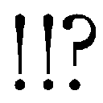

| L3 詐欺師フラットランドのおそらくは華麗なる伝説 L 詐欺師フラットランドのおそらくは華麗なる伝説 (富士見ファンタジア文庫) | |
| 坂照 鉄平 | |
| (2012) | |

Ｌ３
詐欺師フラットランドのおそらくは華麗なる伝説
坂照鉄平

富士見ファンタジア文庫
本作品の全部または一部を無断で複製、転載、配信、送信したり、ホームページ上に転載することを禁止します。また、本作品の内容を無断で改変、改ざん等を行うことも禁止します。
本作品購入時にご承諾いただいた規約により、有償・無償にかかわらず本作品を第三者に譲渡することはできません。
本作品を示すサムネイルなどのイメージ画像は、再ダウンロード時に予告なく変更される場合があります。
本作品は縦書きでレイアウトされています。
また、ご覧になるリーディングシステムにより、表示の差が認められることがあります。
口絵・本文イラスト 水谷悠珠
キャラクター原案 水城葵
プロローグ
火を絶やすな。
夜の荒野に人が集えば、誰かが必ずそう囁く。
開拓辺境の夜は怪物だ。重たい闇が道を閉ざし、言葉を呑み込み、静寂を叫んで恐怖を唄う。どんな無頼の心も挫く、陽が昇るまでの暴君。
だから人は火を熾す。闇を燃やし暗がりを焼き、夜明けが来るまで戦い続ける。
なめるんじゃあない。爆ぜる薪の輝きを囲い、人は夜を嘲笑う。
だが少し振り向けば、そこには闇が横たわっている。人はそれを知っている。知っているから身を寄せ合い、嘲笑の狭間にそっと、怯えを隠して囁くのだ。
決して、火を絶やすなと。
◆□□◆
「火を絶やすなよ」
夜営の常でそう呟きながら、クチーヨはへし折った枯木を焚き火へ放り込む。
火を囲む男たちは彼の声には耳も傾けず、仕入れた噂話の披露に夢中だった。
「──で、例の殺人鬼だがよ。とうとう中央都市で吊されたって言うじゃねぇか」
針金のような顎髭をさすっているのは、焚き火の前に陣取ったカリンチャである。その巨体のおかげで火にかけたコーヒーのポットが余計に小さく見えた。
「スカしたツラの優男だったってんだが、同じ絞首台に、判事をたらし込んで三つの開拓街を傾かせたアバズレが上がってな。なんとも華のある処刑だったとよ」
「いま中央で仕事をするのは素人だ」
カリンチャの背後で、岩にもたれたアルフォンソが鼻を鳴らす。彼は元から鋭い眼をさらに細め、弄んでいた五指剣をジャケットの懐にしまった。
「先日、コステロ一味が『アビスパス』の貨物車を狙い返り討ちにあったと聞いている」
「コステロ！ 大物じゃないか。やられたのか」
驚くクチーヨに一度視線を投げ、アルフォンソは月の見えない夜空を見上げる。
「まだ警戒は厳しい。中央に向かう予定は考え直した方がいいな」
「だがアルよぉ。仕事をしなけりゃ問題ねぇんだろぉ？」
口を挟むのは、仲間内で一番小柄なイタロ。呑気な性格だが目端が利く。この夜営地も彼が見つけた場所だ。水場に近い岩山の陰。獣も容易には近づけない。
「なんでもすげぇ女優がいるって噂だ。少し前に流れてきて、いまじゃ男も女もそいつに夢中って話だぜぇ。きっといい女だぁ、見物に行く価値はある。だろぉ？」
「くだらねぇな。いまは仕事のアテが先だ」
答えたのはアルフォンソではない。
皆から少し離れた、灯りの輪と夜闇の境界線。そこに男が座っていた。暗がりを逆に食い尽くすような黒いコートにくるまり、無骨なライフルを抱えている。
肩をすくめるイタロに小さく頭を振って、コートの男ノートンはゆらりと立ち上がった。
「......サングリーノヒルの噂を聞いた者は？」
静かな問いに、全員が顔を見合わせる。
岩から背を離し、アルフォンソが焚き火のそばに寄ってきた。
「それなら、ここにいる全員が知ってる。あそこには州国が丸ごと買えるほどの『お宝』が埋まっているらしいってな。あんたが聞いたのもその手の噂だろう？」
「そうだ。四日で街へ入るぞ」
さらりと告げるノートンに、四人がぎょっと目を剥く。
蹴飛ばしかけた自分のカップを慌てて押さえ、カリンチャが困惑した声を上げた。
「方々に散った五人が、同じ噂を聞いて戻ってきたんだ。怪しすぎるぜ」
「そんなことはガキでも分かる。だが、ならばどうしてそんな噂が広まった？」
即座に切り返されれば、カリンチャはただ身体を揺するだけだった。
「なにかがあるのさ。『お宝』かどうか知らないが、確かにどでかいなにかがな」
独白めいて呟く彼に、四人は音もなく嘆息した。ノートン・サンダーフィッシュは名うての無法者で、また良きリーダーでもあったが、自分の才覚を試したがる悪癖がある。
話題を逸らそうと思ったのだろう、アルフォンソが不意にこちらを見る。
「クチーヨ、お前はどうだ。なにかネタは掴めなかったのか？」
「え？ ああ、と......そう、こんな話を知ってるか？ 新聞で読んだ西部怪奇実話だ」
しどろもどろに口を開いた途端、アルフォンソは嘆かわしげに額を押さえた。
まともなネタを掴んでたらとっくに言い出してるさ──恨みがましくそちらを睨んでから、クチーヨは唯一興味深そうな様子のイタロに向かって話を始めた。
「ちょうど、今夜みたいな新月の晩だ。コヨーテも寝静まるいま時分、荒野の闇の彼方から魂を腐らせるような悲鳴が聞こえてくることがある」
「......？ おい。なにか聞こえなかったか」
ふと、ノートンが背後を振り返ってライフルを構える。その言葉にカリンチャとアルフォンソが立ち上がるが、ムキになっていたクチーヨは構わず話を続けた。
「その悲鳴は不吉の証だ。下僕の魂を狩り集める、死神の戦車が現れる合図なのさ」
「誰か来る。......通りすがりか、ここへ向かってるんじゃなさそうだな」
錆びたサーベルを握りしめ、カリンチャが巨体を器用に岩陰へ隠す。
「戦車を牽くのは奴に殺された人間の亡霊だ。死神に魂を奪われた、永遠の奴隷だぜ」
ノートンらが息を呑む音が聞こえた。音などないはずだが、はっきり分かった。
続いて闇から這い出してくる、怨嗟にも似た呻き声。
『............ッは、ぐは......ちょ......アー、ティ......死......マジ、死ぬ。死......』
なにやらただならぬ単語を連呼しているが、クチーヨはあくまで無視を決めこむ。
「鋼鉄の戦車に乗った死神は骸骨とも、絶世の美女とも、はたまた怪物・竜の姿とも言われてる。なんにせよ、ロクなもんじゃないってことは確かだけどな──」
『弱音を吐くのが早すぎるぞ。街まで先は長いのだろうが』
『......え？ まさかサングリーノヒルまでずっとコレ引っ張ってくの!?』
『腑抜けた根性を鍛え直す良い機会だな。さあ走れ』
『助けてえぇ────ッ!?』
そろそろ振り向かずにはいられなかった。
闇の帳の向こうに見えたのは、いかにも亡霊じみて泣き叫びながら紐で繋がれた鋼鉄の機械を牽く男と、その機械に腰掛けた、骸骨のように白く竜のように無慈悲な美貌の少女。こちらに気づいた様子もなく、のろのろと闇へ消えていく......
数分もそのまま固まっていただろうか。
焚き火が崩れる音でクチーヨは我に返った。ノートンは無言で戻ってきており、カリンチャとアルフォンソも火の前に腰を下ろす。イタロは、居心地悪げに身じろいでいた。
見上げる彼とイタロに、ノートンは順番に視線を向けてくる。それからアルフォンソに目配せし、カリンチャへ確認の一瞥をくれると、おもむろに口を開いた。
何をとも、どうしてとも彼は言わなかったが。
「..............................やっぱ、やめとく？」
『おう』
寸分違わぬタイミングで、四人は力強く頷いた。
第一章 坑の中の群像劇 Bumping Bumpkins
開拓街に名前を付けるのは法律書に記された義務というわけではない。
だが先駆者たちは、必ず街に名を付ける。呼び名がないのは実際的に不便であるし、なにより彼らの手で拓いた街は彼らの誇りであるからだ。だからどのように奇妙な名前にせよ、そこにはそれなりの理由や思惑がある。
そういった意味で、サングリーノヒルは訪れる者を困惑させる街と言えた。
「血まみれの丘？」
「そう、サングリーノヒル」
不思議そうに呟く声に答えて、バーン・フラットランドは水筒の水を呷った。ブロンドの映えるその整った造作の顔は、旅の汚れを落とせばさぞ見栄えがすることだろう。
水の滴を拭って、彼は向かいの岩に腰掛けた連れへ水筒を投げた。
「何百年も昔、ここで大きな戦乱があったんだって。その戦で死んだ大勢の騎士の血で、丘が真っ赤に染まったって逸話から付けられた名前らしいね」
「物騒な名の割には、ずいぶん栄えているようだが」
投げられた水筒を見向きもせず受け止めたのは、長い黒髪の少女だ。
眼下を見る横顔は凜と鋭く引き締められて、その古めかしい物言いと共に、可愛らしいとすら言える矮躯にはいかにも不釣り合いに思える。
風に踊る髪と茜色の襟巻を押さえる彼女に肩をすくめ、バーンは崖下を見た。
「大陸随一の鉱山都市だからね。採れる鉱石は豊富だし、量も質もハンパじゃない。大陸中からサングリーノヒルへ専用のレールが敷かれてるくらいさ。ほら」
崖下に広がる巨大な街の外縁、ちょうど白煙を曳いて街へ入っていく列車を指さす。
「もちろん技術屋も揃ってるよ。......こいつをいじれる職人がいればいいんだけど」
ぼそりと呟き、バーンは渋い顔で傍らに視線を向けた。
そこにあるのは、鈍い鋼鉄色に輝く無骨な面構えの機械──二輪駆動機。
「もう、故障したこれ引っ張って走らされるのは勘弁だからね」
「むう。お前にはちょうどいい修行の枷だったのだがな」
「......僕的には軽く地獄体験してきた気分だったけど」
淡々と言って水筒に口をつける少女に、バーンは半眼で呻いた。
彼女、アーティア・アリア・ノルガンディアと開拓辺境を旅するようになってしばらくが経つ。今さら深く追及することでもなく、彼は岩から腰を上げた。
「そろそろ行こっか。いまから峠を下れば、日没前には街へ入れるよ」
「そうか。............しかしけったいな名の街だな」
頷き、アーティアは岩を飛び降りて腰のショートマントについた砂を払い落とす。
「あれは、なにひとつ丘ではなかろうに」
「昔は本当に小さな丘だったらしいよ。あんまり良く鉱石が採れるもんだから採掘規模がどんどん拡大していって、終いにあんな深くなっちゃったって話だけど」
トランプホイールに引っ掛けたマントを取り上げ、バーンは彼女の隣に並んだ。
見下ろすのは荒野に穿たれた巨大な縦坑──大坑道サングリーノヒル。
◆□□◆
汽笛が鳴り、列車が速度を落とす。
暗闇の中で彼女は息をついた。この部屋はまるで鋼鉄の箱だった。錠の下りた扉と、彼女がうずくまっているパイプベッドの他には窓すらない。
ほどなく列車が停止する。分厚い鉄板の向こうで、人の声や蒸気釜からスチームを排出する音が聞こえた。それに続いて、錠前を外す音も。
「──お疲れ、お姫様。到着だ」
重い音を立てて開いた扉に、背の高い男がもたれている。髪を長く伸ばした優男だが、それに見合う容貌ではあった。盛り場を歩けば女たちが放ってはおかないだろう。
ベッドを降り、ふらふらと歩き出す。足下がおぼつかず、自分の足に躓いて転びそうになったところを、予期していたように待ち受けていた男の腕に抱き止められた。
「気をつけて。......さすがに女の子にはキツいスケジュールだったね」
やんわりと支える腕を乱暴に払いのけて、彼女は列車を飛び降りる。
久しぶりに浴びる陽の光は眼を焼くが、それはむしろ心地良い痛みだ。染みついた暗闇を洗い流すような気持ちで、彼女は身体を見下ろす。
頼りない矮躯を包むのはいつも通りのぼろ服。何枚も重ねて纏った服にはいずれも派手な文様が織り込まれている。全体的に見てしまえば小汚い恰好だが、右腕を隠すように巻き付けられた革のベルトだけが膠も匂いそうな新品だった。
その右腕にそっと触れてから、彼女は歩き出す。ステーションの出口には駅員の姿もない、と──その時、後ろから、彼の声が追いかけてきた。
「僕とデイジーは、これから発注していた部品の調整に立ち会う。今日は例の連絡さえつけてくれれば好きに過ごしていいよ。ただ気をつけてくれ、君になにかあったら大変だ」
気遣わしげなその言葉に、しかし彼女は嫌悪の表情で振り返る。
「......くたばれ、まぬけ野郎」
吐き捨てた罵声にも動じず、彼はにこやかに手を振ってきた。
忌々しげに舌打ちする。そしてホームを占拠する巨大な車体に掲げられた、橙と黒の縞模様に塗られた菱形の紋章を睨みつけ──彼女は、ステーションを後にした。
◆□□◆
サングリーノヒルとは大地に開いた縦坑と、その内部に築かれた街の名である。
今なお掘り下げられ続ける坑は上から落とした葉巻が底につく頃には燃え尽きていると揶揄されるほど深く、一周するのに馬を走らせて半日かかるほど広い。
「......なんちゅう巨大な穴だ、まったく......」
呆然と呟き、アーティアは銀色の眼を丸くしていた。
「掘り出した土を全部集めたら、ちょっとした山くらいできるんじゃないかな」
二輪駆動機を押して歩きながら、バーンは隣の彼女を振り向く。
二人が歩いているのは、坑の縁を廻る回廊状のストリートだった。人も列車もここから内部へ下っていくのだが、陽も沈みかけた今の時間帯は人の姿もまばらである。
「始終どこかの坑で採掘してるからね。なんでか、落盤なんかは少ないみたいだけど」
「......ふむ。この辺りの大地はよく星の命が巡っているようだからな」
思案げに呟き、アーティアはしゃがみ込んで地面に手を触れた。硬く地均しはされているが、幅広い通りは舗装もされていない。指先についた土を眺め、彼女は眉根を寄せる。
「だがなぜ人間の街に、これほど強く生命が満ちている......？」
「答えになるのか分かんないけど......地質が良いことに関しちゃ心当たりはあるよ」
言いながら道を逸れるバーンに、彼女は首を捻りながらついてきた。
壁面に沿ったスロープを下ると、先ほどよりも幾分か狭く、人通りの多い道に出る。注意して機体を転がし、通りの端──縦坑を見下ろせる位置まで移動する。後ろからやって来たアーティアは転落防止柵の向こうを見た途端、眼を丸くした。
「！ あれは──！」
彼女の視線の先、街の中央にそびえているのは、獣の骨だった。夕陽を浴び茜色に染まった骨格は広大な縦坑の大部分を占めている。その巨体はもはや、一つの地形。
骨は奇妙な形だった。近い恰好の動物を探すとすれば蜥蜴が適当だろうが、天へ伸びる長い首の先には厳めしい牙と角を備えた顎が鎮座し、四肢には三日月のような爪が生えている。大樹のような尾は弧を描き、背中からは大きな翼が広がっていた。
竜──開拓辺境の最も危険な一要素にして、比類無き荒野の覇者である。
成功と名声を求め荒野に踏み出す先駆者を打ちのめし、ねじ伏せ、征服する脅威。目の前の物言わぬ骸ですら、そんな圧倒的な存在の格差を纏っているように思えた。
「採掘を続けるうちに出土てきたんだってさ。重機使っても壊れないし、動かせもしないってんで、そのまま利用する方向になったらしいよ」
坑の中心にそびえる竜の内部には、骨を土台に幾棟もの建物が密集している。巨大で形状は複雑、しかも頑丈という竜の骨格は実際的に便利であったらしく、網のように張り巡らされた空中通路や鉄道の中継点として交通の要衝を担っていた。
「街の古い人なんかは、この街は竜に護られてるから事故もなく良い鉱石が採れるって言うんだけど。本当かどうかは分かんないね」
「恐らく本当だ。......この地で果てた竜の命が、大地を強く祝福している」
軽く告げる彼に、アーティアははっきりと答える。
「もしやこの街──《罪人竜の息吹》に関する手がかりが？」
「残念。理想はそうだったんだけど、心当たりはないよ」
期待を込めた眼差しを向ける彼女に苦笑を返し、バーンは通りを見回した。店を広げる露天商や屋台も現れ始め、辺りの賑わいは増す一方だ。
「ま、のんびりいこうよ。竜の骨もそうだけど、街自体が変わってるから見どころは多いよ。活気に溢れた楽しいところさ。ただ、まあ──」
そこで言葉を切り、バーンは横目に視線を流した。つられたアーティアがそちらを向く頃には──彼は雑踏に紛れようとしていた人物の腕を掴まえていた。
「要するにスリとか泥棒なんか多いってことでもあるから、気をつけてね」
「な......なんだよお前！」
慌てるでもなく笑うバーンが捕らえているのは、小柄な少女である。
アーティアとそう変わらない年頃だろうか。長い髪は随分砂を噛んでいるようだが、それでも綺麗な亜麻色を保っていて、前髪を押さえる頭布の風合いになじんでいる。
「離せよ、わたしがなにしたってんだ！」
「まあまあ。盗ったもの返してくれれば、僕も騒ぎ立てる気はないよ」
片目を瞑り微笑むバーンに、少女はぐっと押し黙った。それからいかにも渋々といった様子で、何枚も掻き合わせた服の懐から取り出した革の財布を放ってくる。
「......トロそうなツラして、目がいいじゃないか」
「もう辺境も長いからね。一人でスリやるときは、あんまりカモ睨まない方がいいよ」
「大きなお世話！ さっさと離せ！」
きっ、とつり上げる深い朱色の双眸からは、迫力ではなく猫じみた愛らしさしか感じられない。バーンは飄々と首を振り、少女の身体を間近に引き寄せた。
「財布なんかどうでもいい。──盗まれたのは、僕の心だ」
「....................................、は？」
「君が愛を注いでくれない限り、この胸に空いた空虚を満たすことはできないのさ。てことで、ご飯でもどう？ 三層下にいいマンナーヤ料理の店があるんだ。裏メニューで出してくれるラ・ルッリのポートワインは最高だよ。あ、肉と魚どっちが好み？」
「ちょ、なに!? なに言ってんのこいつ!?」
「私に訊くな」
流れるようにまくし立てるバーンに気圧され、少女がアーティアの方へ助けを求めるような視線を送る。苦い顔で呻く彼女を振り向き、バーンは大袈裟に両腕を広げた。
「大丈夫、僕の腕の中はいつでも君のために空けてあるさ。飛び込んでみる？」
「やかましい。......おい、逃げたぞ」
冷たく言い捨てたアーティアが指さす方を見れば、少女はすでに通りの彼方まで離れていた。革のベルトで覆われた右腕を振り回し、東部のスラングで怒鳴ってくる。
「バカにすんなっ！ さっさとくたばれ、まぬけ野郎っ!!」
騒がしく走り去る少女へ呑気に手など振るバーンを、アーティアが横目に睨んだ。
「......仕事は控えろと言っとろうが、与太者め」
「え？ いや、今のはただの条件反射って言うか......ほら、可愛かったし」
立派な理由だとばかりに真顔で答えると、思い切り足を踏まれる。
──バーンの『仕事』は、持って生まれた優れた容姿と口先三寸で「客」になりそうな女性に近づくことから始まる。囁く虚言と愛の詩で彼女たちを酔わせ、惑わせては彼女たちの庇護のもとのうのうと過ごし、一朝事あらば煙のごとく姿を晦ます。情夫だのジゴロだのと呼ぶ者もないではないが、多くは彼を詐欺師と呼んだ。......さておき。
「とにかく、まず修理屋を探そう。これなんとかしなくちゃ身動きとれないし」
「そうだな。探せ」
「......うん、まあ探すけど」
半眼で見つめると、アーティアは決まり悪げに目を逸らした。
こういった大きな街で店や人を探すのはコツが要るが......彼女はそもそも、街という場所自体に慣れていない。もとより自分が探すしかないのではあるが。
「君が少し手伝ってくれれば、僕のモチベーションが段違いなんだけどな」
「............そ、そうか。なにをすればいい？」
「簡単だよ。明日ご褒美に一日デートしてくれるって約束してくれれ────、ば？」
真剣に見上げてくる彼女を見つめ返す眼前に──ふと、黒い棒が突き出される。
「そこまでだ、色男」
鈍い金属光沢を放つその棒がライフルの銃身だと気付いたのは、横合いから声をかけられてからだった。重く乾いた、聞く者を萎縮させずにはおかない低音。
身構えるアーティアを慌てた身振りで制しながら、バーンは慎重に背後を見る。
「だ──誰か知らないけど待とうよ、ね？ ジョークにしちゃ物騒、じゃ────」
両手を挙げてそろりと振り返ったバーンは、突然、浮かべていた愛想笑いを崩した。
そこにいたのは壮年の男だった。整った口髭に似合う漆黒の帽子とスーツをひと揃いに、上等のインバネス。ポケットには金時計の鎖まで覗いており、銃床と銃身を切り詰めたライフルさえ握っていなければ紳士と呼べる出で立ちである。
男は撃鉄の起きていないライフルを下ろし、猛禽類を思わせる顔をかすかに緩めた。
「俺の前で仕事をするなといったはずだ、バーン・フラットランド」
「......ルパー、ト？ ルパート・ヘルフェンツっ!?」
こぼれ落ちそうなほど目を見開いて、バーンは裏返った声で叫んだ。挙げっぱなしだった両手でそのまま男の肩を叩き、子供のような笑みに顔を輝かせる。
「うわー久しぶり、なに、まだ生きてたんだ!? うわ、うわ、何年ぶりだろ！」
「三、いや四年か。......お前は相変わらず節操がないようだが、牢屋が恋しいのか？」
ちらりとアーティアを見やる彼に、バーンは気楽に笑って手を振り返した。
「この子とは仕事の付き合いじゃないよ。名前はアーティア。可愛いでしょ？ アーティア、このオッサンはルパート。腕利きの遊撃保安官なんだ」
「遊撃保安官、とな」
「うん。要は......ええと。まあ、保安官の出前みたいなもんさ」
首を傾げる彼女に説明しようと口を開いた途端、男──ルパートが寒気のするほど鋭い視線で睨んできたので、極端に要約した言葉でごまかしておく。
遊撃保安官は決まった任地を持たない。州国議会の命令によってのみ動く彼らは、確かに保安官の足りない街へ派遣されることもあるが......主な任務は公には出来ない議会の密命を遂行することだ。その性質上、あまり実態を知られることは好まない。
「あんたがいるってことは、この街でなんか厄介事かい？」
「いや。確かに仕事だが、いまのところ実際的な危険はないな」
帽子のつばを押し上げ、彼は辺りの人混みを睥睨した。
「お前は──例の『お宝』の噂を聞いて来たのか？」
「噂、って......ああ、『サングリーノヒルのお宝』かい？」
思い出したように訊いてくるルパートに目を瞬かせる。その噂は最近、あちこちの街で囁かれており、バーンも幾度か耳にはしていたが......
「ぜんぜん別口。僕らはトランプホイールの修理にきただけさ」
「......そうか。つまらんことを訊いた」
「あ、そうだ。どこか、腕の良い修理屋に心当たりない？ これ、ちょっと特殊なエンジンでね。オーガンライト鉄鋼が扱える人だとありがたいんだけど」
思案げな顔で黙り込むルパートに、バーンは傍らの機体を叩きながら訊ねた。しばし黙っていた彼は、ややあって顔を上げると、おもむろに通りの一方へ顎をしゃくる。
「......この先、坑内列車のステーションのそばに『モンド・モーター』という店がある。汚い店だが議会の列車の整備もしていたはずだ。腕は悪くないだろうよ」
「ん、サンキュー。あんたの仕事の中身は、訊かない方がいいのかな」
「そうしろ〝嘘つきバーン〟。......その間抜けと仲良くしてやってくれ、アーティア」
きょとんとする彼女が答える前に、彼はライフルをコートに隠し、足下のトランクを持ち上げ歩き出した。その背を見送り、バーンはトランプホイールのスタンドを蹴る。
「じゃ、僕らも行こっか。やー、探す手間が省けてよかった」
「む。......いまの男、知り合いなのか？」
小走りに隣に並んでくる彼女を振り向き、バーンは苦い顔で舌を突き出した。
「腐れ縁だよ、昔っから仕事中にカチ合う人でね。その度に牢屋に放り込まれたもんさ。何度も危ないとこ助けてもらったりもしたし、そこんとこ感謝はしてるけどね」
「ふむ。......ずいぶん慕っているようだな」
「は──!? いやいや、冗談やめてくれ！ なんでそうな、」
「ひねくれた子供が父親を自慢するときの顔をしている」
「..............................、マジで？」
「マジで、だ」
愕然とする彼へにやりと笑い、アーティアはさっさと先に行ってしまう。尻尾のように揺れる彼女の髪を眺め......バーンはふと、ルパートの言葉を思い返す。
あんな事を訊くからには噂か、『お宝』そのものが彼の仕事に関わっているのだろう。議会がヤマ師の真似事をしろと命じるわけもないだろうから、実態調査というところか。だがそれこそ、食い詰めたヤマ師に飲み代でも投げてやれば調べの付きそうな話ではある。
ルパートを......州国有数の保安官を使う理由が別にあるということだ。
（一儲けに繋がる話か、ただの厄ネタか──さて。首を突っ込むべきかな？）
裏の臭ってきた話に、冴えた立ち回り方を検討しつつ。
彼はアーティアを追いかけて、重い機体を転がしていった。
◆□□◆
「ああ......大丈夫ですがなダンナ、この型ならよーく知っちょります」
『モンド・モーター』は確かに汚い店だった。もっともそれは、あちこちに機材や道具が散らばっているせいで、不潔というよりは無頓着な職人の乱雑さだったが。
岩肌剥き出しの天井にぶら下がった油式ランプを見上げるアーティアの背後で、ずんぐりした初老の店主が南部訛りの強い言葉で後を続ける。
「オーガンライト・エンジンちゅうのは起動用の突槌がいっとうイカれやすいで。手間ァかかるがめっぽう頑丈にできちょるがな。部品を交換してやればすぐ生き返るでよ」
「へー......さっすが。このエンジン、まだ一般には出回ってないはずなんだけどね」
したり顔で腕を組み、バーンは感服した様子で頷いた。作業用と思しき鉄板の上に載せられた二輪駆動機のシートをぽんと叩き、店主は人の良い笑みを浮かべる。
「オーガンライト鉄鋼をいじれるのはサングリーノヒルでもあしくらいのものですがな。なにせ『アビスパス』と専従契約させて頂いちょりますで」
そう言って、彼は油染みだらけの前掛けから布巾を取り出し、メインフレームに螺子留めされた菱形のエンブレムを磨き上げる。橙と黒の縞模様に塗られたそれは、イーネルアイグレス州国最大手の複合企業『アビスパス』のシンボルサインだ。
オーガンライト鉄鋼とは加えられた衝撃を熱に変換する特殊金属である。オーガンライト・エンジンは、その特性を利用し『アビスパス』が開発した新型動力だ。
「ダンナも『アビスパス』のお方ですかい」
「まあね。試作品のモニターを兼ねた外回りってとこかな」
バーンは眉一筋も動かさず即座に言ってのけるが......実のところ、この機体はしばらく前、ある事件のどさくさで『アビスパス』から強奪した盗品である。
「ダンナも......ってことは、他にも誰か来てるの？」
「昼間に見えたでよ。髪の長い兄さんとどえらいべっぴんさんの二人連れでしたがな」
「へえ、べっぴんさん............なるほど。べっぴんさん」
「繰り返すな」
この上なく真剣に呟く彼に、錆びた螺子留めを拾って投げつけておく。悲鳴を上げるバーンを仏頂面で睨んでいると、店主が愉快そうに太鼓腹を揺すった。
「それじゃ預からせてもらうだが、今は立てこんどるで二、三日待ってもらうでよ。請求書は『アビスパス』の方へ回しとくんでええかね？」
「うん、よろしく。......宿が決まったら後で取りにくるから、荷物も置いといていい？ 請求書、ここ改築できるくらいイロつけちゃっていいからさ」
「あしは機械いじりしかできん男ですがな。この穴ぐらが似合いだで」
含みなく笑って頷く店主に肩をすくめ、バーンはアーティアをうながし外へ出る。それから大きく伸びをして笑いかけてきた。
「さて、目的は果たせたし──ご飯でも食べに行こっか？」
「おおっ。............じ、時間も時間だからな」
露骨に顔が輝いたのをごまかすように坑の上方を見れば、茜色だった空は東の方から藍色に染まり始めている。実際、空腹を感じ始めていたところではあった。
「それじゃあちらへどーぞ、お姫様。けっこう下まで降りるよ」
「うん？......あれは、鉄道というやつか」
彼が冗談交じりの恭しさで示したのは、通りの端に設けられた小さいステーション。土台を打ってあるだけで、駅舎もなければ駅員もいない。停まっている列車もずいぶん古びているようだった。人混みの中、バーンに手を引かれるままその列車へ乗り込み適当な空席に落ち着いたところで、鐘が鳴って列車は動き出した。
揺れる車内を物珍しげに見回していると、向かいに座ったバーンが口を開く。
「このまま、四層下まで乗ってくよ。ちょっと時間かかるけどね」
「む。......これは街の外へは行かないのか？」
「坑内鉄道だからね。広いし高低差のある街だから、専用の足がいるってわけさ。......あれ、そういやアーティア、大丈夫？ 高いとこ苦手だろ？」
思い出したように言って、バーンは首を傾げた。彼女が眺めている窓の外にはサングリーノヒルの街が一望でき、遥か下方に灯火がちらついている。
だが彼女は、むしろその質問を待っていたと言わんばかりに胸を張ってみせた。
「橋だの建物だの、いつ壊れるかわからん物が信用できんだけだ。ここの大地は竜の命に祝福されているからな。どれだけ人の手が入っても、そうそう崩れはせん」
「............じゃ、さっきからちょくちょく鉄橋とか渡ってるのは黙っておくね」
彼の言葉は聞かず、アーティアは浮かれた調子で外の風景に見入っている、と。
「──どけっ！ ああもう、どけってばッ！」
車両の後方から、苛立たしげな叫び声が聞こえてきた。押しのけられたらしい乗客の怒声や通路を駆け抜ける騒がしい足音がこちらへ近づいてくる。
通路の方へ首を巡らせた瞬間──鼻先を、なにかが勢いよく通り過ぎていった。薄汚れた格好をした少女が亜麻色の髪をなびかせ、前の車両へ駆けていく。
一瞬のことで顔までは見えなかったが......見覚えのある背恰好だ。
「......あれは、もしや？」
「多分ね。............タフな子だなあ」
低い声で呟くアーティアに、バーンも小声で耳打ちを返してきた。今のは、街の入り口で彼の財布を盗もうとした少女だ。まだこりずに仕事を続けているらしい。
「──嬢ちゃん、どいとくれ！」
ふと、近くで上がった大声にアーティアはぱっと通路から首を引っ込めた。
その前髪を掠めるように、通路を誰かが駆け抜けていく。
「すまんの、盗人を追っとるんじゃい！」
さっと手を掲げていくのは、今の少女以上に薄汚れた恰好の老人だった。帯で締めた膝下まである長い上着にゆったりしたズボン、たっぷりたくわえた口髭と同じ白髪にのせた帽子から靴にいたるまで、すべてが雑巾と大差ないボロ布で出来ている。
「......盗人、って......あの子のことだよね」
「だろうな。馬鹿をしでかしたものだ──あの老人、只者ではないぞ」
眉をひそめるバーンに頷き返し、アーティアは客車を見回した。
少女の時と違い、乗客はまるで騒いでいない。それぞれの話に興じ、弁当を広げ、居眠りし──すれ違う老人にぶつかった者すら、何もなかったように座席に戻っていく。
「気配を殺すのではなく、同調したのだな。あの目立つ風体で見事なものだ」
「確かに目立つよなあ......いまどき心衣なんか着てる人見たことないもん」
分かったような顔で腕を組み、バーンが微妙にピントのずれたことを言う。
心衣は、東方の土業師に発祥する作業着だ。動きを阻害しないため拳法の修練着などにも使われるが、そもそも拳法自体がメジャーでない州国では滅多にお目にかからない。
「捕まるのは時間の問題だろうな......で、どこへ行くのだ、お前」
無言で席を立とうとしていたバーンは、唸る彼女の半眼を真っ直ぐ見つめ返した。
「人助けに理由なんていらない。僕の人類愛が燃え上がっているのさ」
「本音は」
「いまあの子助けたらまさに運命の再会じゃないか。僕なら惚れるよ」
どこまでも真剣なその顔に、とりあえずパンチを喰らわせておく。
のけ反るバーンは気にせず前方客車を見やり、アーティアはしかめ面で嘆息した。
「まったく──面倒に巻き込まれる私の身にもなれ、与太者め」
「......あれ、来てくれるの？」
殴られた鼻を押さえ涙目で訊いてくるバーンを横目に見て、彼女は口を尖らせた。
「悪いか」
「すっごく助かる。僕一人じゃケンカになったとき収拾つかないじゃないか」
恥以外の何でもないことを堂々と口走り、バーンはへらりと微笑む。無邪気な──行動原理は邪そのものだが──笑顔を一瞥し、アーティアは先に走り出す。通路を駆け抜け次の車両に乗り移ろうとした時、頭上を硬い物音が通過していった。
立ち止まって天井を見上げる。屋根の上から聞こえてくるその音は二つあるようで──端的に言えば、屋根の上で誰かが追いかけられている音に聞こえた。
「アクロバチックな逃げ方するなぁ......追っかけるの大変なのに」
げんなりと言うバーンは無視し、アーティアは車両の連結部から屋根に飛びつく。
懸垂の要領で這い上がった木製の屋根は、緩いアーチを描いていた。探していた姿は車両の中心近くに見える。吹き付ける風と列車の振動を意にも介さず、草原を行くような軽い足取りで近づいていく老人に、少女が振り返りざまに何かを投げつけた。
老人はあっさりとそれを避けてみせる。的を外したそれは風の中をふらふらと飛び、
「あだッ!?」
ちょうど登ってきたバーンの額にぶつかった。硬い音を立て屋根の上に落ちたのは、投擲用のナイフ。投げ方が拙かったせいで柄の方が当たったらしい。
半眼で差し伸べたアーティアの手に掴まり這い上がってくると、彼は涙声で呻く。
「あーもう、いッてぇ......うわ、なにこれナイフ!? 危な！」
「コブすらできとらんわ。情けない声を出すな根性なし」
「商売道具だもん、気にするってば。......で、君はなにしてんの？」
立ち上がって訊いてくる彼に、アーティアは座り込んだまま視線を逸らした。
「察せ」
「えーと。登ってみたら案外高くて怖くなったんじゃないかなって思う」
「......だから人間の街は嫌いなんだ......あ、こら離すな離すな、離すな。離すなッ」
静かに切羽詰まった声で訴え、彼の手にしがみつく。
列車は、竜の骨へ繋がる大鉄橋に差しかかっていた。眼下に広がる街は迫る夜のせいでどこまでも暗く、深く、高く......身体が竦み、もはや視線を動かすことも出来ない。
「橋はだめなんだ......崩れる。落ちる。でなければ腐る。腐って落ちる」
「いや分かんないけど、その信念は。まあ、確かにおっかない状況だしね」
半眼で言いながら、彼は隣にしゃがんで頭を撫でてくる。
少女はこちらに気付いた様子もなく、服の裾とブーツからそれぞれナイフを抜き、同時に老人へ投げつける。一本は完全に軌道が逸れていたが、もう一本が真っ直ぐに老人の眉間を狙っていた。老人は慌てず足を止め、懐から素早く何かを抜き放つ。
次の瞬間、ナイフは老人の抜いた二本の棒に挟まれ、止められていた。
「......デコはシャレにならんじゃろ、デコは」
「ばッ、ば、バケモンかよ、お前っ!?」
渋い顔で呟きナイフを捨てる老人に、少女が裏返った声で叫ぶ。老人が右手に握っているのは──黒塗りの長い、箸だった。
舌打ちし、少女が襟の裏からナイフを抜く。老人も、呆れた風にかちかちと箸を鳴らした。固唾を呑んで双方を注視していると──不意に、視界が屋根の板で埋まる。
押し倒されたのだと気付いたのは、上に覆い被さったバーンが叫んでからだった。
「二人とも、伏せろーっ!!」
張り上げた声の余韻が消えると同時か、あるいは一瞬早く、すぐ上空を何かが勢いよく通り過ぎていく。バーンの下から這い出して、アーティアは顔を上げる。
「ッ......なんだ!?」
レールの後方、木製の給水塔から延びるパイプの高さぎりぎりに列車が走っていた。先ほど通り過ぎていったのはあのパイプだったらしい。見れば少女と老人も屋根に伏せ、ぞっとした顔でそちらを眺めていた。ふらふらと立ち上がった老人が手を振ってくる。
「すまんのう、誰か知らんが助かったわい！」
「あー間に合ってよかったよ！......ってちょ、待った待った君、待ったッ!?」
安堵に緩んだ顔を再び蒼白にして、バーンが慌てて身を起こす。その視線の先には静かに立ち上がり、老人に跳びかかっていく少女の姿。無防備な老人の後頭部にナイフの柄が振り下ろされ──そのまま、何にも当たらず振り抜かれる。
目標を見失ってたたらを踏む少女の腕は、幻のように背後へ回り込んでいた老人にねじり上げられていた。懐へ箸を戻し、老人は彼女からナイフを奪って投げ捨てる。
「ぶっしゃっしゃ、勝負あったのう。盗んだ物を返せば見逃してやるぞい」
「なめるな、まぬけ野郎！ そんな変な笑い声の奴に哀れまれてたまるかっ!!」
「ま、まあまあ......穏便に行こうよ、二人とも」
こけにするように笑う老人と怒鳴る少女に、バーンが宥めるように手を振って歩み寄る──もう片方の手には、怯えたアーティアがしっかり掴まっていた。
「やあ。今度はいったいなに盗んだんだい？」
「か、関係ないだろ!? なんでお前がいるん、だ────？」
声のトーンを跳ね上げた少女は、そこで大きく目を見開き言葉を止める。視線は、こちらを通り過ぎて背後を見つめていた。
振り返れば、隣のレールを並走している列車がある。
遠目にも巨大なその列車は、戦争でも始める気なのか、鋼鉄で覆った車体に幾つもの砲塔を据えつけており............その砲身のことごとくが、こちらを向いていた。
立ち尽くす四人の耳に、鋼鉄の列車から拡声器を通した声が呼びかけてくる。
『そこの連絡車、すぐに最寄りのステーションに入れ。屋根の上の連中はその場に伏せていろ。繰り返す、そこの連絡車──』
「......なんか、ろくでもないことになってきたって気がしない？」
「............ずいぶん前からそう思っていたが、改めて確信できたな」
泣きそうな笑顔で振り向くバーンにすがったまま、アーティアは深く嘆息する。
鋼鉄の列車は、車体に掲げた菱形の紋章の橙と黒の縞模様が、薄闇の中でもはっきり確認できる距離にまで近づきつつあった。
「さて......いったいどういう状況かな、これは」
コンクリート打ちのステーションに立ち。
慌ただしくホームを出て行く坑内列車を恨みがましく見送って、バーンはいやいや視線を前に戻した。巨大な鋼鉄の列車を背に、一人の男が立っている。
綺麗な顔立ちの男だった。長く伸ばした細い髪は気障すぎるかも知れないが、その鋭利な美貌には相応しいように思える。歳の読みにくい顔だが、彼よりは年上だろう。
男はタイトなスーツに包まれた腕を組み、藍色の瞳で一同を見回す。
「まず名乗っておこう──僕はナジロ・ティンブリッジ。列車を見れば分かるだろうけど『アビスパス』の者だ。その子は身内なんでね、事情を聞かせてもらえるかい？」
「儂は、荷物を奪われたんで追っかけとっただけじゃがのう」
最終的に少女を睨んで目を止めるナジロに答えたのは、心衣の老人。
彼は一瞬だけそちらを見、すぐに少女へ視線を戻した。彼女は反抗的に顔をしかめ、それでもすぐ服の重ねに手を入れると、そこから取り出した何かを老人に投げつける。
「おお、これじゃ。やっと帰ってきたわい」
顔をほころばせた老人が受け止めたのは、汚い茶碗。どれだけ使い込んでいるのか縁はあちこち欠け、指の形に磨り減ってすらいた。
怪訝顔で見つめるバーンに気付き、老人はふと顔を向けてくる。
「手作りだからして。もう五十年の付き合いだぞい」
「なんであんなモン盗んだの、君」
「うるッさい！ あんな大事そうに抱えてりゃ値打ち物だと思うだろ！」
訊ねると、少女は即座に怒鳴り返してきた。小動物じみた愛嬌の滲む顔はほんの微かに紅潮している。こめかみに指を当てて、ナジロがうんざりと口を開いた。
「さあ、納得できたら消えてくれ。それとも彼女を訴えるかい？」
「ぶっしゃっしゃ。こいつさえ戻ってくれば言うことはないわな。のうステファニー」
「名前があるのか」
半眼で呻くアーティアには答えず、老人は茶碗を大切そうに懐にしまい込んでふらふらとステーションを出て行った。そちらは一顧だにせず、ナジロは視線を戻してくる。
「......で、君たちは？」
「通りすがりだよ。この子とはちょっと縁があってね。追いかけられてたみたいだから助けようとしただけさ。それが迷惑だったってんなら謝るけどね」
誰よりも早く前に出て、バーンは流暢にまくし立てた。
（『アビスパス』はまずい............さっさと切り上げなくちゃ）
内心の動揺を悟られないよう、彼は完璧な笑顔を造り上げる。
「僕らも別に彼女を訴える気はないし、失礼するよ。店の予約に遅れそうなんだ」
「そうかい。......君たち、どこかで会った気がするんだが」
「勘違いじゃないかな。僕らただの西部のチリ麺問屋だよ。激辛ソースをヌードルにからめた新商品。あんたの会社にも売り込みに行く予定だからそのときはよろしく」
凄まじい早口で並べ立てつつ、バーンは訝しげな顔で何か言いかけたアーティアを素早く取り押さえてその場を去ろうとする。が。
「バーン・フラットランド──」
突然名を呼ばれて、彼は釘打ちされたように立ち止まった。
背後の列車、ステップの左右に整列した黒服の男たちを睥睨し、誰かがステーションに降り立つ。その人物はしかめ面をするナジロへ、ピンで留めた二枚の紙を放り投げた。
「女の子の方は、アーティア・アリア・ノルガンディア。本社の最重要注意人物も覚えていないなんて......ナジロちゃん、問題ね？」
「余計なお世話だよ、デイジー」
渡された紙束を広げもせず握り潰し、ナジロは忌々しげに舌打ちする。
デイジーと呼ばれた彼女は、口ぶりからすればナジロより年上なのだろう。彼と肩を並べるほどの長身ながら、スリットの深いナイトドレスに包まれた身体は驚くほど細身に絞り上げられている。それでいて、胸や腰は艶やかな曲線を描いていた。
彼女は優雅に歩いてくると、ウェーブのかかった艶やかな髪をかき上げる。
「初めまして、デイジー・ドリトルよ。......手配書よりもセクシーなのね？」
「なら、君が描き直してくれるかい？ もっとよく、しっかり見てからさ」
慣れた調子で微笑み返すバーンに、デイジーは深紅のルージュを引いた唇を三日月の形につり上げた。......隣にアーティアの険悪な気配を感じるが、渾身の力で無視しておく。
剣呑に瞳を研ぐ彼女に目を向けて、デイジーは劇的に毒々しい嘲笑を浮かべた。
「怖い顔しちゃって......そんなんじゃ彼、私がもらっちゃうかも」
「ヘイ──デイジー。デイジー！ 遊んでる場合じゃないだろ」
くすくすと肩を揺する彼女に足音高く詰め寄って、ナジロがしかめ面で腕を振る。
「こいつがバーン・フラットランドならまたとない好機だ。《罪人竜の息吹》を手土産に帰還なんて大手柄じゃないか。こんな埃臭い街で『実験』する必要もない」
「そうよねえ。それって、とっても魅力的」
媚態を作って微笑むと、デイジーは大きく開いたドレスの胸元に手を差し込む。そして豊かな谷間から棒状の紙包みを取り出し、ふとアーティアに視線を向けた。
「......できる？」
「無理かな。痛っ!?」
しみじみ呟くバーンを蹴とばし、アーティアは『アビスパス』の二人を睨みつける。
「──諦めて、消え失せろ。私の牙に裂かれたくないのなら」
「可愛くない子ー」
ほんの少し眉をひそめて、デイジーが取り出した棒を唇にあてがう。半ばまで包み紙を破かれたそれは、子供が喜びそうな派手な色をしたキャンディだった。
「『働き蜂』を甘く見てもらっちゃ、私も面白くないのよねえ」
艶然と微笑み、デイジーは首を捻る。物腰こそ淑やかだったが、ごき、と淑やかならざる音が響いた。ぎょっとして身じろぐバーンに、デイジーはむしろ熱情と情欲を込めて笑いかけながら細腕を引き絞り────不意に、笑みを引っ込める。
残ったキャンディを口にくわえて、彼女は両手を挙げつつ背後を振り返った。
「......乱暴なのは嫌いじゃないけど......ちょっと不躾じゃない？」
からかうように片目を瞑るデイジーには答えず、いつの間にかそこに立っていた男──ルパートは、彼女の背にライフルを突きつけたままこちらを見る。
「......わざわざ俺に先回りして面倒を起こしてるんじゃないだろうな」
「んな無茶な」
あまりの物言いに、情けない声で呻く。......冗談なのだろうが、いかにも気難しげな彼の顔はとにかく感情を読みづらい。
「なんなんだ、あんた。......僕たちが誰だか分かって銃を向けてるのかい」
「自分が誰だか分かっていれば、大抵の相手に遠慮しなくていい仕事でね」
忌々しげに舌打ちするナジロを鷹の眼光で見やり、彼はインバネスの前を開ける。ガンベルトに光るのは真鍮製の保安官章。八つの角を持つその星に、ナジロが顔をしかめた。
「遊撃保安官............ちッ、あんたルパート・ヘルフェンツかい」
うんざりと嘆息するナジロを、デイジーが不思議そうに首を傾げて見つめる。大きく肩をすくめ、彼はここぞとばかりに嘲笑を浮かべる。
「〝風貫きルパート〟を知らないなんて、問題だよデイジー。彼こそ州国最高の兵士だ。......嵐の中、大峡谷越しに六人を撃ち殺したってライフルはそのトランクの中に？」
「軍はとっくに追放されてる。保安官を兵士とは呼べないな」
それに七人だ、と付け加え、ルパートはトランクをホームに下ろした。
「ベットタイムといこう。続けるか、戦るか、お開きか──冴えた判断を期待してるぜ」
今さらざわめき出す黒服たちを手で制し、ナジロは口を閉ざす。バーンはアーティアの肩を抱えて後退しつつあり、デイジーは両手を挙げたまま退屈そうな顔をしていた。
ルパートは辺りを睥睨し──ホームの一端に差しかかったところで視線を止める。
「................................................チェルシー？」
独白めいた小声にすくみ上がったのは、先ほどから黙っていた少女だった。
逃げだそうとしていたらしく、ずいぶん遠くからぎこちなく振り返ってくる彼女に目を丸くし、それから青草を喰ったような顔をすると、ルパートは静かに声を低める。
「チェルシー。お前こんなところでなにをして、」
「ウチの社員にご用が？ 保安官」
うろたえる少女に詰め寄ろうとする彼の前に、ナジロが身体を割り込ませた。
薄く笑う彼に殺意すら籠もった視線を叩きつけ、ルパートは低く唸る。
「社員だと？」
「そうさ。チェルシー・カクタスは我々『アビスパス』の大切な社員でね。知り合いだったとしても、銃を振り回しながら近づいていただきたくはない」
「どういうことだ」
ナジロの肩越しに、ルパートはチェルシーを睨む。
ともすれば詰問ともとれる口調に、彼女はびくりと肩を震わせた。それから反射的に開きかけた唇を慌てて引き締め、朱色の双眸をつり上げて叫び返す。
「──うるさい、うるさいまぬけ野郎！ わッ......わたしのことだ、関係ないだろ!!」
ルパートは何も答えない。
彼女はもう一度何かを叫びかけてから口を閉ざし、弾かれるように身を翻す。ステーションを飛び出していく少女を、ルパートは黙ったまま見送っていた。
その肩に軽く触れ、ナジロが耳打ちするような至近距離で口の端をつり上げる。
「お互い子供じゃない。この場はノーゲームにしようか、保安官。......バーン・フラットランド、今夜のツキは君にあったみたいだな」
「また会いましょう、バーン。......今度は、その子のいないところで」
心にこびりついてくるような妖艶な微笑を浮かべて、デイジーはルパートのライフルを摘んでどかし、悠然と列車の方へ歩いていった。肩をすくめて、ナジロがその後に続く。
無言のまま撃鉄を戻すルパートに、バーンは遠慮がちに声をかけた。
「えーと......ルパート。あの子、知り合い？ チェルシーっていったっけ」
「娘だ」
何でもないことのように告げるルパートに、バーンはぎょっと目を剥く。
「死んだ友人から預かった。本名はチェルシー・アフマンド......母親が東方系の移民でな。混血は迫害されやすいから偽名を使ってるんだろう」
「いッ──いやいや、説明してる場合じゃないじゃん!? 追っかけなきゃ、早く!!」
詰め寄ってわめくバーンに横目の一瞥を寄越してから、ルパートは頭を振った。
「辺境で会うのは初めてじゃない。......俺が気に入らないらしくてな。何度も家を飛び出しちゃ、くだらない連中に紛れてケチな悪事を働いてる」
「......なら、なおさらお前が追うべきではないのか」
「仕事がある。今は、たまたま行き会っただけだ」
困惑顔をするアーティアへ即座に切り返し、ルパートは不意にこちらへライフルを向けた。驚いて後ずさる彼にしかめ面を作り、銃の側面を見せる。
「連中とは関わるべきじゃないようだ。今夜のツキは、本当にお前に回ってる」
「？ それ、どういう──」
眉根を寄せたバーンは、差し出されたライフルの傷を見て口を閉ざした。
無骨な銃身の下部。硬い木製のフォアグリップが楕円形にひしゃげている。指の跡のようにも見えるその傷は、去り際にデイジーが摘んでいった箇所だったが......
「『アビスパス』には気をつけろよ。横紙破りは今に始まったことじゃないが、ここ最近の奴らは............どうにも、不気味だ。得体が知れない」
ライフルをコートの内に吊し、ルパートは帽子を目深に被り直す。
トランクを持ち上げ身を翻す彼の背に、アーティアがとっさに口を開く。が、彼女が言葉を紡ぐより早く、ルパートは先んじて言葉を突きつけてきた。
「チェルシーもなんとかする。仕事を片付けて、な」
言葉を呑み込み、それ以上は何も言わず去っていくコートの背を憮然と見つめるアーティアの肩を、バーンは苦笑を浮かべて叩いた。
「真面目な人なんだよ。良くも悪くもさ」
「だが親なのだろう。果たすべき義務というものがあろうが」
納得がいかないらしく、腕組みをして唸るアーティアに苦笑する──彼女の言いたいこともわからないではないが、ルパートの行動を一概に責めたくも、ない。
開拓辺境の荒野を渡るには地図と磁石と、野望が要る。
聞こえを気にするなら信条と言い換えても良い。希望と欲望、意図と思惑が交錯する辺境では己を定める鎧が必要だ。苦い成功と甘美な失敗の中、道を選ぶための指針。正否は問題ではない。誰でもない誰かを脱却し、荒野を生きる「自分」になるために。
それは、バーンが未だ掴めずにいるものであり............アーティア・アリア・ノルガンディアに出会ったことで、ようやく掴みかけてきたものでもある。
「──ルパートを説得するのは無理だと思うな。保安官ってのは、とにかく頭が固い」
完全に諦めきった口調で言うと、アーティアは不服げに眉をひそめた。
予想通りの素直な反応に苦笑を隠し、バーンは悪戯っぽく片目を瞑ってみせる。
「こういうときは、切り込む角度を変えてみることさ。......先にあの子、チェルシーと話しよう。あの子を説得できれば問題は一気に解決だろ？」
手を打ち鳴らして締めくくるバーンに、アーティアはまずきょとんと目を丸くした。それから訝しげに首を捻り──最後は不安そうに、額に手を触れてくる。
「熱でもあるのか、お前」
「............。いやまあ、なんか反論しにくいけど」
厭味でも何でもなく訊いてくる彼女に、バーンは肩を落とした。確かに、日頃の彼を知っているアーティアにしてみれば、この積極的な姿勢は奇異に映ることだろう。
「どのみちトランプホイールの修理で数日は動けないだろ？......ルパートにはマジで世話になったからさ、少しでも借りを返したいんだよ──ダメ？」
「むう。........................どうやら、本心のようだな」
思案げに唸ってから、アーティアはぐい、と無造作に顔を近づけてきた。
たじろぐバーンの胸に軽く拳をぶつけ、彼女は声を弾ませる。
「お前にしてはいい根性だ。私も手を貸すぞ」
「────あ。う、うん......ありがと」
不意打ちのようなその笑顔に口ごもってから、バーンは慌てて大声を上げた。
「それじゃ、まずチェルシーを追っかけよう！ 悪いけど、ご飯はその後でね」
「..................。む、無論だ！ さっさと行くぞ！」
露骨に絶望的な沈黙の後、アーティアは取り繕うように宣言し、走り出した。手を貸すと言った手前、自分の都合を優先させるのは憚られたというところだろうが......
堪えきれない苦笑をこぼして、バーンは通りの端に構えた屋台へ足を向けた。
竜骨の中に築かれた街、ビアクルシス骨棟区は混沌とした街区である。
骨格に建材を渡し、建物の上に建物を重ね、空間という空間を無秩序に埋め尽くしていった結果だ。巨大なその建築物群は、竜の形をした城砦のようにすら見える。
最下層、坑の底の採掘前線を除けばサングリーノヒルで最も人の多い場所だが......チェルシー・カクタスの姿は意外なほど簡単に見つかった。
「やあチェルシー」
「────っ!? あ、な！ おッ......!!」
竜の首の付け根に位置する繁華街の外れに佇んでいたチェルシーは、跳び上がって振り返ってくる。その手元から一羽の鳥が飛び去っていった。頭上を覆う骨や給水パイプの間をすり抜けて飛び去る鳥を見送ってから、バーンは彼女へ微笑みかける。
「影羽ツグミだね。夜の荒野をたった一羽で旅する渡り鳥。......可愛いだけの小鳥より、君にはああいう強い鳥が似合うんだろうな」
「だ、や......え？ は、ええっ............!?」
「自己紹介はまだだっけ？ 僕はバーン、こっちはアーティアさ。実は君に話が──」
「ち、違うっ！......そうじゃなくて!!」
早くはないが滑らかに喋り続ける彼に、ようやく立ち直ったチェルシーが詰め寄ってきた。亜麻色の髪を振り回して辺りを窺い、混乱した顔で叫んでくる。
「なんでこんなにあっさり見つかるんだよ！ ここ、街の外れも外れだぞっ!?」
「だからだよ。あんな風に飛び出したんだ、人目につく場所は避けるかなって」
言葉に詰まったチェルシーへ、傍らのアーティアが重ねて告げた。
「逃げ方も雑だったぞ、あちこちで見留められていた。目立つ恰好と自覚がないのか」
「......な、なんでかな。真っ当なこと言われてるのにこれっぽっちも納得いかない......」
苦悩するチェルシーを怪訝そうに眺め、アーティアは食べかけのサンドイッチに齧り付く。塩漬けの魚や腸詰めをバケットで挟んだそれはやけに大きく、目立っていた。
心なしか満ち足りた様子の彼女と、その頬についたソースをハンカチで拭ってやるバーンを睨んで、チェルシーはなにかを大雑把に妥協した顔で溜め息をついた。
「......あんた、ルパートの知り合いみたいだったな。あいつに言われてきたのか？」
「違うよ。......期待外れだった？」
ぎょっと目を剥く彼女へ人好きのする笑みを浮かべ、バーンは肩をすくめる。
「いろいろ悪いことしてるって聞いたけど、ルパートに自分の腕を証明したかったってとこじゃないのかな？ あとはまあ、鼻をあかしてやりたいとか」
「な!? なん、お、お前っ........................なんでわかったんだっ!?」
「僕は彼ほど察し悪くないんでね」
わかりやすくうろたえるチェルシーに苦笑し、バーンは話を続けた。
「で、提案なんだけど。......僕らと『お宝』探ししないかい？」
「──『お宝』？」
訝しげに眉根を寄せるチェルシーに、悪戯っぽく微笑みかける。
「『サングリーノヒルのお宝』。聞いたことあるだろ？ ルパートは多分、その噂の調査に派遣されてる。先を越して『お宝』を手に入れれば君は彼を見返せるし、僕らは僕らで懐があったまる。お互い、目的のために手を組もうじゃないかってわけ。どう？」
「は────。なにを言い出すかと思ったら」
とびきりの彼の笑顔を、しかしチェルシーは乾いた声で笑い飛ばした。
「『お宝』とはね。そんな噂本気で信じてるのかよ、まぬけ野郎」
「......？ 言い切るね。もしかして、なにかネタ掴んでる？」
頭から噂を信じていないその態度に引っかかるものを感じ、バーンは首を傾げた。
訊かれて、チェルシーははっとしたように口を押さえる。
「あ──ち、違う！ ええと......は、話があやふやすぎるって言ってるだけだ！ そんな仕事に乗ってる暇はない、わたしは忙しいんだっ！」
慌ただしくまくし立てるチェルシーに、バーンは首を捻る。
（......変だな。単純っぽい子だから、このくらい言えば乗ってくると思ったんだけど）
まずはチェルシーを仲間に引き入れ、後日ルパートを口説き落とし成り行きで対面させる計画だったのだが、この段階で躓くのは想定外だ。と──
「──いいじゃないか、チェルシー。手伝ってあげればいい」
背後から、鼻にかかったような声が聞こえてきた。
驚いて振り向くと、屋根の傾いた定食屋から長髪の青年、ナジロ・ティンブリッジが悠然と出てくる。......建物の密集する骨棟区では店舗や人家でさえも通り道になっている事が多いのだが、皺のない高級スーツ姿はいかにも不似合いではあった。
「捜したよ。例の仕事は済んだのかい？」
「っ............ああ」
「なら遠慮することはない。保安官のお父さんを見返すんだろう？」
険悪な表情で吐き捨てるチェルシーに、しかしナジロは穏やかな笑みで応えた。
「実のところ、噂の『お宝』には僕らも興味がある。............なにせ竜の《息吹》を封じ込めるっていう新鉱石だ、興味を引かないはずがない」
「な────っ!?」
何気ないナジロの言葉に、愕然と身じろいだのはアーティアだった。バーンも両目をこぼれ落ちんばかりに見開いて、目の前の伊達男を見つめる。
竜は《息吹》を吐く──もちろん呼吸のことではない。吹雪、稲妻、砂嵐、竜がその身をもって生み出す自然災害だ。彼らが辺境最悪の一要素と呼ばれる所以である。
人間は未だ竜に相対する術を見いだせていない。もし《息吹》を封じることが出来るのならそれは州国、否、人間の未来を変えるに等しい発見だ。そして、それ以上に............《息吹》を封じるという力は、バーンとアーティアにとって特別な意味を持つ。
「鉱石は............フフ。そう、確か〝ロトリオン〟と識別名がつけられた。『アビスパス』としても一枚噛みたい話なんだけど、こっちも大事な実験で手が離せなくてね。君がこの件を手がけてくれるなら僕らもありがたい、ぜひ協力してあげたまえ」
「......は？ な、なに言ってんだよ。だって、アレ──」
「チェルシー？」
顔をしかめて呻いたチェルシーに、ナジロが微笑みかける。世間知らずの娘ならそれだけで虜にできそうな微笑に......しかし、彼女は顔色をなくして言葉を呑み込んだ。
彼女の反応に満足したらしく、ナジロはバーンへ笑いかける。
「じゃ、チェルシーを頼んだよ。我々の取り分は、彼女の働きから考慮してくれたまえ」
小さく鼻を鳴らし──ふと、彼はアーティアに視線を向けた。
彼女は小さく身構え、双眸を細める。肩をすくめ、気障な仕草で前髪を弾くと、ナジロは現れた時と同じ定食屋へ消えていった。......やはり違和感のある光景ではある。
油断なくそちらを睨み続けているアーティアに、バーンは恐る恐る声をかける。
「............き、聞いたかい？ なんだっけ、ロトリオン？」
「......うむ。《息吹》を封じる──もし、本当なら............」
神妙な面持ちで頷いて、アーティアが振り向いてきた。その眼には、困惑に深く押し包まれてはいるものの、確かな期待の光が灯っている。......と。
どさ、と物音が響き、二人は同時にそちらを見た。
チェルシーが地面に膝をついている。顔は蒼白となり、その身体は小さく震えていた。
「っ！ どうした、おい!?」
素早く駆け寄り強く問うアーティアから視線を逸らし──彼女は、口を開く。
◆□□◆
「腰抜かすほど怯えんでもいいだろうが」
「うるさいなッ！」
呆れた半眼で呟く黒髪の少女に叫び返し、チェルシーは木製のジョッキを円卓に叩きつけた。苛立つ彼女をなだめるように、同じテーブルについた男がへらへらと笑った。
「大丈夫大丈夫。そのくらい隙あるほうが女の子は可愛いんだって」
「............言ってろ、まぬけ野郎。お前ら、あの男の厄介さを知らないんだ」
パスタの皿に溜め息をこぼし、騒がしい店内へ視線を逸らす。
──ナジロが去った後、緊張が解けて腰の立たなくなったチェルシーはこの酒場に担ぎ込まれた。夕食ついでに今後の打ち合わせを行うという事だったが......
（......なに考えてるんだよ、あいつは）
ナジロの不愉快な笑顔を思い出し、知らず眉間に皺が寄る。
別段『アビスパス』の仕事に乗り気なわけではないが、かといってこんな連中の相手を押しつけられてはたまらない。大体、『お宝』の噂は────
「まあそんなわけで、改めてよろしくねチェルシー」
「──え？ あ、ああ......しょうがないからな。しばらくは手を組んでやるよ」
テーブル越しに声をかけてきた男、バーンに思考を中断され、チェルシーは慌てて言葉を返した。動揺を悟られないよう、ジョッキを呷って顔を隠す。
「さ、にわかチームが結成できたところで、今日は仕事の話はお終いだ。飲んで遊んで明日っから頑張ろう！......あ、僕ちょっとお酒のおかわり取ってくるね」
満面の笑みで言い残し、彼はそそくさと席を立ちカウンターへ歩いていった。視線はバーテンダーではなく、客席を行き来する給仕の娘に向いているようだったが。
その背を見送り、黒髪の少女──アーティアと言ったか──が仏頂面で鼻を鳴らす。
「与太者め。あとでとっちめておかんといかん」
「見かけ通りの野郎だね。......あれ、あんたの男？」
愛想良く給仕に話しかけるバーンを睨む顔が拗ねた子供のようだったのが意外に思えて、チェルシーはニヤリと笑いかけた。彼女は質問の意味が分からなかったのか、きょとんと首を傾げて見返してくる。なにか浮世離れした感のある娘だ。
好奇心を刺激され、チェルシーは貝のフライを摘みつつ話を続ける。
「あんたらは、はなッから『お宝』狙いでこの街に来たのかよ？」
「いいや。──だが《息吹》を封じる石となれば、手に入れんわけにはいかんな」
「......？ なんだ、どっかの竜に恨みでもあるのか？」
据わった目で呟くアーティアに、冗談めかして訊く。金づる以外の目的で《息吹》に対抗する手段など欲しがるのは、騎兵隊か開拓護衛軍くらいのものだと思うが......
アーティアは少し考えるように宙へ視線を飛ばした後、難しい顔で言ってきた。
「できれば、人の多いところでは喋りたくない話なのだが」
「あ、そう。なら訊かないけど」
気にするでもなく、ひらひらと手を振っておく。それほど興味のある話ではないし────適当な嘘でごまかそうとしなかった誠意は、まあ、汲んでやってもいいだろう。
律儀に頭を下げてから、アーティアはトマト・シチューの皿を自分の前に引き寄せた。
「お前はどうしてこの街に？ どこぞの悪党共と組んでいたと聞いているが」
「......まあね。その悪党が、今は『アビスパス』ってだけの話さ」
渋い顔で頷き、チェルシーは残りのビールを一気に空けた。......実は酒はほとんど飲めないのだが、人間には見栄というものがある。
「この仕事が終わったら、わたしは正式に『アビスパス』に迎えられるんだ。チャンスは掴まなくちゃいけない。......あいつも、ちゃんとわたしを見てくれるはずさ」
気だるい酩酊に任せて付け足した言葉に、アーティアはシチューをすくう匙を止めて首を傾げた。やはり「この手」の話には疎いようだ。
アルコールの勢いに押されて、笑い声を上げる。ジョッキを放り捨て、チェルシーは近くを通った歌奏屋からギターをひったくり、二、三度弦を弾いてみる。
久しぶりに、唄いたい気分だった。
「──集めた欠片を繋いで唄う──砂漠に砕けて静かに眠る、これは詩人の物語──」
薄く開いた唇から流れ出た声は、自分でも意外なほど柔らかだった。
アーティアが匙をシチューの中に落とし、ぽかんと口を開けて見つめてくる。その視線を得意げな気持ちで受け止めながら、チェルシーは唄い続けた。
「詩人は泣いた──心に届く真実の言葉が見つからず、詩人は泣いた──」
擦るように叩かれる弦は、普通に弾くよりも小さいが独特の奇妙な音を奏でる。
唄も弾き方も、死んだ母から教わったものだ。東方の、今では名前もわからない国からの移民である母が教えてくれた見知らぬ故郷の唄が、チェルシーは大好きだった。
「詩人は旅に出た──東の老木に、西の日だまりに、南の海に、北の竜に──心に届く言葉を探して、詩人は遥かな旅に出た──」
詩人の唄は母がもっともよく唄ってくれた唄である。ひょっとして、母は遠く異国に流れてきた自分を詩人と重ね合わせているのだろうか......そう思って訊いてみると、『メロディが単調で弾きやすいから』と身も蓋もない答えが返ってきたのだが。
「だけど言葉は見つからなかった──心に届く言葉は見つからなかった──詩人は泣いた──砂漠で一人、たった独り──心を砕いて、詩人は泣い、た............？」
ふと。辺りから喧騒が消えていることに気付き、チェルシーは唄を止めた。
サルーンにいる全員が彼女を見つめている。バーテンダーも給仕も、真っ黒い顔の労働者も悪党面の流れ者も、呆けたようにこちらを向いていた。
何ごとだろうと背後を振り向いたチェルシーは────突如としてわき起こった歓声に押し包まれて、ようやくそれが自分に向けられているものだと理解した。
「え......な、え......!? な、なんだよ、なんなんだよっ!?」
立ち上がりうろたえる彼女に、店中から割れんばかりの拍手が浴びせられる。
「やるもんだ、嬢ちゃん！ いいモン聞かせて貰ったぜ！」
「どこのマリアッチだぁ？ ウチの店でも唄ってくれ!!」
「おい、聞いてたかアンタら!? 俺のだ、この子のギターは俺のだぞ!!」
「あ──わ、悪かったよ。......いいギターだな」
自分の手柄のように胸を張るマリアッチへ、チェルシーはおずおずとギターを返す。ビールのもたらした酔いはとっくにどこかへ消えていた。
席を立ってそばに寄ってきたアーティアが、興奮した様子でまくし立てる。
「素晴らしい、素晴らしい唄だった！ 里を離れてしばらく経つが......よもや人間にこれほど清麗たる唄を唄う者がいるとは！」
「あ......ありがとよ............」
拳を握って力説する彼女の迫力に圧されながら、チェルシーは小さく頷いた。と。
「よお、嬢ちゃん。いい唄ァ唄うじゃねぇか」
酒臭い息と共に、赤ら顔の大男が近寄ってきた。角張った身体にすり切れた革のジャケットを着込んだ、いかにも荒事慣れしたごろつきといった風体である。
「俺ぁロドニーだ。〝ショットガン・ロドニー〟......聞いたことねぇかァ？」
「興味ないね。失せなタコ、暑ッ苦しいんだよ」
馴れ馴れしく肩に回された腕を払いのけ、チェルシーは袖からナイフを抜いて見せる。腕はお世辞にも良くないが、目の前の的に突き刺すだけなら技術は関係ない。
だがロドニーと名乗った男は怯まなかった──というか、ナイフが見えていないようだった。かなりひどく酔っぱらっているのか、近くにいるだけで酒臭い。
「つれねぇこと言うなよォ......お？ こっちはお友達かぁ？ 綺麗な嬢ちゃん、あんたも唄ってくれ────っぶば!?」
アーティアの方へも手を伸ばしかけたロドニーが、突如鼻血を噴いて仰け反った。彼を殴ったゴブレットを投げ捨て、アーティアは冷ややかな瞳で告げた。
「失せろ酔漢。これ以上の無様は私も看過しない」
「ッて、てめ............!!」
「はい、ちょっと待った待った！ ブレイク、ブレ────イク!!」
喧嘩の気配に集まりかけていた人垣をかき分け、誰かが飛び出してきた。場違いに呑気に響くその声の主は、金髪の優男、バーン・フラットランド。
彼はロドニーとアーティアの間に立ち、引きつった笑顔で両腕を振り回す。
「女の子相手にマジでケンカはかっこ悪いぜ。ね？ お互いノーカンってことでさ」
「冗談じゃねぇ。このままじゃショットガン・ロドニーの名が廃るぜ！」
「なんだって、アンタが噂のショットガン・ロドニー！ あーよく知ってるよ、ショットガンで有名なロドニーだろ？ 知らない奴なんていないよね。聞いたことないけど」
まくしたてつつ、バーンは必死の形相でロドニーを押しとどめていた。青ざめた顔は眼前の大男より、むしろ背後にかばった仏頂面の少女に向けられている。
「でもやめた方が良い！ 彼女はえーと、えーと──な、南部の虎と呼ばれた呪術師サルマ・サンタニコの直弟子でね!? 儀式に使った兎の足との同調が過ぎて、散弾銃もった男には並々ならぬ恨みでもって寂しん坊の呪いをかければいいのにな！」
「希望か」
「もう言いながら嘘臭ぇと思ったんだもん!!............あ、マズ──」
目を細めるアーティアを泣きながら振り返りかけたバーンは、弾かれるように天井を見上げる。黒ずんだ梁とランプの他、何があるわけでもない。が。
わだかまる闇を押しのけて、突如、紅蓮の炎が噴き上がる。
「ん、なぁ────ッ!?」
悲鳴を上げてひっくり返るロドニーの横で息を呑み、チェルシーは、ぱっとバーンを振り向いた。彼の口の端から、蛍のような火の粉が溢れているのを見留めた直後。
【────────!!】
巻き上がった炎を追いかけるように、鋭く冷たい音色が響き渡る。
氷を細工した風琴を奏でるように透明で複雑な音は、空気を凍てつかせる吹雪へと変じた。銀風が炎を呑み込み、ねじ切り、縛り上げ、億よりもなお細かく炎を断つ......
再びサルーンに静寂が満ちた。無論、今度は感服の沈黙ではあるまいが。
「......つまらんことで《息吹》を使わせるなと言っとるだろうが、馬鹿者」
雪片混じりの嘆息をこぼすアーティアと、泣き笑いの形に引きつった口元に黒煙を漂わせるバーンを見上げ......床に転がっていたロドニーが金切り声で叫ぶ。
「どッ......ど、どッ────竜徒だあああぁぁぁッ!?」
その一語を合図に、狂騒が始まった。
悲鳴が響き、怒号が上がり、逃げる者があれば、二人へ跳びかかっていく者がある。テーブルをひっくり返し、ジョッキを投げ、とばっちりを食った者が喧嘩を始め、どさくさに紛れてボトルを懐に忍ばせる者を給仕がトレイで引っぱたく──方向性のない大騒動の隅っこで呆然としていると、騒ぎをくぐり抜けてアーティアが近寄ってくる。
「大丈夫か？ すまんな、折を見て話すつもりだったのだが」
「お............お、お前らっ、竜徒だったのかよ!?」
軽く首をすくめるアーティアに、チェルシーは悲鳴じみた叫び声を上げた。
竜徒──『文明の発展は星を滅ぼす毒である』と信じ、竜に魂を売り《息吹》の力を得たと言われる、星の守り人を名乗る竜の使徒。辺境では、彼らは竜そのものより遥かに嫌われる──少なくとも、竜は自発的に徒党を組んで街に襲来したりはしない。
「いや、僕は違うよ？ まっとうな人間さ」
と、どこからか現れたバーンが震えるチェルシーの手を握る。乱闘に巻き込まれたのか、ブロンドにチキン・ソテーのへばりついた彼に、アーティアが頭を振った。
「まったく。お前が迂闊に口を出さねば穏便に済んだというに」
「......でも君、どのみち面倒臭くなったら《息吹》使うつもりだったろ。なんか最近ほんとスレて──おわっ!? ま、待った待った待ったーッ！」
保安官事務所へ繋がる警報紐を引こうとしていたバーテンダーに気付き、バーンは慌てて飛び出していった。カウンターに躍り込む彼を見送り、アーティアは顔をしかめる。
「奴は星守り───竜徒ではないが、ある禁忌の呪物を呑み込んでしまってな。己を律し切れん大嘘をついたときに呪物が暴走し、ああして火を吐く始末だ」
「禁忌、って............ま、まさか《罪人竜の息吹》ってやつか？」
「......知っているか。そう──葬星の火焔、罪人竜ニグログルフュの《息吹》だ」
重々しいその言葉に、チェルシーはごくりと唾を呑んだ。《罪人竜の息吹》──現在、『アビスパス』が全力を挙げて手に入れようと目論んでいる代物である。
ようやく、ナジロの指示の意図が理解できた。
「このままでは、いずれ《罪人竜の息吹》が奴の自我に取って代わる。その前に取り出す術を見つけなければいかんのだ。今回の『お宝』には、かなり期待が持てるな」
「あ、ああ──そう」
曖昧に頷き返すが、アーティアはもうこちらを見てはいなかった。バーテンダーを含む数人に囲まれ悲鳴を上げているバーンに溜め息をつき、そちらへと駆けていく。
無意識に、革帯に巻かれた右腕を抱きしめる。
「....................................ああ、もうっ！」
不恰好ながらフォローしあって、荒くれ共を煙に巻くアーティアとバーンを、羨望に似た眼差しで見つめてから────チェルシーは自棄ぎみな大声を上げ、逃げだそうとしていたショットガン・ロドニーの脳天をパスタの大皿でぶん殴った。
◆□□◆
「と、いうワケだ──バーン・フラットランドたちはしばらくこの街に留まるよ」
「ふーん......仕事熱心。余裕ないのねぇ、ナジロちゃん」
光量を絞ったランプが照らす薄暗い部屋で、ベッドに腰掛けたデイジーが笑った。
「実験の準備が整うまでの時間を無駄にしたくないだけだよ。それに──」
扉にもたれたまま素っ気なく答え、ナジロは鋭利な笑みに唇を歪める。
「アーティア・アリア・ノルガンディア。彼女、なかなか上玉だ。見過ごす手はないね」
「女の敵ぃー。......それなら、私も遊んじゃうんだから」
くるくると少女のような声を上げ、デイジーは淫靡な微笑を浮かべた。
「......それにしてもアレ、なんていったかしら？」
「『お宝』かい？ ロトリオンだよ。竜の《息吹》を封じる石、ロトリオン」
「そ、ロトリオン。......ナジロちゃん、ジョークのセンスあったのねぇ」
「お褒めにあずかり光栄だね」
表面だけの白々しい笑みを交わしあい。
二匹の『働き蜂』は、不吉な羽音を奏で続けた。
第二章 寸劇から影が差し Lothario N' Lottlion
シャマシュ・アフマンドという吟詠屋について。
特筆するようなことはない。保安官である夫ニコラスとの間に一人娘のチェルシー・アフマンドをもうけ、娘が五歳の時、流行病でこの世を去った。何も珍しい話はない。
ニコラス・アフマンドという保安官について。
特筆するようなことはない。東方からの移民である妻シャマシュとの間に一人娘のチェルシー・アフマンドをもうけ、もしもの時は娘を頼むと友人に頼んだ翌月、街を襲った強盗団と撃ち合いの末、命を落とした。何も珍しい話はない。
ルパート・ヘルフェンツという遊撃保安官について。
特筆するようなことは──
「な、なあ............ルパート」
簡素な夕食があらかた片付いた頃、チェルシーは向かいの席のルパートへおそるおそる声をかけた。彼は猛禽のような瞳を一瞬こちらに向け、またすぐ皿へ視線を戻す──『聞いているから続けろ』という意味だと悟るまでには時間がかかった。
早くも意気が挫けていくのを感じながら、それでも必死に言葉を続ける。
「あっ、あの、さ..................わ、わたし、母さんに唄を教わってたんだ」
「............」
「き、きれいな唄なんだっ！ 詩人の唄っていって......母さん、こればっかり唄うんだ。そ、それで────」
「チェルシー」
必死にまくし立てる彼女の言葉を遮り、ルパートは突然こちらへ顔を向けた。思わず言葉を呑み込んでしまったチェルシーに、彼は調子の変わらない硬い声で続ける。
「しばらく家を空ける」
「っ............」
「議会から招集がかかっている。中央へ出向いた後、パレアシティの方で引き継いだ仕事だ。......家政婦はいつも通りアレンを呼んである。明日の昼には来るはずだ」
「────う、うん......」
「......あの街の判事はダッモドベリか......あの目出度い男じゃ頼りにならないな。要請書類も準備する必要があるか。ギャング共の巣穴は────」
頷くチェルシーを、ルパートは既に見ていなかった。皿の豆をかき混ぜながら思考に没頭している。こうなれば、目の前で彼女が椅子から転げ落ちたところで気付いてはくれない──一度試したことがある。惨めだった──
膝の上で揃えた小さな手を握りしめ、金色の瞳を震わせる。
「..................きれいな......唄、なんだ............」
──父ニコラスがこの世を去り、彼に引き取られて三年近くが経つ。
その間、交わした会話はこの程度のものばかりだった。ルパートは彼女に不自由ない生活をさせてくれ、学校にさえ行かせてくれた。だが話だけはしてくれなかった。
遊撃保安官という仕事が、ニコラスの仕事とどう違うのかわからない。彼は仕事から帰ってくるとちゃんと話をしてくれた。必死に母の真似をして唄うチェルシーをからかい邪魔することもあった──そういった時はよく父を蹴飛ばしたものだが、それでもニコラスは、ちゃんと自分を見て話をしてくれたのだ。
自分の食器を洗い場へ運び、桶に水を汲んでくる。
仕事、仕事のルパートはいつだって荒野と、そこに生きる無法者しか見ていない。こちらを見ていない者とは、いつまで経っても話はできない。
（............だったら）
だったら──────────そう。自分が荒野に立てばいいではないか。
名案に思えた。そうすれば彼も、少しは話を聞いてくれるはずだ............
「..................？」
ふと──汲んできた水を食器の山へぶちまけ、チェルシーは首を捻った。
（なんでわたし、こんなにあいつと話がしたいんだろ）
あんな無愛想で、仕事のことしか考えていない男だというのに。
しかし、己の才覚と技量をすべて注ぎ込み仕事に向かっているその真剣な横顔を見ていると、なぜだか胸の奥が熱くなる。ふわふわと、落ち着かない気分になる──
（............ま、いっか）
疑問も熱も消えないまま、大雑把なところで妥協しておく。
考えてもわからないことは放り出し、チェルシーは食器の汚れをこそぎとりながら、家政婦の目を盗み家を出て行く手段を検討し始めた。
チェルシー・アフマンドという少女について。
特筆するようなことはない。幼心にルパートへ抱いた想いの正体に気付くのは数年後、ようやくチェルシー・カクタスという偽名を名乗ることを学ぶ頃になる。
それもまた、珍しい話ではない。
◆□□◆
噂について改めて嗅ぎ回る必要はなかった。
「閂竜鉱ロトリオン──とりあえずそう呼ばれてるみたいだね」
近くのカウンターで交わされる、悪漢然とした男たちの密談を盗み聞き、バーンは同じテーブルについている二人の少女に向き直った。
「かつての戦役の際、地に染みた騎士の『死』に穢された石だという話だな。時経て純化した『死』が命の流れたる《息吹》を拒絶する......むう。あり得ん話でもない、か？」
「............あっそ」
思案げにうねるアーティアを見上げ、テーブルに顔をのせたままチェルシーが呻いた。
「昨日の今日だろ......よく調べがついたな」
「そりゃ、あちこちで噂になってるからね」
朝に弱いのか死人のような声をあげるチェルシーに、バーンは肩をすくめる。
骨棟区を避け外壁回廊にとったこの宿は食堂と酒場を兼業しており、ホールにはちらほらと他の客の姿があった。その誰もが顔を寄せ合い、ひそひそと囁き合っている。
一通り辺りを見回してから、バーンはハムエッグをつついて眉根を寄せた。
「ただ、そこが引っかかって。......昨日まで漠然と『お宝』とだけ言われてたのに、今朝はいきなり名前から具体的な性質まで知れ渡ってる。ちょっと気にならない？」
「............。な、ナジロたちが、どこかの新聞にでも発表したんじゃないのか？」
「うん、現にいくつか記事見たけどね。......タイミング良すぎって気もするんだよ」
答えてそちらを見返すと、チェルシーは黙って視線を逸らした。議論が面倒臭かったのかも知れない。付け合わせの芋にフォークを刺し、バーンは話を続けた。
「だからどうするってわけじゃないんだけど。とりあえず予定は変わらないしね」
「うむ、まずはお前の修行だな。とりあえず街の最上層まで行くぞ。これだけ深い坑ならロープの長さを気にする必要もあるまい」
「......いや、もう大体なにやらせるつもりなのかは分かったけど」
平然と頷くアーティアに、何とも言えない顔で唸っておく。
アーティアが課す『修行』──《息吹》を制御するための訓練は、バーンの意識に取って代わろうとする《罪人竜の息吹》を少しでも抑えるためだというのだが......効果の程がいまいち分からない上、それ自体で命を落としかねない苛酷な荒行が常である。
「でも僕、これから出かけなくちゃならないんだ。やー、残念無念」
「む？ またくだらん仕事じゃあるまいな」
「そっちの仕事じゃないよ。......採掘屋にアテをつけにいこうかなって」
バタートーストを囓るアーティアへ、ひらひらと手を振ってみせる。
「サングリーノヒルじゃ、組合に登録してない人間の採掘行為は認められてないんだ。でもこれだけ噂が広がってるし、もう大手の採掘屋は軒並み押さえられてるだろ。それなりの規模があって、かつ注目されてないって連中を捜さなきゃいけないわけ」
「んな都合のいい奴、いるわけないだろ......」
突っ伏したまま器用に頭布を巻き直すチェルシーに、彼は得意げに笑いかける。
「それがいるらしいんだよ、腕はあるくせにワケあってくすぶってるって連中がさ」
「......？ そんなこと、いつ調べたってんだ」
「昨日、あのサルーンの子に訊いたんだ。準備は早い方がいいしね」
肩をすくめて答えると、チェルシーはぎょっと目を丸くした。昨夜はただ遊んでいただけと思われていたらしい──そういう目的もなかったとは言わないが。
「とにかく、そういうわけさ。君らは......ま、様子見がてら適当に観光でもしててよ」
「ぬう──まあ良いだろう。お前一人で行かせるのは不安だが」
鼻を鳴らし、仏頂面でトーストを食い千切るアーティアに苦笑して、席を立つ。
「じゃあチェルシー、よろしくね。基本的に縁日に子供連れてく感覚で大丈夫だから」
「誰が子供か、与太者め」
喉を鳴らすアーティアから逃げるように、バーンはそそくさと宿を出て行った。
酒場『クズの掃き溜め』の看板は、知らなければ見過ごしかねないほど小さかった。
「なるほど......こりゃ流行んないや」
岩壁に埋まったうらぶれた入り口を眺めて呟き、バーンは周囲に視線を走らせる。
上層の外壁回廊の人出は少なかった。これから坑道へ降りるのかツルハシを担いだ男。道具袋を担ぎ後ろに続く見習いらしき青年。大荷物を担いだ漂泊商人。通りの隅で人通りを眺めている汚い恰好の少年──そこで視線を止め、バーンはそちらに歩いていった。
少年は野卑な仕草で噛み煙草を吐き捨て、三白眼を向けてくる。
「......あんだよ、色男。男娼はやってねぇぜ」
「気が合うね、僕もだよ。......ちょっとセテンサって人を捜しててね」
この年頃にしては堂に入った恫喝を、バーンは笑顔で受け流す。
「噂の新鉱石の件で話がしたくてさ。彼、あの店にいるんだろ？」
「......物忘れがひどくてな。十ほど包んでくれりゃ、思い出せるかもしれないぜ」
値踏みするような視線を走らせ、少年はそっけなく片手を突き出してくる。呆れた嘆息と共に肩をすくめ──バーンは、財布から数枚の紙幣を抜いて微笑んだ。
「──五十渡したら、どこまでしてくれる？」
「お望みならジルバだって踊ってやるよ」
紙幣をむしり取って汚れたツナギに押し込みながら、少年は欠けた歯を剥く。
「カウンターに七人、辛気臭ぇツラが並んでる。奥のつるっぱげがセテンサだ」
「オーケイ。......ドレスをやりたいんだけど、アドリブでいける？」
「けっ、舐めんな。連中をカナリアにしようってんだろ」
「切れる男は大物になるぜ。五分後に入るからよろしく」
片目を瞑るバーンにニヤリと笑い、少年は潰れたサンダルを引きずって堂々と『スタック・オ・リー』へ歩いていく。こういった事には慣れているようだ。
口笛を吹き、バーンは装飾品を人目につきやすいように──要するに下品に見えるよう付け替える。それから、なるべく大袈裟な動作を心がけて自在戸を押した。
店内は、看板から想像がつく程度に薄汚く、寂れていた。黒ずんだ床板は磨り減ってへこんでいるし、椅子やテーブルも調度品というより粗大ゴミに近い。
「若旦那、お待ちしてましたよ！」
と、店の隅から大声で叫んで、先ほどの少年が視線を横へ向けた。カウンターで七人の男が並んで酒杯を傾けている。全員、大柄な背を丸めて通夜のように沈んでいた。
その奥に禿頭の男が座っているのを確認し、バーンは耳障りな大声で笑い返す。
「参ったよ、出がけにパパに捕まっちゃってさ。奴はまだ来てないのかい？」
遠慮のない大股で店を横切り、バーンは隅でなく中央の席に乱暴に腰を落とした。少年はカウンターの店主らしき男からボトルとグラスを受け取り、向かいの席に着く。
「親方はじきにお見えになります。若旦那には大変感謝してるって」
「当然だろ。組合の目をごまかしてやってるんだ、感謝しない奴なんているもんか」
言葉を遮るように鼻を鳴らし、バーンは尊大に言い捨てた。そして横目にカウンターを窺う──「ギルド」の単語が出た途端、男たちの背が揺れたのを彼は見逃さなかった。
「じゃ、返事だけ先に聞かせてもらおう。......まさか断れるはずはないと思うけどさ」
頭の足りなさそうな声色を作りながら、手振りで「断れ」と合図。
それを受けた少年はさも哀れっぽく顔を歪め、泣きそうな声を上げる。
「若旦那、あのう、その事なんですが............親方は、お断りするって──」
どんっ、と音が響き、男たちがぎょっとした顔でこちらを振り向いた。
テーブルに拳を叩きつけた恰好のまま、バーンはにっこりと微笑む。
「......言い間違いってあるもんだね。さ、もう一回ゆっくり答えてくれ。『デクスター・シルバー・マイン』は、例の話、引き受けてくれるんだろうね？」
「......その、若旦那、そのう............でも親方は、」
「あ？ なに？ なんだって？────冗ッ談じゃないぞ、オイ！」
声を荒げて、バーンはボトルとグラスを床へ払いのけた。椅子を蹴って立ち上がり、役者顔負けの名演技で怯える少年の胸ぐらを掴み上げる。
「僕の命令を断れる立場だと思ってんのか、ああ!? お前らがさんざん採掘申告をごまかしてきたこと、パパに言いつけてやったっていいんだぞ！」
「そ、そいつは勘弁を......！ しかし、若旦那、」
「クソ、話にならない！ いいからデクスターの間抜けを呼んでこい、畜生ッ!!」
癇癪を起こしたように地団駄を踏むと、バーンは少年を入り口まで引きずって──畳んだ紙幣を手渡す。彼は額面を確認してからそれをポケットへ押し込み、囁いた。
（毎度あり。演目はお気に召したかよ？）
（マジ最高。煙草はほどほどにね）
（うるせ。......店主の名前はブッチだ。上手く使いな、色男）
生意気なサービスをくれる少年を苦笑混じりに表へ放り出し、バーンは手近な席にどかっと座り込んだ。苛立たしげにテーブルを指で叩き、舌打ちしたりすることしばし。
「──な、なあ」
「............あ？ なんだい、あんたら」
声をかけられ、面倒臭そうに振り返ると──セテンサたちが曖昧な愛想笑いを浮かべて立っていた。彼は太い指を乙女のように弄りながら、小声で訊ねてくる。
「ぬ、盗み聞きする気はなかったんだけどよ............あんた、ギルドに顔が利くのか？」
（はい、いっちょ上がり）
これが俗に、ドレスと呼ばれるペテンの手法である。
演技と演出で身分を装飾して信用させる単純な手だがそれだけに応用の幅は広いし、手際が良ければまず見抜かれない。特に今回は協力者の少年が良い仕事をしてくれた。
「俺はセテンサ・エンジェルってんだ。助けると思って話を聞いてくれねぇか」
「ふーん......？ ま、話したきゃ勝手に話せば」
さも気のない調子で切り返すが、セテンサは顔を輝かせた。剃髪なのか天然なのか卵のような頭を撫で上げ、椅子に巨体をねじ込む。
「俺たちゃ、辺境渡って経験積んできた流れの採掘屋でよ。カンも腕も悪くねぇって自信がある。この街なら大儲けできると思ったんだが............ギルドは俺たちには坑道を回せねぇと言うんだ。派閥がどうの、縄張りがどうのってよ。もうワケわかんねぇ」
「だろうね......どんな実績があろうが、新参がいきなり単独で仕事を持てるもんか」
脳天気な連中はよく勘違いするが、坑道にも政治はある。
採掘ギルドにしても大手業者による影響は大きい。まずここを理解していなければサングリーノヒルでは成功できない。『腕は良いらしいが絶望的に要領が悪い』連中だということだったが、なるほど......噂通りではあるようだ。
「で、なにが言いたいのさ？ ギルドに掛け合って仕事を回して欲しいってかい？」
「その通りだ！ 頼む、もう別の街に移る金すらねぇんだ！」
テーブルにぶつかるほど頭を下げるセテンサは、もはやバーンがギルドに通じた人間だと疑ってもいないだろう。彼にしてみれば千載一遇の好機、そう信じたいという気持ちが疑念から目を逸らさせているのだろうが......
（うまい話ほどよく疑え、ってね。今後は気をつけるよーに）
内心でほくそ笑み、バーンは思案げに宙を見上げた。
「そうだなあ、力になれないこともないんだけど..................ただ、世間ってのは世知辛いもんさ。ギブがあるからテイクもある......その辺は分かってるよね？」
「おう、なんでもするぜ！ 妙な小僧と揉めてたな、どっかの坑を盗掘でもするのか!?」
爛々と目を輝かせたセテンサは、抱きつきかねないほど詰め寄りながら大声でそんなことを言ってくる──要領の悪さは本物のようだ。
言いたいことはあったものの、とりあえず話を続けることにする。
「僕はバーン・フラットランド。パパはあのブランディン・フラットランドさ」
「............？ あ、ああ......？」
「......まさか、ギルドの監査長補も知らないって？......そうか。悪いけどこの話は──」
「へ？ そ、そんなまさか!? そうか、あんたの親父さんが、あの！ なあ!?」
不愉快そうに声を低めると、彼は慌てて背後を振り返った。一斉に曖昧な笑顔を浮かべる男たちを睨めつけて──バーンは、こっそり胸をなで下ろした。当然、監査長補などという役職は聞いたこともない。
「ギルドの奥の奥まで通じた男ってワケさ。......例の新鉱石の噂は聞いてるかい？」
「ああ、もちろんだ。閂竜鉱ロトリオンだったか」
「そ。実はパパに内緒で、いくつか中央の企業と契約を取りつけてある。売り抜ければ相当の儲けが見込めるんだけど......ひとつ問題があってね。サングリーノヒルで発見された新鉱石は半年の間ギルドに流通を制限される、って規約さ」
この規約は事実だ。街中で、ここをどうごまかすかが話題の的になっている。
神妙に頷くセテンサに指を振って見せ、彼は少しだけ声を落とした。
「まずは、採掘休止になっている坑道を片っ端から当たってくれ。......どんぴしゃで鉱床に当たる可能性は低いだろうけど、いまの段階じゃどこ掘っても確率に大差はないしね」
「な、なるほど......使われてない坑道ならこっそり潜っても気付かれない、か」
「書類上の体裁はこっちで整え、情報が入ったら順次君たちに回していく。で、ブツを掘り当てたら僕が採掘申告をごまかし、上前はねて一件落着。......本当はデクスターにやらせるつもりだったけど、あんな腰抜けに用はない。リスクを切り抜ける勇気があるタフガイこそこの計画、いや、この街の将来には必要なんだ」
そこで初めて、これまでの冷笑とは違う、信頼の笑顔を見せる。
『デクスター・シルバー・マイン』はそれこそギルドへ直に影響を与えるような、サングリーノヒル最大の採掘業者だ。そのデクスターより信用できるとギルドの重要人物（偽者だが）に言われ、セテンサたちは完全に舞い上がったようである。
「──その話、乗った。あんたと街のため、セテンサ・エンジェル、命を懸けるぜ！」
「決まったね！ ブッチ、みんなに祝杯を！ もちろん僕持ちだ!!」
ぐっと手を握り返し、バーンはカウンターへ叫んだ。はしゃぐセテンサたちを残し、こっそりカウンター席へ移る──恐らく彼らは最低二週間、風呂に入っていない。
息をつく彼に、七つのジョッキを両手に携えた店主、ブッチがぼそりと囁く。
「手頃なカナリアだな」
「臭いは勘弁して欲しいけどね............協力ありがと」
舌を突き出し苦く笑って、バーンはカウンターに金を置いた。代金には少し多いそれを器用にエプロンへ回収し、ブッチは浮かれるセテンサたちへジョッキを運びに行く。
カナリア。要はリスクを押しつける相手のことだ。
もしセテンサたちが規約違反でお咎めを受けたところで、彼らを切り捨てれば飛び火を免れるという寸法である。非情だが、気をつければ見抜けたろうし──彼らが調査の一環として掘り出す鉱石をちょろまかす算段を立てているのがしっかり聞こえていた。
結局、こういった詐欺に引っかかるのは余計な欲をかく連中なのである。
「ま、長い目で見りゃいい経験だろうし。やー、いいことした後は気持ちいいや」
「そりゃなんぼなんでもアレな物言いと思うがのう」
不意に、隣でしわがれた声がした。
ぎょっとしてそちらを振り向けば、こぢんまりとしたな老人がスツールにしゃがんでいる。その小汚い心衣姿に見覚えがあった。昨日、チェルシーを追いかけていた老人。
「じ、爺さん!? あんた、いつの間にッ────えっと。ど、どこから聞いてた？」
「詐欺とは感心せんのう」
老人は懐から黒塗りの箸を抜き、ぐっと言葉に詰まるバーンに突きつける。
「安心せえ、まだ連中には教えておらんわい。......良い言葉じゃのう、『まだ』」
「うっわ、その笑顔ムカつく......なにがお望み？」
渋面で呻くバーンに、老人はにやついた顔で素早く耳打ちしてきた。
「ちょいと、儂も噂の新鉱石に興味があってのう。お前さんの計画に便乗させとくれ」
「......？ なんだ、爺さんもひと山当てようってクチ？」
目を細め、バーンは老人を見返す。金銭に執着するタイプには見えないが......
だが彼は真っ白な髭をさすると、子供じみた笑顔を浮かべて頭を振った。
「あいや、金は要らんよ。ただ《息吹》を封じるという噂......それが本当かどうか確かめたいだけじゃい。理由はまあ、訊かんでくれれば助かるのう」
「へー」
「............。信じとらんじゃろ」
威嚇的に──と呼んでいいのか──箸を鳴らす老人へ、バーンは軽く肩をすくめる。
「盗み聞きに脅迫までしときながら分け前は要らない、挙げ句に理由は訊くなとくる。これで警戒しない奴は大バカってもんさ」
「ぶっしゃっしゃ。然り、然り」
奇妙にしわがれた笑い声を上げてから、老人は箸を袖にしまって向き直ってきた。
「ふうむ......これを見れば信じるんでないかな。騒いでくれるなよ」
眉根を寄せるバーンに小さく呟き、老人は──空気を塗り変えた。
その矮躯を包む雰囲気、印象、生き物としての存在感......全てが静かに、朧に稀釈されていく。目の前に見据えていながら、瞬き一つでもすれば姿を見失ってしまいそうだ。
目を瞠るバーンの前で、老人はゆっくり、深く息を吸うと、
【────────】
複雑に折り重なる透明な声と共に、口から白い煙を吐き出す。
漂うように流れ出た煙は宙を舞い、滑り、顎が外れそうな驚愕に固まるバーンの顔の周囲をくるくると旋回すると、吹き散らされるように消え失せた。
口髭をさすって息をつく老人に慌てて詰め寄り、バーンは器用に小声で叫ぶ。
「ちょ──待て、待って!? いまのまさか、その............い、《息吹》!?」
「自己紹介がまだじゃったかの」
詰め寄るバーンを指で押し戻しながら、老人は目を三日月にしてみせた。
「アギ・チーリィじゃい。大陸を流しながら星守り......いわゆる竜徒をやっとる」
「だッ......そ、え!? な、なに？ え、なにっ!?」
──通常、竜徒は人間を敵視する。街中で暴れもせずに呑気に生活している竜徒など考えられ......なくはないが、まあ、多数派ではあるまい。
「そう驚くこともあるまい。お前さんの連れ、あの嬢ちゃんも星守りではないんかな」
「！ わ、分かるもんなの、そういうのって？」
「やはりの。いや、物腰が露骨にそれらしかったからそう思っただけじゃが......逆に珍しいぞい、あそこまで典型的な雰囲気の星守りというのも」
腕を組んで苦笑いし、アギはあらためてこちらの瞳を覗き込んできた。
「そんなわけで、星守りに偏見のなさげなお前さんなら快く協力してくれると踏んだわけじゃい。哀れなジジイを助けると思って、一枚噛ませてくれんかいのう」
「......そのイヤな目配せがなければもう少しフレンドリーに頷けるんだけど」
わざとらしくセテンサたちのテーブルへ視線を流すアギに、苦々しく呻く。
正体不明の竜徒......アドリブでくわえ込むにはリスキー過ぎるが、ここで計画を暴露されては元も子もない。大袈裟に肩をすくめ、バーンは嘆息をこぼした。
「分かった、負けたよ。......ただしアンタも頭数に数えるからね。人手が少ないんだ」
「助かるのう。お、そうじゃ。もう一つ」
ふと思い出したように、アギはごそごそと懐をまさぐる。そこから欠けの目立つ汚い茶碗を取り出すと、厳かに表情を引き締めてみせた。
「──銭は無けれど、腹は朝餉を欲して啼き止まぬ。さて、なんとする？」
「おごんないよ」
「おのおのがた、愉快な話があるのじゃが実はこの男、」
「ブッチ！ こちらの紳士にとびっきりのモーニングをッ!!」
素早くスツールを飛び降りセテンサたちの席へ歩いていくアギに跳びかかり、バーンは泣きそうな声で叫ぶ。手近な席に彼を座らせ、雪のような髭を左右に引っ張ってやった。
「頼むから大人しくしてよ爺さん。僕、ちょっと仲間に連絡つけてくるからね」
「星守りの嬢ちゃんか。儂を含め三人、むむ。確かに少ない頭数じゃのう」
「アンタの茶碗盗ったあの子も一緒だよ。......それに、予定じゃもう一人増えるんだ」
予想以上にボリュームのあった髭をくるくると三つ編みの刑に処しながら、バーンは浅く息をつく。これからまだ、厄介な仕事を片付けなくてはならない。
どんなペテンを仕掛けるより厄介なのだ──石頭の保安官を説得するなんて仕事は。
「昼の鐘で僕らの宿に来てくれよ。場所は、もう調べてあるんだろ？」
「......あいや」
「接触のタイミングが良すぎたね。どっかから尾けてなきゃああはいかないさ」
舌を出しておどけるアギに苦笑を残し、バーンは勢いをつけて席を立った。
◆□□◆
『縁日に子供連れてく感覚で』──言い得て妙というか、そのままというか。
言い渡されていた言葉を、チェルシーはしみじみと噛みしめていた。
「ぬ。これはなんだ」
路上に広げた敷布に並んだゴミの山からひときわ怪しげなガラクタを取り上げるアーティアに、ガラクタの主らしき太った男が狡猾な笑みを浮かべる。
「あんた目が利くな。そいつは三百年前、北の海の沈没船から引き上げられた──」
「そいつはおったまげたね、もう三百年したら買いに来るさ。ほら、行くよ」
投げやりに口を挟み、チェルシーは彼女の首根っこを押さえさっさと歩き出した。
これをかれこれ、十回近く繰り返している。この竜徒の少女はよほど世間慣れしていないらしく、目につく屋台や出店に片端から吸い寄せられていた。
「あんたさぁ──少し考えりゃ、あんなのインチキだって分かるだろ」
頭を振り、チェルシーはげんなりと呻く──別に世話を焼く義理もないのだが、こうも騙されやすい所を見せられると口を出さずにいるのが悪いことのように思えてしまう。
（......いや、悪くない。こんな奴、放っときゃいいんだ。行きずりの仕事仲間にいちいち情けをかけてるようじゃデカい仕事は務まらな、い............？）
思考を修正しながら隣を見て──そこに誰もいない事に気付き、足を止める。なんとなく予感がして振り返れば、アーティアがまた別の露店を覗き込んでいた。
「ああもう、あいつはっ！」
絶叫して髪を掻きむしり、それでも慌てて駆けていく。
古い幌のテントの中、間に合わせに作られた棚に並ぶ食器や小間物の中からアーティアはくすんだ銀色のチェーンをつまみ上げた。そして店主らしき初老の女性を見やり、
「これはインチキか」
「なに訊いてんだ馬鹿っ!?」
思い切り無遠慮に訊ねる彼女の口を、チェルシーは後ろから押さえつけた。もごもごと呻く彼女からチェーンを取り上げ、棚の上に戻す。
「悪いね、この子ちょっと世間知らずでさ」
「ひっひっ。構やしないよ、どのみちインチキみたいなもんさね」
皺だらけの顔に磊落な笑みを浮かべ、店主はチェーンを弾いてみせた。
「こいつは緋冥粒銀でこしらえてあるのさ。純度が高けりゃ緋色が深くなって値打ちもべらぼうって代物なんだがね......こいつは見ての通りだろ？」
そう言って指すチェーンはただの銀色──いや、汚れだと思っていた曇りは、仄かな暗紅色のようにも見える。よほど気をつけなければ本当に汚れにしか見えないが。
「欲しけりゃ、多くはいらないよ。今日の昼飯にでもなりゃ御の字さ」
「本当か」
身を捩ってチェルシーの腕から逃れ、アーティアは声を弾ませた。店主が差し出したチェーンを受け取ると、代わりにベルトに提げていた紙袋を渡す。
中身は、塩焼きの欠き餅。
......驚いて、というよりはリアクションに困って沈黙する店主とチェルシーに構わず、アーティアは嬉しそうにチェーンを握り締め顔を輝かせた。
「感謝する」
そして遠ざかる弾んだ足音で我に返り、チェルシーは慌てて店主に向き直る。
「ご、ごめんなバアさん。いくらだ？」
「ひっひ、こいつで結構さね。......面白い子だよありゃ」
摘んだ欠き餅を口に放り込みばりばりと噛み砕く店主に苦笑を残して、チェルシーは目立つ茜色の襟巻を追いかけ、半眼でその背中を叩いた。
「ったく──世間知らずにも限度ってあるだろ」
「む......な、なにかまずかったか？」
「別にいいんじゃない。......わたし一人で疲れてるのが納得いかないだけだよ」
困惑顔で見返してくるアーティアに、ぼそりと呟いておく。
「にしても、そんな骨董どうすんだよ。細工も別に珍しかないだろ」
「前に壊してしまった物と似ていたんでな」
頷いて、アーティアは腰の後ろに吊していた革袋から銀のチェーンを取り出した。どこかにぶつけたのか留め金がひしゃげている。いま手に入れた物とよく似たデザインだ。
「代わりになどならんと分かってはいるんだがな..................、ええ」
「あーいいよ、なんとなく分かったから。多分、フラットランドにもらったんだろ」
面倒臭げに指摘すると、彼女は目を見開き、チェーンを取り落としかけるほど動揺していた。頭の後ろで手を組んで、少し意地悪く鼻を鳴らしてやる。
「そんな大切にしてやることないって。ああいう軽薄な野郎は、誰にでもおんなじことをしてるもんさ。あんたには大事でも、あいつが覚えてるとは限らないよ」
「そッ！......そんなことは、ない、と思うが........................そ、そうなのか......？」
「──あ──い、いや冗談だぞ？ うん、そうだな。覚えてるかも知れないよな！」
あっという間に消沈するアーティアへ、チェルシーは慌ててまくし立てた。聞いているのかいないのか、彼女は疑るように二本のチェーンを見比べている。
あまりに素直な反応に罪悪感をつつかれ、どこかへ話題を逸らすべく辺りを見回す。と────雑踏の中にその姿を見つけ、チェルシーは足を止めた。
「......？ どうした」
怪訝そうに振り向いてくるアーティアには答えず、通りの一画を睨む。
向こうがこちらに気付いたのも、ほぼ同時だった。目立つ長身のコート姿が通りの中心で立ち止まり、特に焦るでもない足取りでゆっくり歩いてくる。
そして彼女の眼前に立ち──ルパート・ヘルフェンツは、静かに口を開いた。
「偶然だな」
憎らしいほどに動揺も緊張もない口ぶりに、思わず罵声が口をつきかける。
「......『アビスパス』の仕事か？」
「──うるさいっ、まぬけ野郎!!」
二度目は我慢できなかった──服の重ねからナイフを抜き、鼻先に突きつける。
「いまさら......いまさら父親面で説教なんかするなよ！ わたしがなにをしようが関係ない！ お前は、仕事してればそれで満足なんだろっ!?」
「いや......」
眼前の切っ先を見据えたまま、ルパートは低い声で否定してくる。
その言葉に一瞬、ほんの一瞬だけ期待がよぎった。が、
「......辺境の法を守るのが俺の仕事だ。お前がその法に触れるなら、無関係ではない」
続けて告げた言葉はやはり、聞きたかった言葉ではなかった。音がするほど歯を軋らせ、チェルシーはナイフを持つ腕を震わせる。と、
「──それは責任を棄てた物言いではないか、お前」
襟巻を引き上げ、アーティアが仏頂面でルパートを睨んだ。
「親ならば義務を果たせ。辺境の法とやらがどれほどのものかは知らんが、私には、お前がそれを言い訳に逃げているだけに見える」
「......逃げている、だと？」
「チェルシーからだ、たわけ」
子供ならそれだけで泣き出しそうなしかめ面をするルパートに、泣き出す子供でも黙らせそうな瞳をしたアーティアが言い捨てる。
睨み合う二人の間に──チェルシーは遮るように右腕を突き出した。もう十分だ。
口を閉ざす彼女に笑ってみせてから、ナイフを服の裾へ隠して呟く。
「お前より、会ったばっかりのこいつの方がよく分かってる」
「..................」
「行こう、アーティア」
固い沈黙を守るルパートをわずかに哀しげに一瞥し、踵を返す。しばし逡巡してから、アーティアは小走りに後をついてきた。
しばらく無言で歩き続け、ようやくチェルシーが足を止めたのは通りの端、縦坑に面した広場である。岩棚に築かれたここからは骨棟区や坑内列車のレールがよく見渡せた。
「......すまん。余計な口を出したな」
「......謝ることないだろ」
呟くアーティアに苦笑し、頭布を取る。解けた髪が亜麻色のマントのように広がった。
「わたしじゃ、ああいう風にはっきり言えないからさ。......ありがとな」
「む」
身じろぐアーティアに忍び笑いをこぼし、彼女は頭布の埃をはたく。
「あいつとは昔っからあんな調子なんだよ。わたしたち、本当の親子じゃないんだ」
軽い調子で言い放って、チェルシーは適当に頭布を巻き直した。
「気持ちは分かるけどな。押しつけられたガキに愛想よくしろってのも無理な相談さ」
「それは違う」
突然、強い語調で言い切るアーティアに、チェルシーは目を丸くして振り向いた。真っ直ぐ見つめ返してくる銀の瞳は鏡のようにこちらの姿を映し込んでいる。
「親と子の絆は血に依らん。少なくとも奴は、お前をそういう了見では見てはいない」
「............な、なんだよ。なんで言い切れるんだよ？」
「私とて星守る茜鱗が一片。本質を見極めることにかけては信用してもいいぞ」
大まじめに言い切り、アーティアは「信用していい」アピールなのか、迫力のない胸を張ってみせる。説得力の三字は逆さに振っても出てきそうにないが、本人は真剣だ。
ぽかんと口を開けて彼女を見つめているうちに......ふと、笑いが込み上げてくる。
「──は............ははっ、あっはははははは！」
腹を抱えて笑うチェルシーを、今度はアーティアが不思議そうに眺めていた。
構わずに笑い続ける。腹を抱え、失礼なくらい大口を開け──荒野に飛び出してからずっと背伸びして装ってきた、拙い「開拓辺境の女」の仮面も忘れて。
「あ、アーティアっ..................あんた、面白いよ！」
「......ぬう？ 信用できんか」
「信じるさ。よく知ってるよ、あいつはわたしを自分の子供と思ってくれてる」
首を捻るアーティアに言い返し、笑い疲れた顔で空を仰いだ。
「よく知ってるんだ............わたしを、子供としか思ってくれてないことなんてさ」
独白めいて呟き、投げやり気味に笑って、彼女はアーティアの背中を叩く。
先ほどよりも遠慮なく。ほんの少しだけ、気安げに。
「──それじゃ、しみったれた話はここいらでお終いだ。わたしはどっか適当な店で時間潰すけど、あんたも来る？ どうせすることもないだろ」
「？ ロトリオンについてはなにも調べないのか？」
眉根を寄せるアーティアに舌を出し、チェルシーは右腕のベルトを引っ掻いた。
「調べるだけ無駄さ。坑の底まで鼻突っ込んだって見つかりっこない」
「むう？ そうとも限らんではないか、なにかの拍子に見つかるかも分かるまい」
「分かるさ。考えてもみろよ、ロトリオンってのは────」
呆れたように鼻を鳴らして──彼女は、呼吸ごと言葉を止めた。
突如青ざめ、錆びた仕掛け時計の人形のような動きで広場の一方を振り向くチェルシーに、アーティアは顔をしかめた。そして彼女の視線を追いかけ......表情を変える。
「──やあ。奇遇だね、二人とも。ロトリオンの件は順調かな？」
斬りつけるようなアーティアの視線を浴びながら、悠然と歩み寄り。
ナジロ・ティンブリッジが、真っ向から斬り返すような鋭い微笑を浮かべてみせた。
◆□□◆
チェルシーを引き取ったのは、もう十年以上も前になる。
長い年月だと──あの年頃の少女にとってはなおさら──思うが、自分たちの間にあった会話は、改めて思い返せば驚くほど少なかった。
頭を振り、ルパート・ヘルフェンツは周囲に聞こえない程度の溜め息をこぼす。もっとも坑内列車の到着を待つ人々で混み合うホームでは、鼻歌でも歌ってみたところで気付かれはしないだろうが。
（失敗だったか）
先ほどは思わず声をかけてしまったが、彼女にしてみればこちらの顔も見たくはないだろう。嫌われるのは今に始まったことではないが、いたずらに怒らせる意味はない。
もう一度嘆息し、ルパートは視線を横に向けた。列車が到着したらしい。
ざわめき出す人混みを器用にすり抜け、到着した列車に乗り込もうとする。と。
「......あれ、ルパート？」
名を呼ばれて振り返り──そこにいた人物に、驚いて眉を跳ね上げた。
「............またお前か。なにをしてる」
「ちょっと骨棟区まで買い物にね。質の良い石になると、外壁側じゃ売ってないんだ」
愛想良く答えて、バーン・フラットランドは上着のポケットを叩く。そこから覗く雑貨屋の小さな紙袋に触れながら、彼は見慣れた軽薄な笑顔を浮かべて訊いてきた。
「で、あんたはなにしてんの？」
仕事だ──と、即座に口をつきかけた言葉を呑み込み、ふと思いついて言い直す。
「親子の対話に失敗して、落ち込んでるのさ」
「──は？」
「............。なんでもない」
なにか予想外の方向から蹴飛ばされたような顔をされ、ルパートは帽子を引き下ろして憮然と呟いた。慣れない戯けはするものではない。
隣をすり抜けて列車に乗り込もうとすると、背後からバーンにコートを掴まれる。
「ま、待った待った。──え、なに？ チェルシーと話したの？」
「俺に、他に子供はいない」
「えーと......うん。オーケイ、ちょっと話しよう。失敗の原因を探るから」
こめかみに指を当てて唸り、バーンはホームの端まで彼を引っ張っていった。ホームを出て行く連絡車を残念そうに見送るルパートに、彼はゆっくりと訊いてくる。
「確認なんだけど............あんた、なに言って怒らせたのさ」
「そこからもう見当がつかなくてな」
素直に呻き、ルパートは左手に持っていたトランクをホームに下ろした。
「あいつが、自分がなにをしようが関係ないと言うから、法を犯すのなら俺が捕まえなくてはならないと答えたら、怒らせた。お前の連れにも叱られた」
答えると、バーンはぐったりと肩を落とした。辛いことがあったらしい。しばらく食中りでも起こしたように唸り続けてから、なにやら我慢強い顔で見上げてくる。
「......あんた、ちょっと『チェルシーに毛嫌いされてる』って思い込みすぎなんだよ」
噛んで含めるように言われて、ルパートは思い切り顔をしかめた。それから視線を宙へ泳がせ、記憶にある娘の態度を思い返す。ややあって、彼はぽつりと呟いた。
「......嫌っていないとでも？」
「や、嫌ってたけど」
あっさり言い切るバーンに嘆息し、小さく頭を振る。
「あいつはニコラスに懐いていたからな。俺が父親面をするのは面白くないだろうさ」
「......うーん。いいとこ突いてるんだけど、根本を履き違えてるっていうか......」
呻きながら考え込むバーンを見やり、ルパートは怪訝そうに眉をひそめた。
「確かに、あんたはまかり間違ってもいい父親じゃないと思うけどさ。............もう少しチェルシーを信用してあげたっていいんじゃないの？」
「信用？」
「彼女だって辺境の女ってことさ」
小器用に片目を瞑り、バーンはにっと笑って見せる。こちらとしては困惑するしかないのだが──彼の言葉に、思うところがないわけでもなかった。
遊撃保安官の仕事は厳しい。一度議会から任務が下れば数ヶ月は荒野を放浪し続けることも珍しくないし、必ずしも気分の良い仕事ばかりではない。ルパート自身、陰謀や暗殺めいた仕事を幾つも片付けてきた。希望と栄光の煌めき、野心と欲望の衝動が人の目を眩ませる開拓辺境の秩序を、手を汚さず守ることは不可能。ならば自分の手を汚さなければ見えないものもある。だから自分は、狗のように荒野をかけずり回ってきたのだ──
──本当にそうだったか？
チェルシーと向き合い......彼女の父親になりきれていない自分を自覚させられるのが恐ろしく、荒野へ逃げ出す気持ちはなかったと言い切れるだろうか？
（............逃げている、か）
押し黙ったこちらを不審そうに見つめるバーンへ、ルパートはぼそりと呟く。
「────お前の連れの娘、容赦がないな」
「......う、うん、まあね。......どっからそういう結論になったんだか知らないけど」
困惑顔で同意するバーンに、はっきりと分かるほどに唇の端を歪めてみせた。トランクを持ち上げ、やって来た次の列車を見やり、ルパートは低く告げる。
「大事にしてやれ、〝嘘つきバーン〟。お前の仕事相手にはもったいない」
「し、仕事じゃないってば！ 僕、彼女にはマジなんだからね！」
憤慨する彼には答えず、ホームへ滑り込んできた列車の方へ歩いていく。まだ何か言い足りないのか、バーンは慌てた様子で追いかけてくるが、振り向きもしない。
すべきことは一つではない。逃避だとしても、仕事は果たす義務がある。
重苦しい感情を嘆息で殺し、ルパートは目の前に停まった客車の昇降口を見上げた。
──見上げて、硬直した。
「あら。御機嫌よう、保安官。......偶然ね？」
粗末で汚い客車からコンクリート打ちのホームに降り立ったのは、まるで場違いな豪奢な雰囲気と、舞台女優のように艶やかなドレスを纏った長身の美女。
「......『アビスパス』......ここでなにをしている」
「観光って答えたら、納得してくださるかしら？」
険悪な形相のルパートに彼女が白々しく答えたところで、人混みを抜けたバーンが隣に並んで来た。そして驚いた顔で女を見やり、それでも即座にその名を呼ぶ。
「やあデイジー。今日は仕事オフ？」
「ええ。名前、覚えてくれたのね」
嬉しげに頷き、デイジーは髪を揺らした。晴天の爽やかさを侵す、蠱惑的で退廃的な香りが辺りに漂う。顔をしかめるルパートを抑えるように、バーンが前に進み出た。
「こんなとこで会えるなんて意外だな。『アビスパス』の専用車は使わないの？」
「あら残念。私の気持ちは伝わらない？ あなたに会いたかったのよ、バーン」
タイミングを合わせて詰め寄り、デイジーはバーンの頬に指を滑らせる。バーンは慌てるでもなく、その手をとって人なつっこく微笑み返した。
「嬉しいよ。《罪人竜の息吹》が目当てじゃなけりゃもっと嬉しいんだけどね」
「意地悪ね。『働き蜂』としては、それを気にしないわけにはいかないじゃない？」
「......その『働き蜂』とは、一体なんなんだ」
バーンの頬をつつくデイジーは、問われるとむしろ嬉しげに答えてくる。
「私とナジロちゃんよ。他にも大勢いるけど、いまこの街に来てるのは私たちだけ」
「組織の名というわけか」
「そう、私たちは『アビスパス』の私兵団。精鋭って呼んでくれるとデイジー感激」
レースの帽子をつまんで笑うデイジーに、ルパートは渋面を向けた。
ジョーク。あるいはただ馬鹿にされている。普通ならばそう考える所だろうが──
「──お前たちは何者だ。昨日の男も含めて、あまりに臭すぎる」
「あら。失礼な言い回しじゃない？ 女の扱い方、知らないのかしら」
眉を寄せ、彼女は頬を膨らませる。子供じみた仕草だが不思議と滑稽には見えない。
「ちょっと白けちゃった。本当はあなたとランチでも一緒にしたかったのに」
「機会はいくらでもあるさ。僕ら、しばらくこの街にいるからね」
「そう簡単に諦められるのも複雑ー。......あの可愛くない子と先約でもあるのかしら？」
薄く笑み、彼女は舐めるような距離に顔を近づける。並の男なら身も世もなく蕩けてしまいそうな媚態だったが──バーンはデイジーの髪を手で梳き、平然と微笑み返した。
「よく分かったね。......あの、かっこいい子と約束があるんだ」
「んんっ、妬けちゃうかも。......でも、それならあんまり目を離さない方がいいわよ」
彼の鼻先を指でつついて、デイジーは唇の隙間から歯を覗かせた。
「──ナジロちゃんって、女の子に手を出すの早いのよ。紳士じゃないから思い通りにならない子は力ずくでも、って乱暴者だけど。ナルシストなのよねぇ」
「......アーティア相手じゃ、返り討ちにされてお終いだと思うけどね」
「忘れちゃった？ ナジロちゃんも『働き蜂』なのよ。私と同じ、ね」
硬い声で呻き、それでも辛うじて笑顔を保つバーンに微笑み──彼女は、昇降口に取りつけられた手すりを無造作に握り潰した。鋼鉄の塊が異音を立ててひしゃげていく光景を目の当たりにした周囲の男たちは、口々に悲鳴を上げて逃げ出していく。
バーンは取り繕いきれていない笑顔を引きつらせ、ゆっくり後ずさり始めていた。
「............いま駆けだしたら、君、邪魔するかい？」
「別に？ ナジロちゃんのナンパ手伝う義理はないもの」
デイジーが答えた途端、バーンは脇目もふらずにその場を駆け出した。
あっという間に小さくなるその背を見送り、デイジーが小さく肩をゆする。
「必死になっちゃって、可愛いわよねぇ。保安官、彼とお友達？」
「......答える必要はないな」
「つれない人。......お友達なら、もう少しここにいてあげた方がいいわよ」
微笑と共に告げられて、ルパートはその場を去りかけた足を止めた。
「なぜだ」
「二度手間だからかしら」
首を傾げて、デイジーは彼の背後を指さした。眉をひそめ、慎重にそちらを振り向こうとした瞬間、飛び出していった時と同じ速度でバーンがホームに駆け込んでくる。
「──ごめんルパート！ さっき彼女たちに会ったのってどこッ!?」
「............いつまでも同じ場所にいるわけないだろう。探すぞ、間抜け」
深く溜め息をつき、彼はすがるように見つめてくるバーンを促し、走り出した。
◆□□◆
不愉快──ひと言で評価するなら、そういう男だった。
「参ったな。そう怖い顔をしなくてもいいだろう？」
藍色の瞳を細めて笑うナジロを、アーティアは無言で睨み返す。
こんな坑の中では場違いとしか言いようのない上等な生地のスーツや、砂の一粒も含んだ様子のない長い髪は、それだけを見れば素直に美しいと言えただろうが......この男が纏っているとまるで高慢で無遠慮な印象しか感じられない。端整な笑みの裏に覗く歪んだ自尊心が、彼の言葉も挙動も、全てをいびつに醜くしている。
「少しチェルシーの様子を見に来ただけだよ。ちゃんと皆の役に立っているかな？」
「え──っ？ あ、ああ............っ」
水を向けられ、硬直していたチェルシーがかすれた声をあげた。思わず前へ踏み出しかけるが......その時には、ナジロはもう馴れ馴れしい笑みでこちらを見ている。
「彼女が世話になっているね。ぜひ、君にお礼をしたいな──そうだ、僕たちの列車へ来ないかい？ とびっきりのランチを用意させるよ」
「断る。............行こう」
叩きつけるように告げ、チェルシーの手を引き歩き出そうとする。
その行く手を遮るように両腕を広げ、ナジロはひどく鼻につく笑みを浮かべた。
「あまり、僕の心証を悪くしない方が君のためだと思うけどな。......『アビスパス』が君とバーン・フラットランドを捜しているのはもう分かっているだろう？」
「............」
「我が主──シム・リム・アビスパは、フラットランドを《罪人竜の息吹》ごと連行し、君を抹殺しろという命令を下された。ああ、なんてことだ。同情するよ」
嘆かわしげなナジロには答えず、じっと相手を観察する──ふざけた挙動だが、常に抜き身の刃物を突きつけられるような不気味な圧迫感がそこに漂っていた。
「だがフラットランドさえ引き渡せば、君もきちんと始末したと我が主には報告しよう。君は自由の身だ。もちろん──素直に言うことを聞いてくれるなら、だけどね？」
「失せろ」
髪に触れようとするナジロの手を、アーティアは嫌悪の表情で払いのける。弾かれた手をしばし驚いたように凝視してから、ナジロは苛立たしげに表情を歪めた。
「頭の悪い子だな──得な取引だと分からないのか？」
「どれほど利のある話だろうと、呑む気はない」
氷の表情で吐き捨て、敵意の棘を突き立てる。
「貴様が気にくわん。それほどまでに性根を穢した輩の言葉など、信用できるか」
「......やれやれ。あの軽薄そうなフラットランドの連れの言葉とは思えないね」
呟くナジロは、微笑のまま。だがその笑顔の端々から、どす黒い憤怒が滲んでいるのを彼女は見逃さなかった。これ以上の問答に意味はないが──
「──確かに奴は軽薄だ。軟弱で根性なしの、呆れた与太者だ」
「おっと......これは耳が痛いね。彼には少し同類の空気を感じてるからさ」
「そう、同類だ。同類ならばこそ」
肩をすくめるナジロを真っ直ぐ睨みつけ、彼女ははっきりと告げる。
「私は奴の方が良い。......貴様は、醜い」
──ナジロが、精緻な美貌を間抜けに歪めて絶句した。
そのまま数秒も硬直し......ふと息をついて、彼はのろのろと髪をかき上げる。
「............そっ、か。やっぱり君、そういう子か。うん、なるほどね............」
呟き、ナジロが気だるげに腕を下ろし──次の瞬間、首筋に激痛が炸裂した。
「ッ............、!?」
毒蛇に咬まれたような熱を帯びた痛みに、反射的に跳び退ろうとする。が。
脚に............否。全身に、力が入らない。
「っ、アーティア!?」
その場にくずおれそうになる身体を、寸前でチェルシーが受け止めてくれる。
「な、なにしたんだよっ............お前!?」
「素直になってもらっただけだよ。ちょっと強引に、ね」
叫ぶチェルシーに軽く肩をすくめ、ナジロは小さなガラスの筒を掲げた。
いつ、どこから取り出したのか──注射器だ。中身は既に無い。
「毒じゃないよ。......そうだな、媚薬とでも言えば近いかも知れないね。高価な品さ」
とっさに怒鳴り返そうとするが、身体の中の何かがそれを妨害する。
打ち込まれた薬が血流に乗って全身に侵食し、粘つく影となってへばりつく。胸の奥、最も深く大切な何かを無遠慮に汚染し、成り代わり、取り澄ます......
──四肢が痺れて、感覚がなくなる。
──思考が澱み、理性が爛れる。
──意識が、溶ける。
──命が穢れる。
──己が停まる。
──耳元に、囁く声。
──抗いがたい、隷従の誘い。
──想いも肉体も、熱の一片までも。
────さあ、全てを、ナジロ・ティンブリッジに捧げよう。
「ッ──あ......!? く、ぁ........................!!」
脳裏に蠢く声の呪縛をすんでの所で振り払うアーティアに、嘲笑が投げつけられる。
「少しだけ幻覚性のアブない成分も入ってるけど、ちょうどいいと言えばちょうどいいからね。こういう子に言うこと聞かせるときはよく使うんだ」
「な、ナジロっ！ お前──」
「だって仕方ないだろう？ 君、うるさいから黙っていたまえ」
ぞんざいに吐き捨てたナジロに、チェルシーが息を呑む音が聞こえた。
歯を軋らせ──アーティアは、そっと彼女の身体を突く。そして驚いた顔で振り向く彼女を庇うように立ち、かすみぶれる視界の中、必死にナジロを睨みつけた。
「..............................どけ......わ、たし......たち、帰............ッ」
「驚いたね。まだ逆らえるのか」
感服を──有利を確信した上で相手を見下す感服を滲ませ、ナジロは唇を歪めた。それから無造作に距離を詰め、彼女の腕をねじり上げる。
「ッぐ、ぁ......！」
「完全に堕ちてれば多少は楽だったかも知れないのにね。どこまでも馬鹿な子だ」
「......だ、駄目だ！ やめろよ、おい！ そいつは駄目だっ!!」
嗜虐的に舌なめずりするナジロに、我に返ったようにチェルシーが叫んだ。
「多分......多分だけどそいつ......そいつ、フラットランドのことがっ、」
「────チェルシー......いまさらなに言ってるんだ？ そんなことは分かってるよ」
彼女の言葉を遮り、ナジロはうんざりした顔で手を振ってみせた。
「因果応報って言葉があるだろう。僕を醜いなんて言うからこうなる。......そんなわけで結構ひどく哭かせる予定だけど、ま、馬鹿な自分を恨むことだね」
髪を掴んで持ち上げられた顔に、肌の上を這いずるような吐息が触れるのが分かった。
全身を冷たい感覚が貫く──その正体に気付くには時間がかかった。
これまでに感じたことのない種類の、恐怖。
全身を蝕む絶望にかすれた視界に、ナジロの冷笑が広がっていき............次の瞬間、突然横から飛び込んできた何かが、その顔を思い切り突き飛ばしていった。
よほどの勢いだったのかナジロは笑みのまま真横に吹っ飛んでいき、同時にその場にくずおれかけた彼女の身体を、飛び込んできた何かが慌てて支えてくれる。
否、何かではない。自分を抱きかかえているのが誰なのか、彼女は根拠もなく、しかしこれ以上なくはっきりと確信していた。
「──っ、アーティア！ 大丈夫、アーティアッ!?」
こちらを覗き込んでいるのは、案の定見慣れた──バーン・フラットランドの顔。
「........................は、」
それを確認した瞬間、張り詰めていた緊張が一気に解ける。薬のせいだけでなく脱力する身体を気遣わしげに支え直すバーンへ、彼女は弱々しく言い放った。
「見れば......分かるだろうが、与太者め。........................大丈夫だ」
「ごめん。訊いといてなんだけど、どこもかしこも駄目そうに見える」
困った顔をする彼に息をつく。苦笑したつもりだったのだが。
その時、怪訝そうなバーンの背後からもう一つ、駆けてくる足音が聞こえた。
「バーン......間に合ったか！」
「あー、もうギリギリだったよ！」
振り向く先には、長いトランクを提げて走ってくる男──ルパート・ヘルフェンツ。
顔を強ばらせるチェルシーへ、バーンが軽く声をかける。
「チェルシー、悪いけどアーティアを頼むよ。で、ルパートのそばに行ってて。......思うところはあるだろうけど、ちょっとした緊急事態だから。お願い」
「へ......？ あ、ああ......わ、わかった」
一瞬だけ目を丸くして、チェルシーは慌てて頷いた。彼女に肩を借りながら、アーティアもバーンを見つめる──笑っているのでも困っているのでもない、無表情。
見たこともないその顔が向けられているのは、離れたところから憮然とこちらを眺めているナジロだ。彼はスーツについた足跡を見下ろしてから、ゆっくりとバーンに視線を向ける──何が起きたか見えていなかったが、蹴飛ばされたらしい。
「......クリーニング代は、高くつくよ」
「同情するね。変な薬買うお金がなくちゃ女の子口説けないだろ？」
即座に言い返すバーンに、ナジロの顔がはっきりと歪む。
いつになく攻撃的なその物言いに、アーティアは訝しげに囁いた。
「どうした、お前......？」
「大丈夫」
短くそれだけ言い放ち、彼はゆっくりとナジロの方へ歩いていく。
「女の子口説くのに薬使うなんて、とんだ甲斐性なしもいたもんだね。恐れ入ったよ」
「............フラットランド。まさか挑発してるつもりなのかい？」
ぴくぴくとこめかみを震わせながら、ナジロは軋んだ笑顔を浮かべた。
「愚かだね。万が一、僕が挑発を真に受けてしまったらどうするつもりなんだい？ 悪いけど......荒事になれば君に勝ち目はない」
言葉ほどには冷静でない面持ちで言って、彼が右腕を足下へ伸ばした、その瞬間──腕の先が、爆発した。驚愕に引きつる誰かの声を爆音がかき消す。それが銃声だと悟ったのは、バーンの足下に無数の小さな弾痕が刻まれている事に気付いてからだった。
「分かったかい？ これが『働き蜂』の力だ」
薄笑いを浮かべ持ち上げたナジロの腕の先は──銃口になっていた。
手首から先が金属のアームで持ち上がり、そこから硝煙の立ち上るショットガンが突き出している異形の腕を睨み、ルパートが声を低める。
「機械肢施術か」
「さすが保安官。よくご存じだ」
嘲笑に顔を歪めて、ナジロは持ち上がったままの手首を腕へ戻した。
「両手両脚、全身くまなく施術は済んでる。全部披露する時間がないのが残念だ」
「......武装改造は反逆罪扱いだ。『アビスパス』といえど曲げられる法じゃない」
「曲げられなくとも、かいくぐることは出来る。そういうことだよ」
元の位置に戻した手を馬鹿にするように振って、ナジロはバーンを押しのけ歩き出す。
「興が削がれた、もう帰るとしよう。君の無礼は忘れてあげるから安心したま──」
優位を見せつける愉悦に歪んでいたナジロの顔が、そこで強ばった。
バーンが、彼の腕を掴んで引き留めている。
「..................これはこれは。資料で読む限り、君は臆病で惰弱な男のはずだったが」
「その通りだよ。見りゃわかるだろ」
仏頂面で答える彼の脚は、言うとおりに震えていた。額にはうっすらと汗が滲み、強気に装った声にも隠しきれない怯えが透けている。だが。
「僕は腰抜けだし、ケンカ弱い。痛い目見ないで済むなら土下座だってするし、大抵の屈辱は泣き寝入りしてるよ。............だけどね、勘弁ならない一線ってのはある」
ごっ──と鈍い音が耳朶を叩く。バーンがナジロの襟首を掴んで引き寄せていた。響いたのは額が打ち合った音か。
「あの子に手ぇ出されちゃ、黙ってらんないんだよ」
はっきりと憎悪に顔を歪めるナジロと睨み合う彼の背をまじまじと見つめて──アーティアは不意に、先ほどから感じていた違和感の正体に気がついた。
（............怒ってる？）
あの根性なしの与太者が、怒っている──目の当たりにしてさえ信じがたい光景だ。
睨み合う彼らの周囲には、いつの間にか人が集まりだしていた。昼食の用意をしていたらしく調理道具を携えた姿や、坑道から運び出した土砂の袋を担いだ姿、あんぐりと口を開けている灰色の制服姿まで様々な野次馬が見──
──ふと。流しかけた視界に引っかかるものを感じ、ぱちくりと瞬きする。
人垣から、一人の男が歩み出てきた。茶褐色の髪を丁寧に油で整えた、灰の服を纏う若者......見覚えのある風体ではある。そちらに気付いて、うげ、と鶏を絞めるような声を上げるバーンに詰めより、男は引きつった声で叫んだ。
「──ばッ、バーン・フラットランド！ お前......なにやってんだ、こんなとこで!?」
「あ、あんた、スクィージ！............だよね、あれ？ 名前あってる？」
首を捻るバーンに微妙な表情をしながらも、男は一応頷いてみせた。
スクィージ・キャンドルブック──開拓護衛軍〈抗竜党必死開拓団〉の一員である。星守りを忌み嫌う彼らとはこれまで《罪人竜の息吹》を巡る騒動の中で幾度か牙を交えた。辺境を拓くことを至上命令としているということだが......
「なんでこの街にいるんだよ！......あ、まさかロトリオンの噂を聞いてッ!?」
「ロトリ......？ なんだそりゃ──いや、そんなことはどうでもいい！」
一瞬、訝しげに顔をしかめた後、スクィージはこちらを指さして怒鳴る。
「早く、あの娘連れて隠れろ！ あのバカが気付いたらまたぞろ面倒に────」
「────開拓十箇条おぉぉぉぉぉう！」
彼の言葉を遮り、頭上から大声が降り注いできた。
同時に、野次馬を蹴散らし数人の男が進み出てくる。労働者より立派な体格を同じ灰色の制服で包む彼らは、右手を左胸に当て左手を腰の後ろに回し、胴間声を唱和させた。
『第一条！ 辺境を征く人間ある限り、その道拓くが我らの務め！』
そして、再び頭上から声。移動しながら叫んでいるらしく大きさに波がある。
「......ぃ二条おおぉぉ............！」
『人に仇成す影あらば、その悪討つが我らの役目！』
今度答えたのはまた別の方向から躍り出てきた男たちだった。降りそそぐ声も、頭上を右へ左へ疾走しながら徐々に声量を上げていく。
「第三じょぉぉぉぉぉぉ............！」
『開拓団に墓標は要らない、林檎の種を抱いて眠るのみ！』
「............ょん条おおおぉぉぉぅ！」
『開拓団は身体が資本、食後は歯磨き忘れずに！』
「食前には!?」
『「いただきます」ッ!!』
最後の声は真上から聞こえた──同時、並ぶ男たちの中心へ、地響きを立て何かが落下してくる。......飛び降りられそうな場所ははるか頭上を走るレールしかないのだが。
落ちてきたそれは大仰に見得を切ると、鼓膜を打ちのめす大音声を張り上げた。
「我ら竜断つ人の剣！ グラムっ！ フェンっサぁああぁぁあぁあズッ!!」
「十箇条はッ!?」
「他のも初めて聞いたけどな」
両手をわななかせるバーンに、スクィージが半眼で呟いている。
巨体を反り返らせてこちらを睥睨するその男に、アーティアは呻き声をこぼした。
「......また、貴様か............こんな時に............ッ」
「むっはっは、なんの因果か因縁か。ブロック・キャリバーここに見参」
太い腕を組み哄笑を響かせて──〈抗竜党必死開拓団〉団長、ブロックはにやりと唇を歪める。力の入らない四肢を緊張させ、アーティアは息を呑んだ。
物腰こそふざけて見える男だが、その人間離れした膂力と闘いのセンスは侮れない。万全の体調だったとしても五分の勝負以上に持ち込むことは難しい。
と、一通りポーズを決めていたブロックが、おもむろに顔をしかめて首を捻った。
「......しかし『こんな時に』はこちらの言い分だぞ小娘。にっくき貴様たちの姿を見つけ、思わず列車を飛び降りてしまった次第だが」
「思わず、であの高さから飛ぶのか、あんた......？」
「我々とて任務あってこの街に来ているのだ。貴様たちと決着をつけている時間など──おお、スクィージ君。ギルドの方の首尾は？」
レールを見上げて唸るチェルシーは無視し、ブロックはスクィージを振り返る。彼は心底疲れた顔で頭を掻きながら、地を這うような溜め息をついた。
「確認取れましたよ。第二層北ケ‐Ａ００４坑道。ほとんどこの真上です」
「うむ。ではまた会おう小娘ども。総員撤収！」
「なにしに来たんだあんたら!?」
絶叫するバーンと一斉に頷く野次馬たちを軽やかに無視して、〈抗竜党必死開拓団〉はブロックの指揮に従い行進していく。と──
「............待て、ブロック・キャリバー」
低い声で呼びかけるルパートに、ブロックは怪訝そうな顔で振り向いた。
「うむ？ 何奴」
「ルパート・ヘルフェンツ。こいつの権限で協力してもらいたいことがある」
答えて、彼はインバネスの前を開けた。そのガンベルトにつけられた八角の保安官章を見て、ブロックは目を丸くする。
「なんと、遊撃保安官か......では貴殿が、噂の〝風貫き〟？」
「噂かどうかは知らんがね、〝竜斬り〟。......そこの男『アビスパス』の者らしいんだが、武装肢施術を受けてる。反逆罪容疑で拘束したい、手を貸してくれ」
「それは大事であるな。なにか申し開きはあるか、ロン毛」
「ロン毛って」
投げやりに呟くバーンの傍で、ナジロが整った顔を微妙に引きつらせている。それから右手を掲げ、彼は先ほどのように手首を外して銃口を見せた。
「ご覧の通りさ」
「ふうむ、潔し。よかろう、そういうことならば助太刀するぞ！」
にわかに表情を引き締めたブロックの合図で、〈抗竜党必死開拓団〉が広場を囲うように展開する。彼らを眺め回すナジロは、しかし意味ありげに嘲笑を浮かべた。
「僕らも【抗竜党】にはなにかとお世話になってるから、サービスで忠告してあげるけど......僕を役所に突き出して恥をかくのは、君たちだよ？」
「ふん、これぞ笑止！ 『アビスパス』とて反逆罪をもみ消せるものではあるまい！」
「もみ消すとか、そういう問題じゃないんだよなあ......ま、好きにしてみれば？」
鼻を鳴らして両腕を広げるナジロは、言うとおり抵抗する気はないようだが......真偽を探っているのか、ルパートたちも動きかねていた。辺りが、沈黙に沈む──と。
「──あぁ、失敬。ちょっと話をさせて欲しいんじゃが」
張り詰めた空気を破る呑気な声に、その場の全員が弾かれたように振り向いた。
バーンとナジロのそばに、いつの間にか誰かが立っている。ぼろぼろにほつれた奇妙な服を纏った、小柄な老人。昨日チェルシーに茶碗を盗まれた老人だ。
「じッ、爺さん、どっから......!? 今度はなにさ、ご飯足りなかったのかい？」
「ぶっしゃっしゃ、満足いったわな。今日の糧、星に感謝するぞい」
狼狽して叫ぶバーンに、指印を切ってもにょもにょ呟く老人を、アーティアは怪訝な面持ちで眺める。......今のは、星守りの祈りの文句ではなかっただろうか？
集中する困惑の眼差しを気にもかけず、老人は飄々とした様子で口を開く。
「例の採掘屋たちが坑道に潜るというでの。それを知らせに来たんじゃが」
「採掘屋？ ああ、セテンサたち。そんなことわざわざ言いに............って、ちょっと仕事早過ぎじゃない？ ちゃんと使われてない坑道なんだろうね？」
「あいや、間違いないぞい。入り口は鎖と鉄柵で執拗に封鎖され、『危険・進入禁止』と札まで下がっとったからして──」
訝しげに首を捻るバーンに、彼が自信に満ちた顔で頷いた、その時。
──ぁぁぁああああぁぁぁ──
どこか遠くで響いた悲鳴に......打ち合わせたわけでもなく、全員が視線を上げる。
「............爺さん。連中が潜ってった坑って、どの辺りか覚えてる？」
「たぶん、あの辺じゃなかろか」
呟くバーンに答えて老人が指さすのは広場のほぼ真上。
「ところで俺たちは、この街に害獣駆逐を依頼されてやって来たんだ」
その指の先を見上げ呟くスクィージの後を、ブロックが継ぐ。
「火打ち狒々という、土中で十数年の睡眠を取る怪物である。高速で歯を打ち合わせ火花を散らし獲物を威嚇するため、鉱山などで掘り返されては爆発事故を招く危険な獣だ」
「運良く起こす前に発見できたから、坑道ごと封鎖してると採掘ギルドで聞いてきたんだがね。その坑道ってのが第二層北ケ‐Ａ００４坑道......この真上なんだが」
スクィージがもう一度話を引き取った時点で、おおよそ、全員が事態を察していた。
それを待っていたかのように──上空から爆音と悲鳴が降り注いでくる。
「どこまで要領悪いんだあの人らはああああああああああッ!?」
頭を抱えたバーンの絶叫を合図に。
爆煙と咆吼を伴って、上層から幾つもの影が広場へ落下してきた。
必死で放った三本のナイフは、奇跡的に狙い通りに飛んでいった。
だが標的に当たったそれはいずれも硬い音を立て、弾かれる。脱力したアーティアを支えて舌打ちし、チェルシーは悠然と迫る黒色の獣を睨みつけた。
害獣フリントバブーン──外見は名の通り毛色の黒い狒々に近い。目立つ違いは、巨体のあちこちに張り付いた岩のような欠片だけである。坑道からわき出してきた群れはかなりの規模で、今やサングリーノヒル中を混乱に陥れていた。
カカカカカカカカカッ────
こちらを睥睨する巨大な一匹が、鉱石質の歯を高速で打ち合わせる。彼女の頭くらい食い千切れそうな口から、涎を垂らすように火花がこぼれ落ちた。
「......逃げろ、チェルシー......一人なら............！」
「っ........................馬鹿、言ってんじゃないっての！」
呻くアーティアに叫び返し、チェルシーは強く歯を軋らせる。
「あんた見捨てたとこで他の怪物が見逃しちゃくれないさ、やるしかないだろ！」
「............だが」
「うるッさい、こんなとこで死んでたまるか！............切り抜けるよ」
なおも呻く彼女を支え直し、新たなナイフを抜く。覚悟を決め......かといって劇的に冴えた手段も思いつかず、チェルシーはただ投擲用の頼りない柄を握りしめた。
フリントバブーンは跳躍しようと身体をたわめ──直後、その頭部に三つ火花が咲く。
重なった銃声は、その後に聞こえた気がした。
思わず振り返った瞬間、視界が真っ白に染まる。どこからか流れてきたその白煙は、目の前にいた怪物の姿を隠すほど濃密に立ちこめた。と、
「──こっちだ、走って！」
煙の向こうから駆けてきた影が、うろたえる彼女の手をとって走り出す。思わず離しかけたアーティアを慌てて捕まえている間に、彼女たちは煙の外まで引っ張り出された。
そこでようやく手を離し、こちら以上に荒げた息を整えているのは。
「ふっ......フラットランド！」
「っ──、──ふ──二人ともッ、大丈、ぶッ──!?」
「お前が大丈夫か、たわけ」
どれだけ一生懸命走ってきたのか青い顔で肩を上下させているバーンに、アーティアが半眼で呟いた。その物言いにさすがに咎めるような視線を向けるが──彼を見つめる横顔に浮かんでいたわずかな笑みに気付き、口を突きかけていた小言を収める。
その代わり丸まったバーンの背中を叩き、チェルシーは大声を上げた。
「休むのはまだ早いだろ、フラットランド！ どこか安全なところまで避難して──」
「そいつは難しいんでないかの」
まくし立てる彼女の言葉を、しわがれた声が遮る。
白煙の渦の中からぺたぺたと薄い靴音を引きずり、先の老人が姿を現した。なぜか三つ編みに結った口髭の合間からは、辺りに漂うそれとおなじ白煙が流れ出ていた。
「街中が似たような騒ぎだぞい。逃げ回れる広さがあるだけ、ここは安全じゃろうな」
「じッ......ジジイ!? お前っ、そ、それ、まさか──《息吹》!?」
「む、そっちの嬢ちゃんはどうしたんぞい。具合悪そうじゃのう」
裏返った声で叫ぶチェルシーには答えず、彼は隣のアーティアに視線を移した。
「......なんじゃい、卑毒か。これくらい自力で浄化せえよ、まったく」
顔を覗き込んで無茶な文句を垂れながら、彼はアーティアの額を指で突く。その瞬間、びくん、と彼女の身体が跳ね上がった。
仰け反った勢いでチェルシーから離れる彼女を、駆け寄ったバーンが抱き止める。
「じ、爺さん!? あんた今なにやったんだよ!?」
「毒を祓ったんじゃが。少しは楽になったんでないかい」
詰め寄るバーンに簡単そうに言い放ち、老人は再びアーティアの顔を見上げた。
ふらふらと危なげに揺れる身体をバーンに支えられながら、それでも自分の脚で立ち、アーティアは細めた目で老人を見下ろす。
「......命の脈流の活性化............あなたは、やはり星守り？」
「うむ、アギ・チーリィという。お前さんの連れには世話になる予定じゃい」
「！ その名、まさか............雲の《息吹》のアギ・チーリィ？」
目を瞠って呻く彼女に、肩を支えたバーンが首を捻った。
「知り合いかい、アーティア」
「直に知っているわけではないが......里に定住することを拒み、独り大地をさすらう星守りの話は里長から何度も聞いた。ノルグの里で彼の名を知らない者はいない」
「あいや、お前さんノルグの出か。ウーフィーグリッドの奴は達者かのう？」
「ちょ......待て、待てよあんたら！ 世間話してる場合じゃないだろ!?」
呑気に喋り出すバーンたちの間に割り込み、チェルシーは両手を振り回して怒鳴る。
「まだ、すぐそこに怪物がいるん──」
「いや。もういない」
不意に聞こえてきたその声に、チェルシーは身を竦ませた。
風に吹かれて千切れていく雲の合間にうっすらと人影が見え始める。漆黒のインバネスを揺らして歩み出てくるのは──ルパート・ヘルフェンツ。
「ライフルが通じなくてな。時間を食った」
淡々と呟く彼の背後には、横たわったフリントバブーン。その首に大振りのボウイナイフが突き立っていた。一瞬だけこちらを見てから、ルパートはアギへ視線を向ける。
「......竜徒、なぜ人間の街にいるかは問わん。今は、事態が事態だ」
「ぶっしゃっしゃ。この騒ぎでは敵も味方もありゃせんわな」
相変わらず奇妙な声で笑い、アギは辺りを見回す。野次馬はあらかた逃げ出し、広場に残っているのは彼女たちの他にはブロックら〈抗竜党必死開拓団〉とナジロくらいだ。フリントバブーンは彼らに追い払われてはいるが......すぐにどこからか新手が現れる。
「これだけの規模の群れ......討伐しきるのは無理だろうな」
ブーツから大振りのナイフを抜きつつ、ルパートは広場を見回した。動揺も焦りもないその声音に緊張が緩みかけ、チェルシーは慌てて気を引き締め直す。
「か、簡単に諦めんな。『なんとかなる』くらい気の利いたこと言えないのかよ」
「なんとかなる」
「............根拠があって言ってるんだろうな」
歯を軋らせるチェルシーに、彼は至極あっさりと頷いた。
「獣が群れるとき、そこに必ずあるもの。......考えてみろ、分かるはずだ」
「は!? こ、こんなときに説教かよ！..................、餌？」
「──そっか。そうだよ、これだけの群れだ！ どこかにリーダーがいる!!」
顔をしかめる彼女の横から、バーンが勢い込んで首を突っ込んできた。
「頭を叩けば残りは散るものだ。覚えておけ」
「う、うるさいな......」
上方を見上げるルパートへ決まり悪げに言い返し、チェルシーは彼の視線を追う。
先の爆発で空いた岩壁の穴に、一匹の巨大なフリントバブーンが見えた。
身体を鎧う骨格もひときわ立派なその獣を見上げ、バーンが双眸を細める。
「いかにもボス猿って面構えだね。ルパート、撃っちゃえ撃っちゃえ」
「無理だ。狙えないわけじゃないが......こいつじゃ面の皮が貫けん」
ぽつりとこぼし、ルパートはコートの裾に吊ったライフルを見下ろした。
「骨格の隙間なら別だろうが、急所は外さざるを得なくなる。初弾で仕留め損ねれば、身を隠すか俺たちに群れを集中させるか──面白くない事態になるだろうな」
「..................」
黒革のベルトで覆われた右腕を見下ろし、チェルシーは呼吸を止めた。
──あの骨格ごと獣を撃ち貫く手段は、おそらく、ある。
音を立てずに唾を呑み、彼女はそっと右腕へ手を伸ばし、
「チェルシー」
ベルトの金具に触れる直前、その指を誰かに掴まれた。
すくみ上がる彼女を見下ろし──いつそこへ現れたのか、ナジロが穏やかに微笑む。
「なにをするつもりだい？」
「あ、だ............だって、このままじゃ、」
「その手を離せ」
言い返そうとする彼女を遮って、ルパートが短く低く、だが強い声で告げる。同時に突きつけられたナイフの切っ先を面白そうに見つめて、彼はチェルシーを離した。
「僕が彼女に害を為すとでも、保安官？ 彼女は僕らの大切な仲間だよ」
「貴様の人格が信用できないと言っているんだ」
「あ、そう。どうにも嫌われたな」
剣呑な眼差しに肩をすくめて、ナジロは眼前の切っ先を指で押しのける。そして、アーティアの身体を隠すように抱きしめているバーンへ視線を向けた。
「バーン・フラットランド、さっさとこの猿共を片付けてくれないか？」
「......あんたが、その右手のガラクタでなんとかしたらいいだろ」
「常識で考えたまえ。こんな散弾銃、フリントバブーンの鎧骨格には通じないさ」
刺々しく言い返すバーンに答えて、ナジロは忌々しげに上方を見上げる。
「ここは君に花を持たせよう──君の中の焔、今こそ振るうべきではないかな？」
「........................、なに企んでるんだか知らないけど」
薄く笑むナジロを、バーンは硬い顔で睨みつける。
「僕はアレを自由自在に操れるわけじゃない。あんな離れたところまで、届くもんか」
「いや────届く。その手段がある」
彼が答えた直後、壁の穴を見上げていたアーティアが厳かに言った。
「口を貸せ」
「大却下。......君、体調考えてないだろ」
渋面で呻くバーンに、アーティアがふん、と鼻を鳴らした。
「生意気をぬかすな弟子め。お前とは根性が違う」
「こないだ通り雨に当たったとき同じこと言って風邪こじらせてたじゃん──ぁが」
呟くバーンの顎を仏頂面で掴んで黙らせ、アーティアは彼の背によじ登ろうとする。
「つまらんことを言っとらんで、移動するぞ。ここからでは狙いにくい」
「......あーもう。反動でまいっちゃっても知らないからね」
頭を振って彼女を背負い上げると、バーンはさも嫌そうにルパートを振り向いた。
「悪いけど、援護してくんないかな。僕ら、ちょっとあそこまで走ってくるから」
そう言って彼が見上げるのは、頭上を走る鉄骨──坑内鉄道のレール。
チェルシーが唖然としているうちに、ルパートが眉根を寄せて答えた。
「なにをする気だ」
「えーと......ちょっと、この状況で説明するにはデリケートなことを」
「分かった。走れ」
傍で聞いているこちらがぎょっとするほどあっさり請け負い、ルパートはライフルを抜く。その頃には、バーンもアーティアを背負ったまま走り出していた。
「な──なんだよ、あいつら心配じゃないのか？」
「心配さ。ケンカの弱さは折り紙付きの〝嘘つきバーン〟だ」
困惑顔で唸るチェルシーにはっきり答えると、彼は装填を終えたライフルで、バーンたちに気付いたフリントバブーンの脚を撃ち抜いた。
「あいつもそれを心得てる。......だから、動く以上はなにか成算があるんだろう」
「......信用してるんだか、心配してるんだか......」
「信用して、心配してる。その二つは別個のことだ」
唸るチェルシーに答えざま、彼はレバーに指を引っかけライフルを回転させる。くるりと回した銃を横へ振り──背後から彼女へ跳びかかろうとしていた獣の眉間を撃った。
仰け反ったその喉笛へ、素早く抜いた拳銃を三連射。血煙を上げ、獣は絶命する。絶句してその様を見つめていたチェルシーの頭上で、ルパートは小さく呟いた。
「心配してるし、信用してるんだ............ろくに娘に顔も見せない、駄目な父親だがな」
──思わず見上げた彼の顔は、いつもの不機嫌顔だった。それでも厳しく引き締められたその顔に、どこか決まり悪げな雰囲気が窺える。
途端に速度を上げ始めた心臓を、チェルシーは服の上から押さえ込んだ。
いま──いま、何か言わなくてはいけない。上手く動いてくれない口をもどかしく震わせて、どうしようという意図もないままルパートの顔へ手を伸ばした、その時。
「おーい、保安官殿ー」
「ぅあ、わっ！ な、だっ!?」
ぺたぺたと走ってくるアギの声にルパートが首を巡らせ、彼女は慌てて跳び退る。彼は訝しげに双眸を細めたが、とりあえず追及はせずアギの方を向いた。
「一人で動くな。竜徒とはいえ危険だ」
「ぶっしゃっしゃ、気遣い感謝するぞい。......それはそうとこれ、あんたのじゃろ」
気楽に笑い、アギは引きずるように運んできた長いトランクをルパートに渡す。
「得物が多いに越したことはなかろうて」
「助かるな。こいつがあればいくらか楽になる」
膝を突き、ルパートは懐から取り出した鍵でトランクを開けた。裏打ちされた中にしっかりと固定されているボルトアクション・ライフルを取り出す彼を渋い顔で見つめていると、不意に、誰かが肩をつついてくる。
「......さっきの僕の気持ちが分かるだろう？ 邪魔は、いいところで入るものさ」
「う、うるさい、まぬけ野郎！ 見てんなよっ!!」
薄ら笑いを浮かべるナジロへ怒鳴り返すが、それを怖がる相手でもない。
それ以上は取り合わずルパートの方を見やって──迷いも狂いもない手付きで次々ライフルを撃ち続ける彼の姿に、チェルシーはいつの間にか見とれていた。
激しく揺れる視界の隅に突然、ぱっと火花が散る。
「！ 危なっ......アーティア、大丈夫？」
「む──し、仔細無い」
心配そうに訊ねるバーンに、アーティアは小さく頷き返す。頭上で弾けた火花に驚いたか、近づきかけていたフリントバブーンが手を滑らせて地面へ落ちていった。
空中レールの支柱を螺旋状に巡る階段は、鋼鉄製のようだったがかなりの錆が浮き、一歩ごとに足場を踏み抜きそうな振動が伝わってくる。そちらの方がよほど恐ろしい。
「......ルパートがいい援護をしてくれているな」
「こっちも急がないとね。......でも本当に身体、大丈夫かい？」
声を落として訊いてくるバーンに、むう、と小声で呻いてから、渋い顔で答える。
「実は、少し厳しい。いまの体調では母様の《息吹》も満足に制御できん」
「駄目じゃん......ま、目のない勝負でもないか。マジでキツかったら言ってくれよ」
呻いて、バーンは彼女を背負い直す。支柱に取りつく害獣が散らす火花や、その傍で弾けるルパートの銃撃をかいくぐる彼の背に、アーティアはそっと額をぶつけた。
（厳しいけど............大丈夫。きっと大丈夫）
気休めではなくそう信じられる。胸の奥に揺れる熱が強く訴えていた。臆病で根性なしで軽薄なこの男が傍にいると、その熱はもっと強く、激しく、心地良く膨らんでいく。
わけもなく速度を上げる鼓動の痛みですら大切に思え、アーティアは瞳を伏せた。
「──！ よし、着いたっ！ 逃げ切ったッ！」
荒げた息の合間から歓声を上げ、バーンが階段の上を見上げる。そこには油と煤煙で真っ黒に汚れた整備用の扉が見えた。
扉を押し上げ、レールの上に出る。眼下の広場には、手当たり次第といった様子でフリントバブーンと戦っている〈抗竜党必死開拓団〉の姿が米粒大に窺えた。
そして前方──爆発で岩壁に穿たれた穴には、巨大な狒々の姿。
銀瞳を細めてそちらを睨み、アーティアはバーンの隣に降り立った。
「やるぞ。覚悟はいいな？」
「......実はここにきてビビッてるって告白したら怒るよね、痛ッ」
呟く彼を無言で引っぱたき──顔を引き寄せ、黙らせるように唇を押しつける。
途端、猛然と荒れ狂う熱波がアーティアの中に流れ込んできた。その熱量と勢いに一瞬、意識が遠のきかける。《罪人竜の息吹》......バーンに宿った狂気の焔を取り込むのは初めてではないが、毒に穢された今の身体では制御しきれるかどうか分からない。
だからもう一つの熱を信じる。
星を滅ぼす焔ではない。そんなものより熱く切ない、恐れも不安も焼き払う心の篝火。その柔らかな灼熱は彼女を奮い立たせ、命そのものを暖かくくるんでくれる。
《罪人竜の息吹》と胸の熱が頭の中を真っ白に燃やす瞬間、重ねていた唇が離れ。
留めておけない昂揚と灼熱に任せて──二人は岩壁に立つ獣を睨みつけた。
「ッおおおおおおおおお────！」
「だああああああああああぁぁッ!!」
そして咆吼と共に、口から眩い閃光が迸る。研ぎ上げられた火焔は深紅の光芒となり、大気を弾く澄んだ轟音を纏って宙を駆けた。
迫り来る輝きが危険であることを悟ったのだろう、フリントバブーンは壁の穴から俊敏に身を躍らせるが、閃く炎はそれよりもなお速い。宙に舞う巨躯を光の牙が捉えた瞬間、その影を呑み込み、太陽が落ちてきたような巨大な爆発が巻き起こった。
轟音と共に駆け抜ける焦熱と爆風に吹き飛ばされそうになって、彼女は強くバーンの腕を捕まえる。彼もこちらを庇うようにその肩を抱き寄せた──が。
「..................ッ!? あ、が────！」
突如、バーンは呻き声を上げて膝を折る。
「ッ!? どうし、た............!?」
顔を上げ、彼を支えようとするが──がくんと身体が落ち、もろともにレールへ倒れ込む。ごっそりと体力を抜き取られたような虚脱感が、彼女の四肢を縛り付けていた。
高々度に洗煉した《息吹》の反動だ。普段ならばこれほど消耗するものではないが......
バーンは倒れたまま、胸を掻きむしってかすれた呻き声をこぼす。
「ぐ......ぎぃ............あ──ぅあああぁああぁあああああぁああぁぁぁッ！」
そして絶叫と共に......その口から、燃え盛る猛火を吐き出した。
天高く伸びる火柱から降り注ぐ火の粉の下で、アーティアは愕然と目を見開く。
「《罪人竜の息吹》────暴走か、こんな時にッ!!」
短く舌打ちして駆け寄ろうとするが、レールについた腕に力が入らない。つんのめるように転倒し、彼女は息を詰まらせる。
（っ..............................まだ、動け......!!）
沈みかける意識を叱咤し、彼女はレールに拳を叩きつけた。
──《罪人竜の息吹》が暴走したことは以前にもあった。その時は緊急の暗示制御で切り抜けたが、今の暴走はその比ではない。意識があるかどうかすら怪しかった。
（私のせいだ............私の責任だッ！）
こうなる以前に手段を講じておくべきだった。元よりいつ意識を呑み込まれるか分からない不安定な《息吹》......警戒してしすぎることはなかったというのに！
罪人竜の業火は今や口だけでなく、身体を取り巻く繭のように噴き出していた。大きく見開かれた彼の瞳は、深く暗い朱に染まっている。
歯を軋らせ、腰に吊した革袋から掴みだしたものを、両手に握り込む。
これは自分の責任だ。彼を見守り、導く自分の責任だ。
だから。
「渡さない......罪人竜などに......お前は、絶対ッ────────渡さない!!」
躍り狂う火焔ごと、彼女はバーンを抱きしめた。
「なんと────抑えよったのかッ!?」
頭上のレールを見上げていたアギが、歓声とも驚愕ともつかない声で叫ぶ。
突如として噴き上がった炎の柱は、徐々に火勢を弱めつつあった。柱の根元に薄い銀色の輝きが膜を張っているように見えたが、ここからではよく分からない。
ごくりと息を呑むチェルシーの隣で、ナジロが小さく呟いた。
「素晴らしい、あれがオリジナルの《罪人竜の息吹》の焔............！」
心臓をひと突きされるような衝撃に、チェルシーは右腕を掴む。
ちらりとルパートの方を窺うが、彼は頭上の炎や爆発に動揺した様子もなく、フリントバブーンたちを牽制するようにライフルを構えていた。揺るぎないその背中は彼女の胸中に、頼もしさと安堵と──わずかな憤懣の影を落とす。
彼女たちから離れたところで、爆発を見上げていたアギが表情を険しくしていた。
「......焔の《息吹》。そしてそれを制御した、ノルグの里の星守り..................ウーフィーグリッド、お前はまさか────」
その独白は、誰にも聞かれることはなかった。
◆□□◆
バーン・フラットランドの青い瞳が空を見上げる。
意識を失う直前に見た時よりも広く、深い闇色に染まったその空には無数の星がばらまかれ、その片隅に蒼い月が引っかかっていた。
......なにがどうなったんだっけ？
夜空を見つめながら途切れ途切れの記憶を探り......とりあえず、今自分は寝転がっているらしいということだけ理解した時、頭上から声が降ってくる。
「気がついたか」
視界に、逆さまに覗き込んでくるアーティアが映り込んだ。心配そうに曇ったその顔がやけに近くに見える。そういえば、頭の下に柔らかい感触があるがこれは──
「膝枕？」
「真っ先に訊くのはそんなことか、お前」
真剣な顔で訊ねる彼の額を半眼で引っぱたき、アーティアは軽く嘆息する。
「さすがに、直に寝かせるには硬すぎるからな」
「確かに背中痛いなぁ。............ええと。ここ、どこ？」
「街の中心だ。竜の骸──その頭の上にいる」
答えて、アーティアは夜風に靡く髪を押さえた。空が広いと思っていたが、それはレールやパイプで視界が遮られていなかったからか。
「大変だったんだぞ。意識のないお前をここまで引っ張り上げるのは」
「そりゃ、通路もなにもないだろうしね......って、な、なんでそんなとこに？」
「この地を巡る命の流れが交差する場所だからな。......なにも感じないか？」
そう言われても、普段と何ら変わりない。困り顔でなんとなく目を閉じてみる、と。
かすかに──ほんのかすかに自分の身体へ流れ込み、またどこかへ流れていく暖かさを感じた。一筋ではない、幾つもの流れが網の目のように辺りを覆っている──
「うわっ！ な、なんだ、これっ!?」
「む、見えたか。修行は無駄ではなかったようだな」
満足そうに頷くアーティアを見上げて、バーンは胡乱げに声を低くする。
「修行ったって、崖からダイブとか二輪駆動機引っ張ったりしかやってないじゃん」
「極限状況で命の本質に触れる修行と、その力を容れる身体を鍛える修行だ。......おかげで、《罪人竜の息吹》に食われずに済んだんだぞ」
と──安堵の滲んだ彼女の呟きに、ふと訊き忘れていた事を思い出した。
跳び上がるように身体を起こし、バーンは彼女に詰め寄る。
「そうだ、《罪人竜の息吹》！ いったいどうなったのさ!? あのボス猿、ちゃんと追っ払えたのかい!? だいたい君も体調最悪なはずだろ、はやく診療所いかないと!!」
「ままま待て、待て待て、大丈夫だから待て！ 全部心配いらん──落ち着け馬鹿!!」
まくし立てるバーンを慌てて押しとどめ、アーティアは彼の脚を払った。なすすべなく転倒した彼の頭を改めて膝にのせ、息を乱して叫ぶ。
「あの獣はきちんと始末したし、残りもアギ老師たちが協力して放逐した！ 私は確かに本調子ではないが、ここでじっとしていれば回復も早い！ だから寝ろ、暴れるな!!」
「............す、すみません」
思わず敬語で謝って、バーンは恐る恐る口を開いた。
「それで──《罪人竜の息吹》は？ 爆発の直後から記憶飛んでるんだけど......」
「......暴走だ。以前よりひどかった」
一瞬だけ押し黙ってから、それでも彼女は答えてくれる。
「私の認識が甘かったせいだ。これがなければ、抑えられたかどうかも分からん」
ぽつりと呟き、アーティアが視線を逸らす。そちらを見ると、彼女は指に引っ掛けた、二本の黒い紐のようなものを眺めていた。チェーン、のように見えるが。
「金属はほんのわずか《息吹》を抑える力がある。抵抗ですっかり焼き滅ぼされてしまったがな。......じきに形も失うだろう」
途端、鎖はぼろりと崩れ落ちた。欠片は下に落ちる前に塵になり、風に吹き飛ばされていく。それを少しだけ残念そうに眺めてから、彼女はこちらに視線を戻した。
「お前も負担は大きかったろう。吐くより、吸うことを意識して息をしろ。命の流れを整え清める呼吸法だ。細かい部分は省略しているが、多少はマシだろう」
「そうなの？ にしても────ああああああ。ダっサいなあ、僕......っ」
言われたとおりに深く息を吸い、それを全て沈鬱な溜め息に変換して、バーンは心底情けない顔で呻く。訝しげに顔をしかめるアーティアから、彼は目を逸らした。
「あれだけ心配しといて、自分がぶっ倒れてるんじゃ世話ないよ、もー......」
「無様はいまに始まった話ではなかろ」
「..................うん......は、反論はしないけど......いまちょっと挫けそうだった」
言い切るアーティアにぎこちなく笑い返し、バーンはがっくりとうなだれる。
確かに無様だった──ナジロに啖呵を切った時は考える余裕すらなかったが、もしアギやブロックが現れなければ、あの場で殺されていてもおかしくなかった。
「ん、どうした。なぜ落ち込んどる」
「そりゃ、好きな子にカッコ悪いとこ見られりゃ、ヘコみもするってば」
「......。お前がいつ恰好悪かった？」
ことのほか静かに、アーティアが囁く。
大きく吸った息をそのまま止めるバーンに、彼女は静かに続けた。
「確かに無様だった。みっともなく危なっかしくて、間違っても勇猛ではなかった。いつも通りの未熟な与太者だというのに..................私を助けに来てくれた」
柔らかな微笑──思考ごと身体が硬直し、瞬きすら出来ない。あまりに綺麗で可愛らしいその笑顔をはにかむように傾けて、アーティアはわずかに声を弾ませた。
「恰好良かったぞ」
「か........................そ、そっかな」
真っ白になった頭で、ようやくそれだけ口にする。
《罪人竜の息吹》とはまるで違う、もっともっと気分の良い灼熱が意識を高揚させる。胸の奥に灯るその熱は、恐らく、自分の最も大切な炎──
その炎を彼女の指に気付かれるのがなぜか怖くて、バーンは慌てて上着のポケットを探った。そこに小さな紙袋が入っている事に安堵し、ごそごそと包みを開ける。
不思議そうに見下ろしてくる彼女に包みの中身を渡して、バーンはへらりと笑った。
「じゃ、もう少しカッコいいっぽいことしとくけど──これ、プレゼント」
「！ これ、は......」
受け取った物を目の高さに持ち上げ、アーティアは小さく呟く。
丸く見開かれた銀瞳の前で、細い鎖が揺れていた。目立って凝った装飾もないシンプルなチェーンは──月明かりでもはっきりと分かる、夕陽のような茜色をしている。
「緋冥粒銀って銀があってね、緋色が深いほどモノがいいんだ。ほら、ずっと前にあげたチェーン、壊れたままだったし。昼のうちに探してきたんだ」
「ッ、お前────お、覚えていたのか......？」
「うん。忘れるわけないだろ？」
ひどく驚いた顔をする彼女に、バーンは怪訝顔で首を傾げた。
以前ある事件の最中、やはりチェーンをあげたことがあるのだが、その事件が彼がアーティアと辺境を旅するきっかけになったのである。他の誰が忘れても彼が忘れない。
「珍しい金属だから、こういう鉱山街でしか手に入らないんだよ」
「............」
「もっと色の深い高級品もあったんだけど、君に一番似合うのはやっぱりその色だと思って──って、あれ？ もしかして、趣味じゃなかったり......？」
「............」
「そ、そっか......ごめんね。いらないなら、別なのプレゼントするから明日一緒に、」
「!? バカ、いる！」
彼が残念そうに手を伸ばすと、呆然としていたアーティアは突然大声をあげた。ぎょっとするバーンを驚いたような顔で凝視し、両手でチェーンをひったくる。
そのまましばし見つめ合い──何を思ったか、彼女はチェーンを顔に押しつけてきた。
「あだだだだだ！ なに、なんなのちょ、痛いってばッ!?」
「つけてくれ」
素っ気なく言ってチェーンを握らせ、アーティアは両手で顔を挟み込んできた。
「私は手がふさがっているのでな」
「......えーと？」
「............ふさがっているんだッ！ 文句あるか!?」
わけが分からず困り顔をすると、じろりと睨まれる。嘆息し、どこかそわそわと身を屈める彼女の首に腕を回した。
（............とりあえず、愛想尽かされたわけじゃないってことかな）
留め金を留め、そんなことを考える──いずれはきちんと彼女に恰好良い所を見せたいが、とりあえず、今はこのままでいるのもいい。
「......このままでいられればいいな」
「ん？」
不意に、アーティアが小声で呟いた。
彼の頬に手を触れたまま、彼女はわずかに瞳を伏せる。
「《罪人竜の息吹》に『アビスパス』。厄介事は尽きないが..................お前とこうしていられるのは悪くない」
「............え」
「星が綺麗に見える」
バーンの髪をそっと撫で、彼女は空を見上げた。
丸く切り取られたサングリーノヒルの空はいつも特有の細かい砂塵で曇っており、美観とは呼べない風景なのだが......胸のどこかに、その言葉は心地良く落ちていく。
なるほど────見上げる汚れた星空は、確かに綺麗だったのだ。
そこで、こちらの視線に気付いたのだろう。アーティアはぱっと彼の顔に視線を落とすと、奇妙に上ずった声で言ってくる。
「..................、その......冗談だぞ。必ず《息吹》は取り出す。安心しろ。うむ」
「は？ あ......じ、冗談なの？ な、なんだ、あははは......あービックリした」
「そうだぞ、冗談だ。冗談なんだ............」
乾いた声で笑うバーンに、アーティアは何度も頷き返す。そして彼の笑い声が白々しくなってきた頃──つまりはほとんど間を置かず、彼女は独白めいて喉を震わせた。
【──────】
「え......な、なに？ ごめんアーティア、僕その竜語ってやつ、分かんないんだけど」
「なんでもない。......ええい、もう黙っとれ。この与太者が！」
「ぅあ、──────────っ」
抱きしめるように身を屈めたアーティアに、バーンは口を塞がれた。
◆□□◆
サングリーノヒルで密談を交わすなら、条件の良いスポットは幾つかある。
ビアクルシス骨棟区、外壁回廊南側の下層、坑内列車の中、そして深夜のエンターゲート。いずれも人が寄りつかないか、あるいは人が多すぎる場所だ。
「ずいぶん遅い連絡だったな──影羽ツグミの使い方を忘れちまったのかと思ったぜ」
「ああ............悪かったよ」
東エンターゲートの陰に、二つの人影があった。
一人は、すり切れた砂塵除けのコートを纏う男。肩にライフルをかけ、腰には荒縄で吊ったサーベルを揺らしている。どこに手本があるわけでもないのに不思議と大勢が真似をする、典型的な悪漢という出で立ちだ。
「『お宝』の調べがついたんだ、チャラにしてやるよ。ロトリオンだったか？」
「......そ、そうだ。竜の《息吹》を封じる石、だってさ」
男に答えるのは、小さな影だ。亜麻色の長い髪に頭布を巻き、ぼろぼろの服を幾重にもかき合わせて着込んだ少女──チェルシー・カクタス。
硬い声で答える彼女に、男はつまらなさそうに鼻を鳴らした。
「《息吹》を封じる閂竜鉱、ってかよ......なんだかね、俺は趣味じゃねえな。金銀財宝の方が分かりやすくて、ありがたみが違う。そうだろ？」
「！ そ、それ、どういうことだよ。まさかボス、来ないつもりじゃ────」
「焦んな馬鹿、金になるなら動くに決まってんだろ。......天下のコステロ一味だぜ」
慌てて声を荒げるチェルシーへ吐き捨てるように言い捨て、彼は肩をすくめる。
ぐっと奥歯を噛んで押し黙った彼女に、男はにやにやと笑いかけた。
「......ま、安心しろよ。ボス・コステロは寛大だ。今回の襲撃が上手く行きゃ、俺たちが『アビスパス』にぶちのめされたときお前が一人で逃げ出したことは許してやるってよ」
「な............！」
反射的に怒声をあげかけて、チェルシーはすんでの所でその怒りを呑み込んだ。
ここで口論すべき問題ではない。この男は連絡員に過ぎないのだ。それに......
（利用されたわたしが悪いんだ）
悔しいが、それが辺境のルールだ。馬鹿を見たくなければ、賢くなるしかない。
ならば。
（今度はわたしが、お前らを利用してやるだけだ............！）
俯いて拳を震わせる彼女をどう思ったのか、男は不意に表情を真剣なものにする。
「襲撃は正午。警備を黙らせたら、例の発煙筒で合図しろ。南から行く」
「ああ、わかった」
「せいぜい気張れよ。ウチに戻ってこれたら、またお前の妙な唄が聞きてえもんだ」
最後はやはり下卑た笑いに口調を崩し、男は闇の向こうへ去っていった。
その背が見えなくなるまで憎々しげに睨みつけて──チェルシーは肩を落とす。
（妙な唄、か......）
男の言葉は、不思議と強く耳に残っていた。
両親を別にすれば、誰かに唄を聴かせたのはコステロ一味にいた頃と、昨日の酒場でだけだ。一味の連中はもっと騒々しい唄を好んだが......サルーンで割れるような拍手を貰ったときは、彼女自身が意外なほどに嬉しかった。
踵を返し、宿への帰途につく。エンターゲート沿いの夜の歩道には誰もいない。だからだろうか、チェルシーは自然と唄を紡ぎ出していた。
「──集めた欠片を繋いで唄う──砂漠に砕けて静かに眠る、これは詩人の物語──」
口の中で溶かすように密やかに唄うのは、母に教わった、詩人の唄。
昨日は途中までしか唄えなかったのだ。
「砂漠で一人、たった独り──心を砕いて、詩人は泣いた────────」
だからチェルシーはたった一人、唄の続きを口ずさんだ。
第三章 焔により、茶番劇を終えて Ash Trash Hogwash
祖父の口癖は「油断するな」であった。さもありなんと今にして思う。
体力・技術はもとより、どんな知識が何の役に立つか分からないのが開拓辺境だ。常に油断せず、些細な時間も己を高めるのに費やすべきだ──カード賭博で身代を劇的に傾かせた直後でなければ、親族もその程度には好意的に祖父を見れただろう。さておき、
「大丈夫か、スクィージ君」
部屋に入ってくるなり凄い勢いで転倒した部下を見下ろし、ブロックは顔をしかめた。
痛そうに額を押さえて立ち上がり、スクィージは曲がった表情で指をさしてくる。
「......なにしてるんですか」
「見ての通り、読書だが。なにか都合が悪かったかね？」
「いえ別に。過労で幻覚見てるのかと思っただけです」
憮然とした顔で呻く彼に首を傾げてから、ブロックは読みかけの文庫本を懐にしまう。それから椅子を立ち、宿の低い天井にぶつからないよう気をつけて背筋を伸ばした。
「で、どうしたのかね、列車の出発時刻まであと二十分はあったはずであるが」
「そのことなんですけど。......帰投、延期になるかも知れません」
同じ姿勢を取りながら、スクィージは声色を真面目なものにする。
「今朝方、ギルドの連中に泣きつかれました。街に入った漂泊商人からタレコミがあったそうで......南方の水場で、コステロ一味がこの街を襲撃する計画を立ててるとか」
意外な名前を聞かされて、ブロックは訝しげに声を低めた。
コステロは組織の規模と非道な手口で悪名を轟かせる悪漢である。少し前、中央都市で『アビスパス』の貨物車両を襲撃して返り討ちに遭ったばかりと聞いているが......
「偵察を出しましたが、案の定ぼろぼろの有り様です。そのくせ士気だけは高い」
「いけ好かんな。狙いはなんだ？」
「噂の『お宝』じゃないですかね。一味の再編を狙った大仕事ってとこでしょう。士気が高いのは......そうですね、手引きする者でもいたんじゃないですか？」
「ふうむ？ ならば我々がいることも分かっていそうなものだが」
自惚れるわけではないが、〈抗竜党必死開拓団〉の武勇は辺境中に知れ渡っている。アウトロー連中にとっては騎兵隊よりも恐ろしい名であるはずなのだが。
「単なる不手際、裏切り、連絡員がコヨーテに食われた。可能性は無限ですよ。......保安官事務所だけじゃ対応しきれないってんで、協力要請が来てます。どうします？」
「無論引き受けた。考える前に護る、これぞ開拓護衛軍の極意である」
「その極意に何度泣かされたか......言うと思ったんで、全員待機させてますよ」
疲れた顔で頭を振るスクィージに頷き返し、ブロックは歯を剥いて笑った。
「上出来である。君も分かってきたようだな」
「悟ってきただけです。──ところでさっき、なに読んでたんですか？」
半眼できっぱり言い切ってから、彼はふと顔をしかめる。そんなに自分の読書姿は珍しかったのだろうか......懐から先ほどの本を取り出し、渡してやる。
「大層な代物ではないぞ。ただのペーパーバックである」
「へえ、そりゃますます意外ですね。団長でも小説なんか読────、」
それなりに失敬なことを言いながら文庫本を受け取った途端──スクィージは笑顔を浮かべかけたまま硬直した。小さく肩を震わせて、同じくらい震えた声で呟く。
「......『地獄開拓団・デスマッシーン戦記 狂気！ 皆殺しオルガン編』......？」
「人気シリーズである。屈強な開拓団がアウトローや竜徒を快刀乱麻に蹴散らし荒野を征く様は我々も見習うところの多......ぬおっ!? な、なにをするスクィージ君！」
「こんなもんばっか読んでるからアンタはああああああああッ!!」
絶叫するスクィージの形相がかなり怖かったので、ブロックは黙ったまま、紙吹雪のように引き裂かれていく愛読書を哀しげに見つめていた。
◆□□◆
頑固者を相手にすることの数少ない利点は、どんな突飛な話だろうと、事実である限り納得してもらいやすいということだろう。
「──てことで、僕らはこの《罪人竜の息吹》って難物を取り出すために旅してるんだ」
「昨日の炎はその《息吹》の暴走、だったな。信じがたい話だが............」
昨日と同じ宿のテーブルで、バーンは向かいの席のルパートを真っ直ぐに見る。彼は腕組みをして唸っていた。そのまましばし押し黙って......ふと、バーンの顔を指さす。
「......それはそうと、その顔はいったいどうした」
「まさか、あのアングルからヘッドロックがくるとは思わなかったってことさ」
真横に帯状の痣が走った顔で真剣に頷き返し、バーンは隣の席でサラダを抱えているアーティアを横目に見た。トマトを囓りながら無言で顔を背ける彼女に嘆息し、続ける。
「とにかく、こっちの事情はこんなもんだよ。ロトリオンが噂通りの力を持ってるなら見逃すつもりはない。......これ、あんたの仕事に差し支えるかい？」
その言葉に、ルパートは椅子を軋ませて声を低めた。
「............俺の仕事は、サングリーノヒルの『お宝』にまつわる噂の調査だ」
「ああ、やっぱり。でもそれ、あんたが動くほどのことじゃないだろ？」
怪訝顔で訊ねるバーンに、ルパートはそうだな、と頷いて、
「その噂の影で、少なからず『アビスパス』が動いているらしいからな。最近、連中は不審な動きが目立つ。議会も警戒しているのさ。......調査の結果ロトリオンを接収するような事態になれば、俺はお前たちの敵になる──」
冷酷なルパートの一言に、アーティアとチェルシーが息を呑む。バーンだけは静かに彼を見つめ続けた。その目を見返し、ルパートはかすかに鼻を鳴らす。
「──だから、命令の変更がある前に用を済ませることだな」
「そういうあんたが大好きさ」
両手を鳴らして微笑む彼に、ルパートは肩をすくめた。不思議そうに顔を見合わせるアーティアとチェルシーへも笑いかけ、バーンは大きな声で宣言する。
「さて。それじゃ一同総意で、ここにロトリオン探索チームが結成されたわけだね」
「......は!? ちょ、待てお前！ それ、こいつも含めて言ってるのか!?」
慌てて椅子を蹴り、チェルシーはルパートを指さした。彼も聞いていない、と言いたげな眼差しで睨んでくる。バーンは怪訝顔で首を捻り、二人を見比べた。
「嫌だった？」
「ばッ............べ、別にどうでもいい。いきなりだったから、驚いたんだよ」
憮然とそっぽを向くチェルシーに苦笑し、バーンはルパートへ向き直った。
「あんたも機嫌悪そうな顔しないでさ。噂の調査なんか一人でやるのは大変だろ？ 僕らと一緒なら、少なくとも耳の数が四倍だぜ。悪くないと思うけど──」
「五倍じゃ、五倍」
と──突然、不服げなしわがれ声が割り込んでくる。今さら虚を突かれるでもなく振り向けば、空いていたはずの席にいつの間にか、小汚い心衣姿の老人が座っていた。
「作戦会議なら儂も交ぜんかい、まったく。年寄りは寂しいと死んでしまうんだぞい」
「だって爺さん、ほっといても湧いてくるじゃん......いつからいたのさ、マジで」
呟き、勝手に自前の茶碗へコーヒーを注いでいるアギ・チーリィを見下ろす。
素知らぬふりを決めこむ彼を呆れ顔で眺め、ルパートは浅く息をついた。
「......俺も異存があるわけじゃない。正直、手詰まりを感じていたところだしな」
「ふん。足引っ張んなよ、まぬけ野郎」
「せいぜい嗅ぎ回るさ。......そうだチェルシー、確認しておきたい」
チェルシーの憎まれ口を軽く流してから、ルパートは改めて双眸を細める。
「あの二人......『働き蜂』と言ったか。何者だ？」
「何者、って──『アビスパス』の私兵だろ？ わたしはなにも聞いてないぞ」
「そうか。............思い出したことがあってな」
頷き返してから、ルパートは卓についた全員を見渡し、呟いた。
「あいつらは、死人だ」
「....................................、は？」
「名前で気付くべきだった──ナジロ・ティンブリッジにデイジー・ドリトル。最近、中央都市で同じ絞首台に上がった悪党どもさ。手配書で顔も確認したが間違いない」
「どういうことだ？」
ぽかんと口を開けるバーンの隣でアーティアが首を傾げる。
欠けた茶碗からコーヒーをすすって、アギが渋い顔で顎を掻いた。
「怪談ゾンビィ、かいな。確かに、あのナジロとかいう男の命は歪んでおったがのう」
「人間は死ねば生き返らないようにできてるんだよ、竜徒。たまたま驚異的によく似た同姓同名の他人とでも言う方がまだ説得力はある」
「だが、それでは生命の在り方の異常は説明がつかんぞ」
「だよねー。もう機械肢施術で身代わりでも造ってたんじゃな............、あ」
腕を組み天井を睨んだところで、バーンとアーティアは動きを止める。引っかかるキーワードがあった──身代わりを造って──互いを指さし、二人は声を揃えた。
「「────ウーノ・フェレトロ！」」
「？ だ、誰だって？」
訝しげに眉をひそめるチェルシーに、バーンはしかめ面で口を開く。
「僕ら、少し前にカピロサの街で厄介事に巻き込まれたんだ。ウーノってのは、そこで知り合った『アビスパス』の人間なんだけど......本人が言うには、彼はある人間をコピーした、造られた生命なんだそうだよ」
一度思い出せば、昨日のことのように鮮明に脳裏に描き出される──一つの『棺』を名乗り、自らを目的のために使い潰される道具と標榜した狂気の男。
ルパートは細めていた目を見開き、チェルシーは呼吸を止めて硬直する。アギは深刻な面持ちでバーンを......というより、隣のアーティアを見つめていた。
「..................いきなり......話が飛躍するな。人間を複製だと？」
「我ながらウソ臭いって思うよ。......でも僕ら、そこでブロック・キャリバーが六人に増えたのを見てるんだ。声も背丈もクセまできっかり同じの六つ子ってのは、考えられないって意味じゃ死人が生き返るのとどっこいだろ」
テーブルを指で叩くルパートに、バーンは短く溜め息をついた。
「詳しい理屈は知らないけど、『アビスパス』が人間を複製する技術を持ってるってのは間違いない。ナジロたちも、そうやって複製されたんじゃないかな」
「だとすると、奴の余裕の意味が分かってくるな──連中は法的に死人なんだ。反逆罪だろうが無銭飲食だろうが死人を裁く法はない。......とんでもないぞ、こいつは」
「────なあ、フラットランド」
舌打ちするルパートを遮るように、チェルシーがのそりと身を乗り出す。
「お前さ。そのウーノって奴に、なにかされたか？」
「ん？......さあ。なにかされたっけ？」
「忘れるな」
怪訝顔で振り向くと、半眼のアーティアに頭をはたかれる。
「手段も真偽も定かではないが、こやつから《罪人竜の息吹》の片鱗を奪ったと言っていた。おかげで暴走を招き死にかけたというのに──この与太者め、このッ」
「あ痛っ！ じ、冗談だって、痛いッ！......で、それがどうしたの？」
「──別に。ちょっと気になっただけだ」
ぴしぴしと額を弾いてくるアーティアの指を防ぎながらそちらを見ると、チェルシーはテーブルに頭をのせる。首を傾げつつも、バーンは取りあえず話を締めくくる。
「とにかく、プランを決めよう。『アビスパス』の思惑が分かんないのはおっかないし、今日は彼らの腹を探る日ってことで、各自よろしく。意見のある人は挙手でどーぞ」
「ほい。......あの採掘屋たちはどうするんかいの」
「......ああ。ほっときゃいいんじゃないかな。多分勝手にどこか掘ってるよ」
ふらりと手を挙げたアギに、バーンはいい加減に答えた。
結局、昨日の騒動の犯人捜しはうやむやに終わってしまい、彼らにお咎めは無かったらしい。......人選を誤った感があるが、今さらといえば今さらという話でもある。
「情報掴んだら彼らにも流せばいいさ。......それとも爺さん、様子見に行くかい？」
「構わんぞい。──その代わり、嬢ちゃんを貸しとくれんかな」
茶碗をパンで拭きながら頷いて、アギはちょいちょい、とアーティアを指さした。
「つまらんことじゃが、星守り的にどーッしても気になることがあってのう」
「む、私は構いませんが──問題はなかろ？」
「まあ、僕の心情以外は特に差し支えないけど......」
昨日のこともあり、バーンは渋面で考え込む。
「......オーケイ。ただし彼女になんかあったら、今度は三つ編みじゃ済まないからね」
「おっかないのう......ほいじゃ、先に失礼するぞい。嬢ちゃん、早くせえよ」
「はい老師。............気をつけろよ、《息吹》はまだ不安定だからな」
短く告げ席を立つアーティアとアギを見送ってから、バーンは残った二人に向き直る。
「それじゃ、僕たちの方も指針を立てよっか」
「今のところは、ナジロかデイジーに探りを入れるのが賢明だろうな。......連中の思惑にしてもロトリオンにしても、一番知っているのは奴らだろう」
「だね。さあ『アビスパス』のチェルシー、君の輝くべき瞬間が来たぜ」
「あ、ああ............ええと、あのさ。その......」
笑顔で話を振った途端、チェルシーは口ごもりながら、窺うような視線を向けてくる。
「............わ、わたしも......別行動でいいか？」
「は？」
「あ、『アビスパス』の方の仕事があるんだ。今日の実験だけは、わたしがいないといけないから............悪いけど。合流できたら、後からする」
ぽかんと口を開けるバーンにそれだけ告げ、チェルシーはそそくさと宿を出て行く。
「──そういやチェルシーって、『アビスパス』でなんの仕事してるの？」
「お前が聞いてるんじゃなかったのか？」
「............。採掘屋を馬鹿にしてらんないなあ、僕ら」
顔を見合わせ、半眼を造る──今なら要領の悪さで引けは取るまい。
「ま、もう今日はしょうがないか......せいぜい働こう、チーム・甲斐性なし」
「............言い返せないから、やめろ」
憮然と呻いて額を押さえるルパートに苦く笑って、バーンは肩をすくめた。
「で、どうしてお前さんまでついてくるんかいな」
「ついてきたんじゃないっ！ 向かう方向がたまたま同じなんだ！」
半眼のアギへ怒鳴るチェルシーを脇目に、アーティアは街の様子を窺っていた。
外壁沿いの通りから見渡せる限り、昨日の騒動で大きな被害はなかったようだ。怪我人が大勢出たようだし、あちこちに建物が壊された跡が見えるが、人々に悲愴感はない。
「強いな」
ぽつりとこぼした声を聞きつけ、二人が口論を止めて振り向いてきた。
一度そちらを見やってから、もう一度街の景観を見渡す。
「決して誇りある魂を持つ者の所業ではない。この街の人間は野心と欲望によって坑を掘り、際限なく星の命を穿っている。見下げ果てた強欲だが、その心は強靭だ」
「レールの一本でもへし折れてたら、こうも呑気に構えちゃいなかったろうけどね」
「そうだな。............それでもきっと、彼らは坑を掘ることは諦めん」
アギの頭に肘をのせて言い捨てるチェルシーに肩をすくめ、襟巻を押さえる。
薄手の布地の下には着け慣れない金属の感触があった。心地良い違和感に目を細める。
「無様でも折れないから、人間は強い。──その強さが時々、ひどく愛おしく思える」
「さもありなん。儂ら星守りの本来の理想とはかけ離れとるがのう」
チェルシーの髪を掴んで引っ張り返しながら、アギはふと、声を一段低くする。
「ときに、あの若いの。バーン、だったか......お前さんの目から見てどうじゃい」
「どう、と言いますと」
「《罪人竜の息吹》を宿す器として、安心できるのかを訊いとる」
突きつけられた言葉に──思わず息を詰める。
一度、ゆっくり息を吸ってから、アーティアは慎重に口を開く。
「............適任、とは言えません。制御の修行はさせていますが、罪人竜の力は高まりつつあります──付け焼き刃の制御では、もう限界が見えています」
「そりゃ、かつては星をも灼いた焔じゃからのう──」
小さな目を細めて頭を掻き、アギは唐突にへらりと緩んだ笑顔を浮かべた。
「先ほど言っとった無様で折れない、強い人間。あの男のことじゃな」
「..........................................。そ、そのようです」
指摘されて初めてその事に思い当たり、アーティアは慌てて頷いた。特に意識したつもりはなかったが、確かに、いつの間にか彼の姿を思い描いていた──
彼女の答えに、アギは一瞬だけ笑顔を強ばらせる。それからチェルシーを振り向き、またこちらに向き直った。怪訝顔の二人に見つめられ、彼は喉を震わせる。
【この先は他人には聞かれん方がいい。竜の言語で答えよ】
「な......なんだよ、ジジイ？ いきなり変な声出して」
口を尖らせるチェルシーには答えず、彼はこちらを見据えている。その眼差しに圧倒され、反射的に同じ言語で答えかけ──アーティアは、その言葉を呑み込んだ。
「必要ありません」
【浅慮。信頼は尊いが、揺らがぬものでは決してない】
「分かっています。それでもチェルシーは..................その。友達、ですから」
自信なさげに口ごもり、チェルシーの方を窺う。アギの髭を引っ張っていた彼女はアーティアの視線に気付くと、むずがゆそうな表情を浮かべて肩をすくめてくれた。
二人を見比べるように視線を巡らせていたアギは、やがて深々と溜め息をつく。
「............やれやれ。辛いのはお前さんだぞい」
「あ？ なんだ。痰でもからんでたのか、ジジイ」
「やかましい。......この先の話は他言無用じゃ。ひと言たりとも口外するでないぞ」
髭を奪い返し念を押してから、彼は静かに言葉を紡ぐ。
「──儂は大陸を放浪する身じゃが、ノルグのウーフィーグリッドとは古い馴染みでの昔から真面目な男だったわい。ノルグの里長が代々封じてきた《罪人竜の息吹》、封ずるだけでなく完全に消滅させなくてはならんと、若い頃は意気を上げておったよ」
「消滅って......で、出来るのかよ、そんなこと？」
「出来んわな。星中の力在る竜が総掛かりでも消滅させられなかった代物だぞい」
ことさら早口でもないが理解させるつもりもなさそうな語り口に、チェルシーは憮然として黙り込む。腕を組んで息をつくと、アギは表情を沈ませた。
「......ただ、奴はそこに疑問を持っとった。ニグログルフュは確かに強大な竜だが、それでも、一個の竜に過ぎん。現に肉体は滅ぼされとるわけだからの。されど滅ぼすこと叶わぬ《罪人竜の息吹》、さて何故か？」
黙りこむアーティアに、アギはさして間を置かずに話を続けてくる。
「奴はこう考えた────ニグログルフュの内に眠る竜の記憶ははるか、始祖なる竜にまで遡っていたのではないかと」
「それは............！」
始祖竜──初めにこの星に在り、全ての祖となった命の竜。
人も獣も、草花も、風や陽や月ですら己の内に竜の記憶を秘めており、その記憶に触れた者だけが《息吹》を宿し竜へと還る事が出来る。始祖なる竜の記憶に触れるということは、即ち、この星のあらゆる命の記憶を辿るに等しい。
「前例のない話だが、辻褄は合う──始祖竜に連なる命の脈流を支配しているならば、いかに力ある竜も届く道理はない。命は皆、始祖竜から生まれ出でたものだからして」
重く告げられた言葉に、アーティアは柳眉を寄せた。真実なら、この星に《罪人竜の息吹》を消滅させられるものは存在しないことになる。
「そう結論したウーフィーグリッドは計画を企てた。《罪人竜の息吹》を葬り去るための始祖竜の系譜に無い命を造り出す............奴はそれを『棺』と呼んどった」
「ま、さか────」
微かな声がこぼれる。
──それは始祖なる竜への、命の在り様そのものへの冒涜ではないのか──？
「安心せえ。なんぼ奴が優秀な星守りでも、無から命を造り出すなんてべらぼうなことはできんわい。......計画は頓挫したと聞いておるよ」
苦い顔でひらひらと手を振って、アギは小さな肩をすくめてみせた。
「そのべらぼうをやってのけた『アビスパス』の技術とやらは興味深いがの、気になっとるのは別のことなんじゃい。............お前さんの《息吹》、自分のものではないな？」
「......？ はい。母ノルガンディアから預かった、白峰ノルグの吹雪の断片です」
突然の問いに目を細めながらも、アーティアは素直に答えた。
途端、アギの表情が変わる。驚き、怒り、諦め、様々な感情が一瞬で浮かび上がっては消えていく。最も強く感じ取れたのは────哀れみ、だろうか？
「......お前さんは良い星守りじゃ。ここ数十年で出会った、どんな星守りより穢れなく強い心を持っとるよ。それでも、自分の《息吹》は見いだせていない？」
「............はい。いまだ未熟がゆえ、己が本質に向き合えておりません」
「それは未熟ゆえではないかも知れんの」
怪訝顔で見返す彼女へ、アギは重苦しく言葉を押し出した。
「心して聞け。どんな優秀な星守りだろうと..................本来、他人の《息吹》を受け入れ制御することなどできん。不可能なんじゃ」
「─────────────────────、え？」
「《息吹》とは生物の本質。他人の《息吹》なんぞ迎え入れれば己の境界を見失い、混濁した記憶に自我を喰らわれるしかない」
「待ってください老師、どういうっ............？」
狼狽して問いかける彼女を、アギは一瞥する。睨んだわけでも、まして諭すわけでもない、ただ心底よりの憐憫を映した小さな瞳が言葉を詰まらせた。
「お前さんの力は優れとった......異常なほどにの。暴走した《息吹》を力ずくで鎮めるなど竜にすら叶う業ではない。まして葬星の火焔を抑えきるなど、まるで──そう。まるで誰かが望んでそう造り上げたように優れた力よな」
「......待って、ください」
「されば《息吹》に開眼できんというのも無理からぬ話かもしれんのう。いくら己の内へ潜ろうと、触れるべき竜の記憶が初めから存在しないのだからして」
「待ってください..................っ!!」
叫んだつもりの声は、決して大きくは響かなかった。
見つめ返してくるアギの瞳に一瞬息を呑み──それから、震える唇をそっと開く。
「老師、それでは......しかしそれでは......それでは、私は..................、ッ」
「............推測じゃ。あくまで推測の域を出るものではない。だが」
「アーティア・アリア・ノルガンディア。お前はこの星に在らざる生命────────《罪人竜の息吹》を滅ぼすために生み堕とされし、『棺』であるのかも知れん」
──言葉の意味を理解するには、時間がかかった。
水に潜るように意識を凍えさせる彼女に、アギは沈痛な面持ちで続けてくる。
「聞きたかなかろうが......知らぬままでは済まされん話じゃ」
「............」
「《息吹》は宿す者と共に果てるが、《罪人竜の息吹》はその瞬間をこそ狙い宿主に取って代わろうとする。必要なのはニグログルフュの意思を宿主の命に封じ、もろともに消し去ることのできる高度な制御能力者............昨日、暴走を鎮めた後のフラットランドの衰弱は、無意識に奴の生命をも消滅させかけていたからやも知れん」
「ば────バカ言ってんなッ!!」
仔猫が虚勢を張るような頼りない絶叫が聞こえる。
亜麻色の髪を振り乱して、チェルシーがアギへ食ってかかった。
「それじゃっ......お前、それじゃアーティアは、あいつを............!?」
「黙れクソガキ！......人目を引くでない、馬鹿モン」
耳が痛むほどの大声を上げ、アギは周囲を鋭い視線で見渡す。足を止めていた人々は、体格に見合わないその眼光に気圧されそそくさと散っていった。
口を閉ざしたチェルシーはそれでも何か言いたげに、こちらへ視線を向けてくる。その目を真っ直ぐに見返すことが出来ず、アーティアは足下に視線を逃がした。
チェルシーはしばし彼女を見つめていたが、ややあって、ふっと視線を外す。
「............ごめん、アーティア。わたし、仕事あるから............先、ごめん......」
小さな声で言い残し、チェルシーはぱっと身を翻して雑踏に紛れていった。逃げるように去っていく彼女を、アーティアは唇を噛んで見送る。
痛いほど握りしめていた拳を解いて──アーティアは、ゆっくり言葉を押し出した。
「........................この、話は......彼にはまだ、伝えないでいただけますか」
「そのつもりじゃよ。......すまんの。酷な話とは思うが」
「はい。知らないまま済まされる問題ではない............教示に感謝を」
深々と頭を下げるアーティアに、アギは長く、深い溜め息をこぼす。そして──突然へらりと表情を崩すと、気楽に肩を叩いてきた。
「なに、そうさせんためのロトリオンじゃい。《罪人竜の息吹》を黙らせることが出来りゃ万事解決だわな。儂も力を貸してやるほどに、とっとと見つけ出すぞい」
ひょこひょこと拳法の型らしき構えを取って見せるアギに、アーティアはぎこちなく笑み返す。考えないように意識するほど、事実は胸に強く刻み込まれていった。
（もし......次に《罪人竜の息吹》が暴走したら）
自分はバーンを、殺してしまうことになるのかも知れない。
◆□□◆
「一つだけ訊きたいんだが」
「水くさいな、いくらでも訊いてくれよ。僕とあんたの仲じゃないか」
朗らかに微笑むバーンに、通りの端で佇むルパートは帽子のつばを押し上げた。
「どうしてあの宿に目をつけた？」
「冴え渡る僕の推理力のおかげさ」
二人の視線の先には、周囲の建物より一回り大きいホテル。
岩壁から突き出す入り口には看板も出ているのだが、その文字は極端にデザイン化されていてまるで読めない。「本末転倒」とでも書いてあればユーモアかも知れないが。
「......いきなり信用できなくなったぞ」
「聞いてってば。僕らは『アビスパス』の腹を探るために、彼らの拠点を探してる」
嫌そうな顔をするルパートへ、したり顔で笑ってみせる。
「そこで思い出してくれ。デイジー・ドリトル──彼女、綺麗だったろ？ あれは太陽の下より影の中で映えるタイプの美人だね。だから、ここ」
言いながら、バーンはもう一度ホテルを腕で示した。一日を通して陽が差さないサングリーノヒルの外壁回廊南側。ここは、南側で最もランクが高いホテルだ。
「ああいう人は自分が一番綺麗に見えるポジションを常に心得てるもんさ。安宿で我慢できる性格にも見えなかったし、絶対ここに部屋取ってる。僕の経験上、間違いないね」
「............それは推理じゃない」
「僕が女の子のことで、なんか間違ったこと言ったことあるかい？」
肩をすくめて自信ある表情を見せるが、ルパートはますます渋い顔をした。
「あるだろう。お前、パレアシティで手を出した娘がギャングの女かも知れないと......」
「......ああ！ よく覚えてるね、そんな昔の話」
数年前、たまたま行き会ったルパートに泣きついた事件を思い出して驚愕する。その顔に思い切り不機嫌な視線を突き刺し、彼は冷たく言ってきた。
「あの女、ポン引きに引っかかった判事の娘だったぞ。名誉毀損だと騒ぐ判事にお前を突き出してやろうかと思えば、もうとんずらを決めこんだ後だった」
「いや、あのときは他につき合ってた子がまさにギャングのイロでさ。懐かしいなー」
思い出話にしてごまかそうとするが、ルパートは険悪な表情のままである。
「いや、役にたったことだってあるじゃん。えーと......ほら、いつだったかの駅馬車強盗とかさ。僕が犯人は女性だって見抜かなきゃ解決しなかったろ」
「......マッツィレの事件のことなら勘違いだぞ。『視線に色気がありすぎる』なんてとぼけた証言で動けるか。変装を見抜けたのは地元保安官の捜査協力の賜物だ」
「じゃ、今回の推理で勝負しよう。デイジーがいたら僕の勝ち」
「勝手にしろ。────おい」
素っ気なく言い放ったルパートが、ふとホテルの方を見て目を細める。
扉からずんぐりした男が出てきた。明らかに周囲から浮いたその出で立ちには見覚えがある──二輪駆動機の修理を任せた『モンド・モーター』の店主。
頷きあい、二人は店主へ近づいていく。
「──やあマスター、偶然だね。僕のマシンの調子はどう？」
「あ......？ ああ、ダンナですかい。こいつは奇遇だで」
眠たげだった目を驚いたように瞬かせてから、店主は人当たりの良い笑みを浮かべた。機械油と鉄粉で汚れた顔には、うっすらと疲労の色が見て取れる。
「今、例のアレの予備部品の納入が終わりましたで、これからすぐ取りかかるでよ」
「無理しないでよ、疲れてるみたいじゃん。......ところでこの前言ってたべっぴんさんか髪の長い男、いまホテルにいる？ せっかくだから挨拶してこうと思ってさ」
「へえ、受け取りにサインしてもらったところだでよ。これから例のアレの実験が始まるで、あのべっぴんさん以外はみーんな列車の方にいっちまっとるらしいですがな」
彼が頷いたちょうどその時、頭上からけたたましい轟音が降り注いでくる。
見上げれば、厳つい装甲で覆われた巨大な列車が壁面沿いのレールを駆け上がっていくところだった。『アビスパス』の紋章が光る車体の中央に、以前見た時にはなかった巨大な鋼鉄の塔がそびえている。その機械の塊は──砲塔、のように見えるが。
瞬く間に通り過ぎた巨影を見送り耳鳴りが治まるまで待って、バーンは苦笑する。
「......例のアレとやらの前に、本社は騒音をなんとかすべきだったね」
「あしにまかせて貰えれば三週間で改善してみせるでよ」
困った笑顔で答えると、彼はぺこりと腰を折って歩いていった。
丸っこい背中に手を振ってから、成り行きを見ていたルパートを振り返る。
「勝負、僕の勝ちだね」
「そうだな......で、どうする。もぬけの殻なら空き巣にでも入るつもりだったが」
「まぁ......腹を探るには好都合かもよ。予定表とかわざわざ作って部屋に置いとくとは思えないし、彼女だけ残ったのにも理由があるんだろうしさ」
渋面のルパートに軽く答え、バーンは走り去っていった列車を見上げる。
「実験とやらについちゃ後でチェルシーに聞こう。僕らはデイジーを張るんだ」
「......それしかないか。受け身に回っている気がするがな」
唸るルパートに先んじて、名前の読めないホテルへ向かう。
重厚な樫の扉は、手入れがいいのか抵抗なく開いた。岩壁の中とは信じがたい豪奢なロビーへ堂々と踏み入り、バーンは真っ直ぐにフロントへ向かい──
「..............................ルパート。転進転進、転進ッ」
──かけたところで、彼のコートを掴み直角に横へ折れる。大理石の柱の陰に隠れ、ばくばくと跳ねる心臓を押さえていると、ルパートは怪訝そうに顔を歪めた。
「どうした」
「そこにいたんだよ」
にじんだ涙を拭って告げると、彼は双眸を細め、そっと柱の陰から顔を出す。
フロント手前のソファに、こちらへ背を向けて一人の女性が座っていた。純白のレースで編まれた帽子にウェーブがかったブルネット。後ろ姿すら麗しい彼女を、ロビーにいる誰もが盗み見ている。その対面で、黒服の男が手に持った書類を読み上げていた。
「──以上が本日の実験のプランです、ミス・ドリトル」
「ふうん......ま、聞くまでもないって計画ねぇ。つまんなーい」
生真面目そのものといった様子の男に気だるげに答え、デイジー・ドリトルは、目が痛くなるような原色のキャンディを口に咥える。
「ほぼすべての行程が予定通り進行。検体Ｃにおける『蜂ノ火』同調率は起動前に四割をマークしました。......ミス・ドリトル、本当に立ち会わなくてよろしいのですか？」
「野暮言わないの。ナジロちゃんには上手くごまかしておいてね」
くすくすと少女じみた声で笑い、デイジーは身を乗り出して黒服の鼻先に口づけた。男は動じた風もなく席を立ち、一礼してこちらへ歩いてくる。
慌てて顔を引っ込め、男を見送っていると......不意に、甘い香りが鼻腔をくすぐった。
「──さ、邪魔者はいなくなったわよ？」
「............わお」
ひょいと両手を挙げて、バーンはゆっくり背後を振り返る。
不思議そうに首を捻り──デイジーはキャンディを咥えたまま器用に口を尖らせた。
「せっかく忍び寄ったのに、驚いてくれないのね」
「死人が歩いてるんだ。今さらその程度で驚けるか」
押し殺した声で呻くルパートに、デイジーは細い腰に手を当て微笑した。
「鈍すぎよ保安官。名乗ったときに感づいてもらえると思ってたのに」
「自惚れるな。お前程度のごろつきが月に何人吊されていると思ってる」
「ま......まあまあ。デイジー、仕事の方はいいの？ 大事な実験があるんだろ」
睨み合う二人の間に割って入り、バーンが愛想笑いを浮かべる。それが効果を上げたわけではないだろうが肩をすくめ、デイジーが咥えたキャンディを揺らす。
「知りたいなら、あなたに似合いの方法で聞き出してみせてよ〝嘘つきバーン〟」
「実験とはなんのことだ」
紅く濡れた唇がバーンの頬に触れる直前、重々しい声が差し挟まれた。
眉根を寄せて振り返るデイジーを、ルパートは厳しい眼差しで睨みつける。
「答えろ────チェルシーに、なにをさせようとしているんだ」
「......ふうん。仲悪そうだったのに、意外と娘さん思いなのね」
毒々しい微笑を浮かべ、彼女は小さく鼻を鳴らす。
「でも、それって私じゃなくて、彼に訊いた方がいいかも」
「え？」
「バーンは私より、ずっと長い間アレに関わってきてるんだから。ねえ？」
怪訝顔で見返すバーンの鼻を指でつつき、デイジーはにぃ、と歯を覗かせた。
「開拓街アビスパスで、あなたは見ているはずよ────元『アビスパス』総帥、シム・リム・アビスパ・ジュニアの造り出した《息吹》を操る装置」
吐息と共に耳へ吹きかけられた言葉は、一瞬ならず彼の意識を凍らせる。
息を呑むバーンを愉快そうに眺めて、彼女はキャンディを噛んだ。
「オーガンライト鉱石──ご存じかしら？ とっても変わった石なの。こういう話はナジロちゃんの方が詳しいんだけど、組織構造とか性質とか......構築パターンが生物の細胞にそっくりなの。衝撃を熱に変換するって性質は代謝機能なのかもしれないわね」
「..................い、生きてる金属、ってこと......？」
「そうなりうる金属、かしら。......その性質を利用し、体内信号とシンクロさせた電流操作で対象と一時的に同化、生体機能をジャミングして暴走に近い形で《息吹》を引きずり出す──これがジュニア氏の装置の大まかな概念。乱暴でしょ？」
ぱきん、とキャンディの先を噛み砕き、彼女は可笑しそうに笑う。
「我が主はそれをもう少しスマートに改良されたの。より純度が高く生物的なオーガンライト鉄鋼を生体情報と同化共振、構造を再調整し............命の形、《息吹》を複製する。あなたも味わったはずだけど、イイでしょ？ アレ」
「............っ!? そっか、ウーノ・フェレトロ──！」
思わず叫んだバーンの口に、デイジーは残ったキャンディを差し込んできた。
「正解。彼が搭載していた装置じゃ《罪人竜の息吹》のほんの一部しか複製できなかったけど......それでも、とっても素敵な焔よ。複製した《罪人竜の息吹》をどこまで自在に操れるか検証するのが、今日の実験ってこ──」
手品の種を明かす子供のように得意そうな彼女の声が、突然ぴたりと途切れる。
空気が揺らいだように錯覚するほどの怒気を纏わせ、ルパートがデイジーを睨みつけていた。真っ直ぐに伸びた腕が握っているのは──鈍く輝く拳銃。
「貴様......まさか、《息吹》をチェルシーに............ッ!!」
「......こっちも正解。今度は早かったわねぇ、保安官」
冷笑に口元を歪め、彼女は横目にルパートを見る。そしてバーンの口に挟んでいたキャンディを歯で奪って噛み砕き、ごき、と首を鳴らした。
「アツい人、嫌いじゃないけど..................私、ナメられるのは嫌いなのよねぇッ!!」
きらきらしたキャンディの欠片をこぼし、デイジーがぐるりと身体を捻った、その一瞬。
突然、凄まじい震動がホテルを揺るがした。
「うあ、っと──────あだッ!?」
足を取られてひっくり返り、硬いタイル敷きの床にしこたま打ち付けた頭をさすりながら、バーンはなんとか身を起こして辺りを窺う。
顔を上げたすぐそこにデイジーが立っていた。今の震動の中ハイヒールで直立しているとは信じがたかったが......より信じがたい、信じたくない光景がそこに広がっている。
彼女の腕が膨れ上がっていた──豪腕などという形容では追いつかない。人間がどれほど鍛えたところで自分の胴回りの倍以上ある腕を作れるわけがない。腕全体が膨張しているようで、直立したまま手の甲が床に着くほどに巨大化している。
デイジーは、殴り砕いた大理石の柱から腕を引き抜いて、薄い笑みを浮かべた。
「──『働き蜂』とヤろうなんて、のぼせちゃダメよ。保安官？」
「............ふざけた話だ」
膝をついていたルパートは、舌打ち混じりに呟きゆっくり立ち上がった。
「機械肢施術の化け物だけじゃ足りないか」
「一緒にしないでよ。私は武器なんかいらないんだから」
長い腕を器用に腰に当てて、デイジーは頬を膨らませた。その異形に気付いて騒然とするロビーを睥睨し、愉悦の笑みを浮かべる。
「骨格と筋組織の強化に、感覚神経の強化、制御系神経の自在化......セクシーな仕上がりでしょ？ ナジロちゃんの不細工とは大違い」
「下品さは大して違わない」
「あら......大事なチェルシーちゃんだって、もうキレイな身体じゃないのよぉ？」
「............ッ!!」
「待ったルパート！ 落ち着いて、落ち着いてッ!!」
デイジーの嘲笑へ銃を向ける彼に、バーンは慌てて跳びかかった。獣のように歯を剥いて唸るルパートの腕を掴んで押さえ、彼は肩越しにデイジーの方を窺う。
「あの子になにしたのか知らないけど......多分、それは不完全だ。違うかい？」
「んん......？ ふふふ。どうしてそう思うのかしら？」
「わざわざ中央都市を離れてこの街に来たのは、ひょっとして、実験に必要な材料が足りなかったからじゃないのかな？ たぶん、今この街で一番ホットな噂の鉱石──」
「──《息吹》を封じるロトリオン、か」
バーンの言葉を継いで、ルパートがぼそりと呟いた。
腕に込める力を緩めた彼に笑いかけてから、改めてデイジーに視線を向ける。
「噂の『お宝』目当てに、人手は大陸中から集まってる。彼らを抱き込んで......掘り当てたのはつい最近ってとこじゃないのかな。制御にロトリオンの力が必要ってことは、まだ《罪人竜の息吹》がチェルシーに同化しきってないってことかも──」
「──────ッくふ、は......あははははははははははははッ！」
バーンの言葉を遮って、不意にデイジーが笑声を響かせた。
可笑しくて仕方がないというように床を叩きながら、彼女は嘲笑に美貌を歪める。
「まるで見当違いよ、バーン！ あんな噂なんて、『的』をおびき寄せるための餌でしかないのに！ そんな可愛い勘違いをしてたなんてねぇ!!」
「ま......的？」
「そうよぉ。《息吹》の焔がどこまで素敵か確かめるための、的。だから、できるだけいっぱい来てもらうことにしたの............コステロ一味っていう、大勢の的にね」
紅い三日月を描く唇を舐め、デイジーはぐるりと腕を回した。筋肉が軋む張り詰めた音がしたかと思うと、赤黒く変色していた肌が徐々に白磁の色へ薄れていく。同時に肥大化していた腕もわずかずつ収縮し始める。正気を握り潰されるような光景だ。
「サングリーノヒルを舞台に選んだのは、単に部品調達の都合。オーガンライト鉄鋼を扱える技術屋って少ないのよねぇ。腕の良いのは特に」
「ロトリオンを掘りに来たわけじゃないってこと......？」
「もう、そこから大笑い。その名前、なにか思うことはないの？......ジョークのセンスはナジロちゃんの方が上手だったみたいねぇ」
嬲るようにくすくすと嗤って、彼女は胸元から新たなキャンディをつまみ出す。
閂竜鉱ロトリオン。その名前を初めて聞いたのは二日前、ナジロ・ティンブリッジの口からだ。いや、その時はロトリオンとしか言っていなかったか？ 竜の《息吹》を封じるという力に浮かれていたためよく覚えていない──
（......浮かれていた？）
ふと、思い出すのは採掘屋セテンサ・エンジェル。困り果てていた彼らは、バーンが仕掛けた嘘に簡単に引っかかった。千載一遇の好機に手を出さずにいられる者はいない。
（うまい話ほどよく疑え）
彼らを笑った自分の言葉が、冷たく背筋を伝う。
都合の良いお宝ロトリオン。デイジーが思うことはないかと問う名前。眼を眩ませ、疑念を挟む余地をごまかす好機。《息吹》を封じるロトリオン──
「──────────そう、か......ロトリオン、そういうことかよ！ 畜生ッ!!」
まず愕然とし、続いてブロンドを掻きむしり、最後に足下の瓦礫を思い切り蹴飛ばす。それが大理石の欠片だったため激痛の跳ね返ってきたつま先を押さえてうずくまりながら、バーンは怪訝そうに見下ろしてくるルパートに焦燥の滲む声で叫んだ。
「全部ウソだ！ ロトリオンなんて鉱石は、無い！ 狙いは......《罪人竜の息吹》、だよね。他にあるわけない！ 僕ら、完全に踊らされたッ!!」
「......なに？」
眉間に皺を寄せるルパートを焦れた瞳で見返し、彼は血の滲むような声で呻く。
「単純なアナグラムだった......！ ロトリオン──────まぬけ野郎ってことさ!!」
吐き捨てた瞬間──遠くで、怪物の産声のような咆吼が轟いた。
◆□□◆
放り込まれた部屋は、とにかく広くて豪勢だったことを覚えている。
毛足の長い絨毯は転んだ身体を柔らかく受け止めてくれたが、屈辱まで緩和してはくれない。後ろ手にかけられた手錠を鳴らし、彼女は自分を突き飛ばした者を睨みつける。
『っ......なにしやがる、まぬけ野郎！』
『我が主、捕まえてきましたよ。例の強盗団の一人です』
扉にもたれた男はこちらを見向きもせず、彼女の背後に視線を向けていた。
『............子供だな』
突然、そちらに乾いた囁き声が聞こえ、彼女は弾かれるように振り返った。
吐息が触れるほど間近に、一人の老人がしゃがみ込んでいた。長い白髪を、滝のように後ろへ流している。歳経た者の風格の薫る顔は精悍さをも失っておらず、頑健そうな身体を包んだ枯葉色のスーツに見合う上品な雰囲気によく似合っていた。が──
『適当に遊んでやったら連中、その子を残して一斉に逃げ出しましてね。鮮やかなものでしたよ。トカゲの尻尾、というよりその子が要領悪かったんですね。はは』
『男の方が都合が良かったが』
ぽつりと呟くその紳士的と言える風貌の中、こちらを凝視する双眸だけが異質だった。深く静かで、穏やかな、しかし奥底に不吉を抱え込む、嵐の前夜を思わせる眼差し──
『どのみち、年齢や性別が関係するかも分からないんでしょう。ミスター・フェレトロもまた死んだそうじゃないですか。今度は何番目です？』
『まだ二番目が潰れただけだ......天涯の紅泥に問題はないが、やはり遺伝譜式を操作すると、根幹記憶への圧力に自我が耐えられないようだな』
『こんな小娘に使わせるくらいなら僕で実験してほしいですね。《罪人竜の息吹》......欠片とはいえ、星を灼くほどの力が振るえるなんてわくわくする』
『くひッ、慎めナジロ。「働き蜂」とて複製遺伝譜式の産物、耐えられはしない──』
『な............なん、だよ......、わけ分かんないんだよお前ら............っ!!』
内容の掴めない会話に恐怖を煽られ、彼女は怯えを隠して叫んだ。
そこでようやくこちらの存在を思い出したかのように、ナジロが目を丸くする。
『──我が主。本当にこの子でいいんですか？ 個人的には不安なんですがね』
『構わん......くひッ。実験のプランは他にも動いている』
しゃくり上げるように鼻を鳴らすと、老人はそれ以上興味を失ったように彼女から視線を外す。その言葉に苦笑を浮かべて、ナジロは改めてこちらへ話しかけてきた。
『さて、お待たせ。それじゃ、君のためになる話を始めよう。......辺境は君のような無能者には住みにくいが、それでも平等は存在する』
もたれていた扉から背中を離し、ナジロは後ずさろうとする彼女の傍に膝をつく。
『君に二つのチャンスを与えよう。大物へ成り上がるチャンスと、復讐するチャンスだ』
『..................ふ......復、讐............？』
眼前に藍色の瞳が迫る。そこに映り込む彼女の瞳すら確認できる距離で、ナジロは美しい──危険なほどに研ぎ上げた剃刀のような笑みを浮かべた。
『君にはコステロ一味をおびき出し、彼らを相手に、ある「力」を振るってもらいたいんだ。僕や同僚たちではちょっと不具合があるんでね、試用をお願いするというわけさ』
『............、............』
『実験が成功すれば、君はその「力」でもって間違いなく辺境中に名を轟かせる。僕たちも最上級の待遇で君を迎え入れよう。......君がなにを求めて荒野を渡っているのか知らないけど、後ろ盾があればどんな目的も達成は容易になる。違うかい？』
頬に触れていた指はそのまま髪を梳き、首筋をなぞって背中を伝い──かちり、と小さな金属音を響かせた。同時に両腕が自由になり、彼女は慌てて床を掻き後退する。
何を言っているのか分からない──事態をのみ込めない恐怖に理性は拒絶を訴えていたが、理性よりもっと深い部分から、何かが彼女に訴えていた。
荒野を渡る理由──名を上げるため。自分の才覚を示すため。辺境で大物に成り上がるため。だがそれは、突き詰めればどれも目的を果たすための手段に過ぎない。
あの男に。たった一人の保安官に、自分の話を聞いてもらうため......
手を伸べてくるナジロを金色の目で睨みつけ、ゆっくりと立ち上がる。
『..............................わかった......協力、してやるよ』
そして彼女は、差し出された手を握り返した──
「チェルシー」
──名を呼ばれ、顔を跳ね上げる。
やけに薄暗い空間にいた。狭苦しいその部屋には幾つもの金属製のラックが設置され、使い道も分からない無数の計器や装置類が固定されている。
追憶から帰還したばかりの意識でぼんやりと考え──ややあって、自分が今『アビスパス』の重機甲列車に乗り込んでいるのだということを思い出す。
「なにを呆けているんだい」
「あ──ああ............」
すぐ隣で退屈そうにしているナジロへ曖昧に頷き返し、チェルシーは自分の右腕へ手を伸ばした。ばちんっ、と金具が弾けて、黒革のベルトが車両の床に落ちる。
「......なあ」
かすれた声で呟くと、ナジロが不審げな眼差しをこちらに向けてきた。
「アーティア、なんだけど............あいつ、あんたやデイジーと同じなのか？」
「同じ？──ああ、遺伝譜式の複製で作られた生命なのかってことかい」
思い切り顔をしかめてから、彼は馬鹿にするように鼻を鳴らす。
「どうだかね。僕は竜徒がそんな技術を持ってるとは思わない............我が主は、君と同じ考えのようなんだけどね。だからここで殺しておければと、ロトリオンなんて架空の鉱石の噂をでっち上げて街に引き留めたんだ」
「そッ............それじゃ、それじゃあさ」
次の金具に指をかけ、チェルシーは足下に落ちたベルトに視線を落とした。
「《罪人竜の息吹》を持ってるって知ったら......あいつ、わたしを────殺す、のかな」
「さあ。......いいから早くしたまえ。スケジュールは押しているんだよ」
ぞんざいに問いを切り捨て、ナジロは手元のクリップボードに視線を落とした。
口をつきかけた不満は、溜め息にして押し流す。
ばちんっ、と金具が弾け、また足下にベルトが落ちた。次々と金具を弾いていく──最後のベルトが床に落ちたのは、ナジロがボードから顔を上げるのと同時だった。
「時間だ。起動の手順は分かってるね？」
無言で頷き、顔を上げる。
壁一面を占領するボックス状の機械は、パネルや操作桿が露出したいかにも試用といった面構えだ。彼女が見つめる先に丸い穴が設けられている。珈琲豆の缶がちょうど収まる程度の大きさで、中には部品を接続するためのソケットが覗いていた。
改めて息を呑んでから、そっと右腕を持ち上げる。
その腕は、機械で組み上げられていた。機械肢施術──薄青色のオーガンライト鉄鋼の腕は関節部など、ところどころで人間の形状を逸脱している。
禍々しい外観に嫌悪の表情を浮かべてから、チェルシーは右腕を機械に差し込んだ。
「──ナジロ」
不安を紛らわせるというわけでもないが、彼女は静かに呟いた。
「あのとき......あの部屋で、あんたの手を取らなかったら、どうなってたのかな」
「......。思い出話と仮定の話はナンセンスだけど、フン。そうだね」
ほんの一瞬だけ考えるように沈黙してから、彼はあっさりと言い捨てた。
「条件を呑まないのなら、あの場で君を殺さない理由はなかったな。......だからコステロたちを気にかける必要はない。そうだろう？ こうしなければ君が死んでいたんだ」
「っ........................そう、だよな......」
卑屈な考えを見透かされた。
屈辱と後悔が胸を刺すが、それでも、肯定にすがれば気分は楽になる。
決意に。あるいはそれに似た何かに朱色の瞳を細め、彼女は右腕に意識を向けた──
双眼鏡越しの地平に砂煙を確認し、スクィージは身を伏せていた小岩を滑り降りた。
「来ましたよ。コステロ一味......どっからかき集めたんだか、兵隊の数は揃ってます」
「むっはっは、懸念は無用だ」
嘆息する彼に答えたのは、全身くまなく筋肉まみれの巨漢、ブロック・キャリバーである。背後に控えた〈抗竜党必死開拓団〉団員共々、彼が岩に登る前とまったく同じ場所で同じポーズをとっていた──小一時間は双眼鏡を覗いていたのだが──
「この狭い岩場なら大人数はむしろ不利である。まして連中は『アビスパス』襲撃によるダメージを引きずっている。奇襲で出鼻を挫けば、まずは撤退に追い込めよう」
「............俺の言ったことを丸暗記できてるようで、安心しましたよ」
通じないと分かっている皮肉を吐き出し、スクィージは周辺に視線を走らせた。
荒れた道が一本通っただけの急勾配。岩や崖の多い複雑な地形で、街の警護団に気づかれないうちに致命的な距離まで近づくにはうってつけであり──同時に、事前に情報が漏れていた場合、少人数で大人数を迎撃するにはおあつらえ向きのロケーションだ。
指摘が聞こえなかったはずもなかろうが、ブロックは全く動じず傍らに置いていた──そして彼が極力視界に入れないようにしていた──物体を斜面の上に設置する。
尋常ならざる重量感をもってそこに鎮座したのは、なぜか小型のパイプオルガン。
「この真説ネオ・魔剣グラム〝大蓮華デトネイション〟の封印も解いた以上、あの程度の数は脅威と呼ぶにも値せん。勝利は我々のものである！」
「見えるんですか。ここから」
オルガンの事には意図的に触れず、スクィージは半眼で遠くを見た──彼が「魔剣」と言い張る自作の武装は、最近では形状から使い道が分からないこともしばしばある。いい加減無視することにも慣れてきた。
「聞きたまえ、これは画期的な魔剣なのだ。対応した鍵盤を叩くだけで、内蔵した三十三種の大小火器による多彩なオフェンス・アクションを展開することが可──」
寂しげに肩を落とし、ブロックが鍵盤の一つを叩くのと同時、空気を切り裂く甲高い音を立て、頭上を何かが高速で通り過ぎ──直後、彼方の平原で大爆発が巻き起こる。そしてはるか地平線の間際で膨れ上がる火柱にわずかに遅れ、大地を打ち砕くような爆音が岩場を揺るがし、熱波と爆風が辺りを駆け抜けた。
「ッだ──だッ！ 団長!? あッ............あ、アンタ、なにを............!?」
「ッ......否！ 魔剣のセーフティはかかっている──────後方だ!!」
スクィージや団員たちが後ろへ転がっていく中、ブロックは一人地面に立っている。彼は胡桃でも噛み砕けそうな歯を食いしばると、手近な岩を駆け上がっていった。
「ちょ、団ちょッ............クソッ！ 危ねぇってんだよ、あのバカ!!」
ここぞとばかりに毒づいて岩陰まで這っていき、爆風に晒されない位置を慎重に登っていく。何度か滑落しかけて岩の上に辿り着くと、彼は背後からブロックの肩を掴んだ。
「なに考えてんですかアンタは!? いつまた同じ爆発が起こるか分か──」
「スクィージ君、あれを見たまえ」
掴まれた肩をぴくりとも動かさず、ブロックは低い声で呟く。思わず怒声を引っ込め、彼が睨む方向、サングリーノヒルを見やり──スクィージは顔をしかめた。
街の外周、坑を囲む環状レールの上に鋼鉄の装甲で覆われた列車の姿が見える。
「......あれ、『アビスパス』の............？」
「うむ。......少々気になる改造を施されているようであるが」
声をひそめるスクィージに頷き、ブロックは忌々しげに鼻を鳴らした。その言葉が何を指しているかは明白だった。中央の車両上部にそびえる、巨大な塔。
装甲板と違い薄青色に輝くそれは、明らかに後から据え付けられた機構だ。上部から伸びる筒状の部品からは黒煙が上がっており──それは容易く、砲塔を連想させる。
「連中ッ──機械肢施術のバケモノだけじゃ不足だってか」
「憤るのは後にしたまえ。事態は極めて深刻だ」
吐き捨てる彼に冷静に告げ、ブロックは平原の方を振り返った。
小さな開拓街なら丸ごと収まるほどの範囲が燃えている。双眼鏡を覗くまでもない──コステロ一味は一人残らず、法では裁けない世界へ旅だったことだろう。
「──議会に報告しましょう、いくら『アビスパス』でも法外です。こんな代物、一企業の領分を越えてますよ！ そうだ、反逆罪ってこともあり得る！」
「落ち着けスクィージ君。......ほとんど災害に近い事態だ、どのみち本日の列車の運行は見合わせになろう。人員と装備の損害を確認、しかるのちに総員撤収である」
「ッ..................、承知しました」
憎たらしいほど静かなブロックの指示に、スクィージは言葉を呑み込んだ。岩を滑り降りる直前......震える空気の向こうを睨みつけ、ブロックが低く唸るのが聞こえる。
「しかしあの炎、どこぞで見覚えがあるように思えるが............ふむ？」
「は、ははっ............素晴らしい。片鱗でこの威力かい、《罪人竜の息吹》！」
薄ぼんやりとした闇の中、感極まったように震えているナジロの歓声を、チェルシーは分厚い壁に閉じこめられたように遠くに聞いていた。ソケットから腕を抜いて後ずさり、背後のカーゴに背中をぶつける。血の気の引いた顔には汗の粒が浮かんでいた。
今、自分は人を殺した。
火焔が風を裂き、大地を舐め天を焦がし、無数の人間を灼き尽くし、葬り去る。
その光景、その感触、その臭い、その叫喚が《罪人竜の息吹》を通じ、その場に立っていたかのように鮮明に意識へ訴えてくる──いや、彼女はまさしくその場に立っていた。その焔を呼び覚ましたのは他でもない、彼女の意思だったのだから。
──コステロはお世辞にも褒められた人間ではなかった。いくつかの盗賊団や悪漢一味を渡り歩いたが、彼らは図抜けて見下げた連中だ。金に汚い卑劣漢、誇りも信念もない外道。彼らの死を悼む者は肉親ですらいないだろう。それほど腐った連中だ。
それでも。だが、それでも。
自分は、人を、殺したのだ。
「──────────っ！」
胃袋を絞られるような悪寒に耐えきれず、床に嘔吐する。
嗚咽混じりに咳き込む彼女の肩へ、不意に触れてくる手があった。涙でにじんだ視界を持ち上げれば、にこやかな笑みを浮かべたナジロが傍らにしゃがみ込んでいる。
「よく頑張ったね、実験は成功だ。集束《息吹》砲・『蜂ノ火』の威力は期待に十分沿うものだった。君の功績だよ」
「功、績......？」
「そうさ。装置の同調制御能力も含めて、本社は君を高く評価するだろう」
（わたしの............功績......）
それを望んではいた。あの頑固者を自分の方に向かせるには、自分がもう子供ではないことを証明しなくてはならなかった。そのために辺境での成功を望んだ。が──
彼女の肩を軽く叩いて立ち上がり、ナジロが手を差し伸べてくる。
「ひとまずの祝福だ。......『アビスパス』へようこそ、チェルシー・カクタス」
その手をとって立ち上がり、チェルシーは右腕を強く抱きしめた。
──功績も成功もどうでもいい。今はただベッドに倒れ込んで、身体に染み込んでくるこの熱く重たい感覚を眠りの底に沈めたい。
何気なく腕を見下ろし、ふと、チェルシーは顔をしかめた。
......今、ナジロの手を取ったのは、いったいどちらの手だっただろうか？
◆□□◆
捜し物のコツは三つある──効率を考えず手当たり次第に。ランチの後には動かない。そして徒労を覚悟しておくこと。
昔どこかの牛追いに聞いた話だと思うが、最後の一つは必ずしも必要ではあるまい。
（覚悟があろうがなかろうが......空振りしたら、人は疲れるんだ）
だらしなく椅子にもたれたまま、バーンは浅い溜め息をつく。煤けた天井は別段心の躍る眺めではないが、もうかなり長くそこを見上げていた。そろそろ、首が痛い。
顔をしかめるバーンの視界に突然、彼より数倍厳めしいしかめ面が割り込んできた。
「──列車の運行が再開した」
「......帰るの？」
帽子の下から淡々とした眼差しで見下ろしてくるルパートに、ひょいと身体を起こす。後ろ向きに座り直したバーンに頷き返す彼の姿はいつもの帽子にインバネス、ライフルを入れたトランクの他、肩にサドルバッグとレザーポーチをかけていた。
「噂の調査は済んだ。......大企業が手間暇かけて仕組んだ大ボラだったと、議会に報告しに戻らなくちゃならない」
「そっか。............彼らには教えてやんないの？」
椅子の背にのせた顎をしゃくり、バーンは横目に視線を流した──宿のホールにはまだ、一攫千金を当て込むごろつきがあちこちのテーブルで密談を交わしている。
「それは俺の仕事じゃない。............他の連中はどうした」
「............爺さんはあんたと同じさ。今朝早く、街を出るって挨拶してったよ。アーティアは、少し街、歩いてくるってさ」
訝しげに訊くルパートへ素っ気なく答え、彼は気だるげに息をついた。
──昨晩、バーンとルパートからロトリオンの真相を聞いた二人は、こちらの想像していた以上にショックを受けていた。空振りは確かに残念だったが、言ってみれば振り出しに戻っただけに過ぎない。しかし、アーティアは全ての望みが断たれたような顔をしていた。アギには心当たりがある様子だったが、それを教えてはくれなかった。
チェルシーだけは宿へ戻ってこなかったが......今朝、中央都市へ戻るという伝言が届けられた。今回の事は知りながら口止めされていたようだが、仕方のない話ではある。
「早くもチームは解散ってことだよ。結果的には出費少々、収入ゼロ──別れを惜しむ材料もないしね。今日の午後には、みんなどこかの空の下、さ」
「アーティアについていなくていいのか？」
「いいわけないだろ。......でも、ついてくるなって言うんだ。しょうがないじゃん」
「連中はあの娘の命も狙っているんだろう。......昨日、デイジー・ドリトルが俺たちを見逃したのは気まぐれと幸運の賜物だ。楽観はしない方がいい」
「わかってるんだけどね......」
彼の言葉に舌打ちし、バーンは乱暴に髪を掻きむしった。
危険なことは分かっている──アーティアだって、それは分かっているはずだ。
苛立たしいわけではない。ただ、理由を言ってくれないことが無性に情けなかった。
（そりゃ、お世辞にも頼れる男には見えないだろうけどさ）
『一人にしてくれ』
今朝、部屋から出てきたアーティアの憔悴しきった顔を思い出す──
「──『ロマンスを楽しむ秘訣は、波打ち際で引き返すこと』って格言がある」
「誰の言葉だ」
「僕。............マジで恋するといろいろ辛いって話だよ」
疑わしげに呻くルパートに答え、バーンは肩を落とす。勝てない喧嘩に身体を張り、たった一人の女の子のために煩悶し......これはまるで、自分のスタイルではない。
口を尖らせる彼を半眼で見下ろし、ルパートが呟く。
「後悔しているのか」
「ん？────そうだね。柄にもなく本気になっちゃったのが間違いだったかな」
「そうは見えないが」
「......お察しで」
苦く笑った口元から《息吹》の黒煙をこぼすバーンに顔をしかめて、ルパートは唐突に踵を返す。歯痛でも起こしたようなその表情が微笑だったと気付いた時には、彼は既に宿を出て行くところだった。慌てて椅子を立ち、その背に声をかける。
「ルパート！──チェルシーと、ちゃんと話しなよ」
「............」
「危なっかしいけど、あの子が自分で決めた道だ。保安官としてじゃない......同じ荒野に生きる人間として、あんたはあの子と向き合う義務がある。そうだろ？」
「わかってるさ」
ぼそりと、振り返りもしないまま、ルパートは重々しい声音で呟く。
「あいつはいつだって俺を見て話をしていた。......俺があいつを見ていなかった」
「そ────」
「ツケは払う。ニコラスの代わりは務まらないが............俺も、あいつの父親だ」
去り際にこぼしたのは、独り言だった。この場にいない誰かに向けたその言葉は紛れもない独り言だ。口を挟むことは出来ない。
カウベルを鳴らし閉じる扉を見つめ──バーンは、ぐったりと椅子に座り直す。
「............『父親』じゃ駄目なんだよって、野暮でも言っとくべきだったかな......」
自分が教えては意味のないことではあるが。
瞼を伏せて頭を振ると、バーンはまた出口のない煩悶に意識を浸していった。
◆□□◆
撤収準備は恐ろしくスムーズに進行していた。
本社の黒服や街で雇ったらしい労働者たちが荷物や機材を列車に積み込んでいくのを、チェルシーはステーションの隅から眺めていた。貨物列車用に造られた広大なステーションにはベンチもないため硬いホームに胡座をかき、右腕を引っ掻く。
《罪人竜の息吹》を宿し自在に操るための装置、『蜂ノ火』。醜い機械の腕は徐々に馴染んでいるようで、半身に感じていた違和感が薄れつつある、と。
こちらへ近づいてくる足音に気付いて視線を上げ──チェルシーは目を見開いた。
「アーティア............？」
「むう」
返事なのか、呻き声をこぼして頷いたのは、長い黒髪と茜色の襟巻を揺らす少女、アーティア・アリア・ノルガンディアだった。
「散歩をしている」
「......へえ」
意味があるのか分からない付け足しに生返事し、立ち上がる。脚の感覚が希薄だった。
「見送り、ってことかよ？」
「──ん。昨日、宿に戻ってこなかったからな」
「あ、ああ......悪いな。実験の後始末とか、その......い、色々あったんだよ」
反射的に目を逸らして、チェルシーは早口に言い放つ。
そうか、と一つ頷いてから、アーティアは一拍おいて後を続けてきた。
「昨日の爆発は、《罪人竜の息吹》だな」
「──ああ」
「お前がやったのか？」
「────ああ」
返した言葉は、自分でも意外なほど落ち着いていた。
彼女は身じろぎ一つしない──ただ呼吸を止め、チェルシーの話に聞き入っていた。
「わたしがやった。わたしが《罪人竜の息吹》で......コステロたちを、殺したんだ」
「そうか」
腕を組み、アーティアは頷く。怒っているわけでも、まして殺意に研ぎ澄まされているのでもない。雨上がりにぬかるみへ踏み込んだような、なんとも言えない顔だ。
互いを見つめ沈黙する。カーゴを押す男たちが奇妙な目で二人を眺めていった。
更に数分が過ぎて、チェルシーはようやく声を上げる。
「............いや、終わりかよ!?」
「うん？」
「なんか言うことあるだろ!? わ......わたしっ、《罪人竜の息吹》を────」
「ああ......確かに《息吹》の複製とは由々しいな。連中の愚かさには呆れる」
言いよどむチェルシーを封じるようにまくし立て、彼女は白々しく鼻を鳴らした。
「だが、あの大砲の力は罪人竜には及ばんな。所詮、人間に扱いきれる代物ではない」
「そう言うことじゃ............っ」
「お前が宿す《息吹》が危険だとして、私になにが出来る」
さらりと言い放ち......唖然と口を開けるチェルシーに、アーティアは肩をそびやかす。
「忘れたか？ 老師の話は推測だ。もし私が『棺』とやらでもないのにお前の《息吹》に手を出せば、そのまま暴走させてしまいかねない。それは面白くない話だろう」
笑う彼女は気楽そうで──それ故、無理に明るく取り繕っていることが明白だった。
奥底でひび割れたその哀しい笑顔を見ていられず、顔を背けそうになる。が......チェルシーは彼女に劣らずぎこちなく笑み、軋んだ声で笑った。
「............そ──そうっ、だよな。犬死にはわたしも御免だ」
必死に笑顔を向け続ける。目を逸らすことなど出来ない。
自分を押し潰そうとする不安──自分がバーンを殺すために造られた命であるのかもしれないという疑念に、目を背けずに向き合おうとしている。乗り越えようとしている。
そのために無理やり、アーティアは、笑っているのだ。
「............あんた、どうしてそんなに強くいられるんだ」
「強い？」
「わたしがあんたの立場だったら、絶対笑ってらんないよ。自分が......その、恋した相手を殺さなくちゃいけないかもしれないなんて」
「......私は恋をしているのか」
──さすがに一瞬口を噤んでから、チェルシーは咳払いをする。
「好きなんだろ、フラットランドのこと」
「恋とは好きになることなのか？ むう。なら私は、お前や母様にも恋をしているのか」
「だーもう、リアクションしにくいなその勘違い。えーと」
頭を抱えて唸る彼女を、アーティアはしばらく不思議そうに眺めていた。やがてその話題は無視することにしたのか、遠くを見上げてそっと呟く。
「......強いわけじゃない。危ういところで支えてもらっているだけだ」
「............フラットランドに、か？」
問い返すと、一瞬だけ言葉が止まった。
決まり悪げに頬を掻き、アーティアはかすかな、だが真っ直ぐな声で答えてくる。
「私はバーンが好きだ。......恋をしているのかは分からんが。だが軟弱で軽薄で、それでも小さな勇気の欠片を必死に育てているあの与太者を......心から愛おしく思う」
「............」
「だから私も強くならなければいけない。私自身と向き合う勇気もないままでは、あいつと同じ荒野には立てん。............虚勢を張るだけで、いまは精一杯だがな」
肩をすくめて笑うアーティアを、チェルシーは息を呑んで見つめ返した。
その覚悟は、今の自分に──あるいは昔の自分にこそ必要だったのかもしれない。
（..................わたし......本当に、弱いままだな）
昔から変わらない。いつも不安と真っ向から戦ったことがなかった。
辺境でそれなりの時間を過ごしたが、自分はずっと、子供のままだったのだ。
深く、長く嘆息して──チェルシーは、真っ直ぐアーティアを見返す。
「............ルパート、まだ街にいるかな」
「！ どうする気だ」
「ちゃんと話す。これまでのこと全部..................人っ......殺したことも、全部」
想うだけでは伝わらない。痛みを恐れていては掴めない。
それを忘れていた。失敗も後悔も全て引きずり、べそをかきながらでも踏み出さなければ、なにも始まるわけがない────ここは、開拓辺境なのだから。
「一番大事なことが分かってれば、逃げてる暇なんかなかったんだ。いまさら丸く収まるなんて考えちゃいないけど......わたしだって強くならなくちゃな」
「強く、か」
「強く、さ。............恋するのって、ほんとにタフだ」
まったく──色気もなにもない。
もう綺麗な恋物語で終わらないのは目に見えている。だが、まずはすべてをぶちまけゼロへ戻らなければ、自分も彼も一歩も動けない。
硬い髪をかき上げ、どこへともなく吐息を押し出す。
「仕方ないか。バラード唄えないのはわたしのせいだ」
「？ お前でも唄えない唄があるのか。酒場ではかなりの唄い手だと思ったが」
ピントのずれたことを言うアーティアに、チェルシーは小さく微笑んだ。
──この穴ぐらの街ではロクなことがなかったが、彼女に出会えたことだけは幸運だったのかもしれない。氷のように冷たく鋭く、眩しいくらい強いくせに、自分と同じように想いを持て余しているこの竜徒の少女と話さなければ、いつまでもルパートと向き合うことを決断できないままだったろう。
「そういうことじゃないっての。......大体、あのときは最後まで唄えなかったんだ」
「ぬ......続きがあったのか？ あれで終いと思っていたが」
「あの後はこう続けるんだ。──心を砕いて、詩人は泣────────、っ」
首を捻るアーティアに答え、小さく言葉を紡ぎ出したところで──彼女は口を閉ざす。
ステーションの入り口に背の高い影が立っているのが見えた。
黒い帽子にインバネスコート。手には大きく長いトランクを提げている。顔は、遠くてはっきりとは窺えないが、不機嫌そうな渋面に歪められているのは想像に難くない。
「チェルシー」
短く呟くアーティアを見返し、彼女は慎重に唾を呑み込んだ。
「......大丈夫、ちゃんとやる............今度こそ、ちゃんとやるさ」
ゆっくりと目を閉じて振り返り、その倍の時間をかけて瞼を持ち上げる。
震える指を握りしめ──チェルシーは、近づいてくるルパートに向き合った。
「ルパート」
意を決して発した声はかすれて上ずっていた。
それでもルパートは足を止める。三歩半──会話には少し遠い距離を挟み対峙する二人を見つめて、アーティアがそっと歩を退く。口を挟むつもりはないということか。
感謝の視線を送る余裕はないが、せめて精一杯に背筋を伸ばす。
「ルパート。は──話がっ............話が、ある......んだけど」
何から話すのか、どうやって切り出すのか。
決めていたはずの全てが頭から吹き飛んでいた。ただ黙って立っているルパートの猛禽じみた瞳がこちらを責めているように思え、思わず視線を逸らしそうになる──
（............だめだ、ダメだっ！）
鈍痛が走るほどに奥歯を噛みしめ、渾身の力で彼の眼を見つめ続ける。
（逃げるな......ここでなにも話せなきゃ、わたしたち、ずっとこの距離のままだ!!）
三歩半の空白。
会話をするには遠い距離──だが互いに踏み出せば、手を触れること程度は叶う距離。
なら、その距離を最初に詰めるのは、自分の役目だ。
「......その、なにから......なにから話せばいいのか、分かんないけど............」
食いしばっていた歯を解き、意を決して口を開く。硬く表情を張り詰めたルパートに真っ向から向き合って、チェルシーはつっかえながら後を続けた。
「考え、たんだよ............わたしたち、ケンカばっかりだった。わたしはあんたの話を聞かなかったし......あんたに、わたしの話を聞かせもしなかった」
「............」
「でもっ......違った！ わたし、逃げてただけだった！ あんたが話を聞いてくれるのか、わたしを、ちゃんと見てくれてるのかっ──確かめるのが怖かったんだ............!!」
一度話し始めれば、言葉はむしろ次々にあふれてきた。感情のままにまくし立てる言葉は支離滅裂で──しかし精一杯で、ひと言吐き出す度に胸の底へ熱く沈んでいく。
「でも、あんたと話すって決めたんだ！ あんたを怒らせるだけかも知れないけど、でも......わ、わたしは..................ルパート、わたしはっ！」
「チェルシー」
突然。
ルパートが低い声で呟くのに、チェルシーは踏み出しかけた足を止めた。
困惑する彼女に静かに目を細め、ルパートは淡々と口を開く。
「すまなかったと思っている」
「..................、え？」
「俺はずっと、お前を見ていなかった............だから気付けなかった。お前も俺と同じ、辺境に生きる者だということを忘れていた」
違う。
彼の言葉は、自分がずっと望んでいたもののはずだった。同じ辺境に生きる者──対等と認めてもらうために、自分はそもそも荒野へ飛び出したのだから。
だが────この違和感はなんだ。
「街を出る前にこれだけ言いたかった、チェルシー・アフマンド。......いや」
（違う......!!）
冷たく脈打つ予感に、とっさに足を踏み出しかける。何を言おうとしているのかは分からない。致命的なことを言われようとしているのだという確信だけがあった。
だが、感覚の薄れた脚が一歩距離を詰めるより早く、
「チェルシー・カクタス。お前は、お前の思うように生きてみろ」
すべてに終わりを告げるように──ルパートは、踵を返した。
「成功も失敗も、全てに責任を負って歩いていく......辺境で生きるのは楽じゃない。だから止めたかった。いつか、取り返しのつかないことに巻き込まれる前に」
「っそ、............っ」
「だがお前が荒野に立つことを望むのなら、俺はそれを認めてやるべきだった。......俺は父親面をしているつもりで、お前の自由を害していただけだったな」
重く低い、思わず身構えてしまうほど硬い、いつものルパート・ヘルフェンツの声。
その言葉が、心底からチェルシーのことを想ってのものだということは分かった。冗談を言う性格でないし、言い訳やその場凌ぎとはなおさら考えられない。だからこそ。
「......違う」
震える唇から押し出した声は、自分でも意外なほど精彩を欠いていた。
小さく頭を振って、ルパートが帽子を被り直す。
「気遣いなら必要ない。お前には、俺を憎む理由がある」
「違う............っ！」
震える腕をベルトの上からぎゅっと抱え込み、彼女は叫ぶ。
「そんなこと......言ってないじゃないかよ！ 成功も失敗もどうでもいい！ あんたは、荒野しか見てないから────だから、そこに立とうとしただけじゃないかよッ！」
「............なに......？」
珍しくはっきりとした困惑の声音で呟き、ルパートが肩越しに振り向いてくる。なぜかぼやける視界の中ではっきりとそれを確認した途端、虚脱感が全身に絡みつく。
「話がしたかった......それだけじゃないかよ......なんでこうなるんだよ............っ」
左目から涙が溢れていた。
右目はひどく乾いている。瞬きをしたかったが、瞼はぴくりとも動かなかった。
瞼だけではない。腕も脚も、自分から切り離されたような違和感に縛られていく。その感覚は右腕から、全身へ転移しているように思えた。
奇妙だが、恐怖はない。そんなものを感じるには、心は追い詰められすぎていた。
やがて、頬を伝っていた涙が止まる。
「なんでこうなるんだよ!? ちゃんと、わたしを見ろよ！ あんた......わたしの話っ、ぜんぜん聞いてくれてないじゃないか──────────!!」
心が折れる音は────どこか獣の咆吼じみていた。
殴りつけるような衝撃を伴った轟音に、アーティアは愕然と凍り付いた。
「っ、チェルシー............、!?」
ずっと巻かれていたベルトが弾け飛び、チェルシーの右腕が露わになっている。明らかに自然の形を逸脱した機械の腕からは、焔が噴き上がっていた。
焔は螺旋状に彼女の身体を包み込み──突如、無数の火線に弾けて周囲に降り注ぐ。
とっさに呼吸を止め、彼女は勘だけで地面に身を投げ出した。
焔は『アビスパス』の男たちや列車にも食らいつき、爆ぜ、火の粉を散らす。悲鳴と爆音が渦を巻く中......十数本の火線が吸い込まれるようにルパートへ躍りかかり、その身体を貫く。ことさらに重く、大きな爆発が彼の姿を呑み込んだ。
「暴走ッ............チェルシー！」
歯ぎしりをして飛び起きると、アーティアはチェルシーへ駆け寄った。
この焔は明らかに《罪人竜の息吹》の暴走だ。バーンと違い、チェルシーは制御のための修行を積んでいない。早く抑えなければ命に関わる。
（命に────、ッ？）
瞬間、アギの言葉が蘇り──足が止まりかける。
躊躇したのは一瞬だった。しかし、決定的な一瞬だった。
背後に無数の金属音が湧き上がる。鉄板がひしゃげるような耳障りな音に振り返れば、ホームに転がる木箱──焔に襲われた男たちが取り落とした積み荷から、機械の部品らしき金属塊が転がり出てくる。釘打ちされた箱自体を砕き、緩衝材のおがくずにまみれて、それらは生き物のようにホームを這いずっていた。
息を呑み硬直するアーティアの背後で、再び物音がする。チェルシーがふらつく足取りで歩いていた。虚ろな朱色の瞳は焦点が合っているようには見えなかったが、その脚は真っ直ぐに『アビスパス』の列車に向かっている。
「待て、チェル────」
伸ばした腕がチェルシーに触れようとした途端、彼女の身体から焔が噴き上がる。
思わず飛び退くと、焔はそれ以上追っては来なかった。こちらを威嚇するように渦を巻く焔の狭間で、チェルシーは恐ろしく残虐な、冷酷な笑みを浮かべる。
【貴様──────罪人竜、ニグログルフュ......っ!?】
銀色の瞳を尖らせ、アーティアは竜の咆吼を上げた。
チェルシーは応えず、嘲るように火の粉を散らし再び列車へ歩き出す。
彼女の後ろを、部品の群れが異音を奏でながら追いかけていた。その足下に追いついた部品は彼女の身体を這い登り、その右腕に食いついていく──否、右腕だけではない。左腕に、脚に、あらゆる箇所に機械は突き刺さり、変形し、同化していく。
おぞましい光景から視線を外し、ホームを振り返る。少し離れたところにルパートが倒れていた。全身から黒煙と肉の焦げる異臭を放っているが、生きてはいるらしく時折呻き声が聞こえる。紛れもない重傷だ、が──
「くそッ............死んだら文句はあの世で聞くぞ、ルパート・ヘルフェンツ!!」
血の滲むような声で言い捨て、ベルトの後ろに吊った革袋に手を伸ばす。
取り出したのは、二の腕を半ばまで包み込むような蒼銀色の手袋。
「強くなるんだ、チェルシー。そうだろう............!?」
五指それぞれに鋭い刃がついた手袋に腕を滑り込ませ、アーティアはチェルシーの後を追って列車に駆け込んでいった。
◆□□◆
「フラットランド、おるかッ!?」
「っ!?」
アギ・チーリィが宿に駆け込んできたのは、突然響いた咆吼でバーンが床に転げ落ちた瞬間だった。尻を押さえて立ち上がり、バーンは駆け寄ってくるアギを涙目で見返す。
「な、なんだ爺さん。もう発ったのかと思ってたよ............、どうしたの？」
「どえらいことになったぞい」
端的すぎて意味の通らない言葉は。
直後、表から轟いてきた尋常ではない列車の走行音にかき消された。
第四章 終劇には遅すぎる Chelsea Chelsea
列車が動き始めたのは、アーティアが乗り込んだ直後だった。
双眸を細めて薄暗い通路を見回し──列車の前方へ足を向ける。
（罪人竜、ニグログルフュ......欠片とはいえ、野放しにするわけにはいかない）
《罪人竜の息吹》は心の隙を突く。
ルパートの言葉に絶望したチェルシーは、その瞬間に意識を明け渡してしまったのだろう。先ほど見た酷薄な笑みは間違ってもチェルシーのものではなかった。
（ニグログルフュが覚醒したとして............装甲列車に誘い込む意図は？）
そこまで考えた所で、上方から重々しい音が響いてくる。近くはない、幾層もの壁を隔てた先で響く轟音──感覚で推し量れば、列車の最上部というところだろう。
渋面で、通路奥の螺旋階段へ向かい、アーティアは頭を振った。
（──どうしたところで、憶測以上にはならないか。分からないことが多すぎる）
狭苦しい階段の上からは、陽光と風が入り込んでいる。腰を落として呼吸を止めると、彼女はほとんど跳び上がるように外へ出た。
階段の先、上部デッキはちょっとした通りほどの広さがあった。鉄板の敷き詰められた広大な空間には殴りつけるような突風が吹き荒れている。風圧に押され、慌てて体勢を低くしようとしたところで──アーティアは身を強ばらせた。
デッキ後方に奇妙な物体が鎮座している。
銀色で、わずかに青みがかった光沢を放つ巨大な金属塊。周りの鋼板と不明瞭に融け合うそれは、奇怪な生物が列車を食い潰そうとしているようにも見える。
そこに人影が見えた。亜麻色の髪を風に踊らせたその人物は、
「チェルシー!!」
叫んで、アーティアは彼女の元へ駆け寄り、絶句する。
チェルシーは機械に喰われていた。
蒸気管や歯車、発条に計器類、用途の分からない箱形の部品、無秩序に組み合った機械装置の塊に四肢を呑み込まれている。薄青色の部品は肌へ突き刺さり彼女を繋ぎ止め......生物じみて蠕動し、内部へ引きずり込もうとしているようだった。
歯を軋らせ、チェルシーを拘束する機械へ手袋の鉤爪を叩きつける、が。
ッギィイイィン──
甲高い音と共に火花を散らし、刃は機械の表面に弾き返される。
蠢く機械のパネルには傷もついていない。ただ爪を叩きつけた部位が仄かな紅色を帯びていて──それもほどなく、元の薄いブルーへ戻っていく。
「ッ............オーガンライト鉄鋼とやらか、くそ!!」
忌々しく吐き捨て、アーティアは薄青色の鉄塊を見上げた。彼女はすでに身体の半分近くを呑み込まれている。無理に引き剥がせば身体が千切れてしまいかねない。
「罪人竜ニグログルフュ......一体、なにをしようとしている............!?」
「あら、分からない？」
その時──こびりつくように甘ったるい声が聞こえてきて、アーティアは即座に鉤爪で背後を薙ぎ払った。風をも切り裂く刃閃は、しかし振り抜かれることなく停止する。
首に触れる寸前で刃を摘んでいるのは、見覚えのある女──デイジー・ドリトル。
「......野蛮な挨拶ぅ。淑女なら礼節はわきまえなきゃね？」
紅い唇をつり上げて、彼女はアーティアの刃から指を離した。
「『アビスパス』......これは貴様たちの仕業か!?」
剥き出しの敵意をぶつけるアーティアに、デイジーは無邪気な笑い声をこぼす。
「これは私たちのプランにもない事態よ──けど素敵ね。罪人竜に操られた列車なんて」
「なに？」
「ニグログルフュがなにをしようとしているか。あなたには分からないかしら」
呻くように訊き返すと、彼女は愉快そうに両腕を広げた。
「彼はね............きっと力を求めてるの」
「......力？」
「チェルシーちゃんの《罪人竜の息吹》は不完全だもの。星をも灼いたと言われる罪人竜が、目覚めたときに本来の力の片鱗しか持っていなかったら？......きっと寂しくてたまらないわ。そんなとき、目の前に使えそうな武器があったらどうする？」
言葉は問いかけの形を取っていたが......その眼は明らかにこちらを見ていなかった。
「奇跡じみているのよ。オーガンライト鉄鋼を架け橋に生体同調の応用......ニグログルフュはこの重機甲列車そのものになったの。きっと運命だったのね、ロマンチック」
「列車そのもの、だと............!?」
「そうよぉ。ごらんなさい、『蜂ノ火』はもうここまで喰われてしまった──オーガンライト鉄鋼を分解、再構築して制御回路へバイパスを敷いているのね。素敵」
心底愉しげに腕を差し伸べ、彼女はチェルシーを呑み込もうとしている鉄塊を示す。
同時に、金属を擦り合わせる耳障りな音で哭きながら鉄塊、『蜂ノ火』の側面が大きくせり上がってきた。無数の部品が噛み合い、絡み合って何かを形成しようとしている。
組み上げられたのは、街を睥睨するように突き出した、巨大な砲身。
手当たり次第に部品を継ぎ合わせて取り繕ったような外観は、とても機械として機能するとは思えないめちゃくちゃな有り様だったが......次の瞬間。
【────────】
紛れもない竜の言語で、しかし意味の掴めない不明瞭な咆吼を上げて、砲身から巨大な火球が撃ち出された。飛び出した焔は街の中心に立つ竜の骸、その翼の先端にぶつかる。
「く............!?」
無音の光が炸裂し──直後、爆炎と轟音が撒き散らされた。デイジーはその細身を微塵も揺るがせず、ドレスを押し上げる胸元に指を滑り込ませた。
「ああ......チェルシーちゃんたら羨ましい。こんな力を自分のものに出来るなんて」
「ッ愚か者め！ 《罪人竜の息吹》はニグログルフュの狂気そのものだ！ 誰のものにもなりはしない、全てを灼き滅ぼす葬星の火焔だぞッ!!」
「あら、そうなの。んんっ..................でもそれ、どうでもいいでしょう？」
つまみ出したキャンディの包み紙を破り、デイジーは瞳を細める。
「星が燃えるのを特等席で眺められるなんて、私たち、とってもラッキーじゃない？」
「..................このままでは貴様も死ぬぞ」
「そうね。でも、どのみちもう手遅れかも」
首をすくめて、彼女はこちらの足下を指さした。警戒しながら視線を落とす。
砂と錆で汚れ黒ずんでいたデッキが────薄青色に変じていた。植物が根を伸ばすように、『蜂ノ火』の周辺から徐々にその変色は広がりつつある。
「生体同調......チェルシーちゃんを軸にオーガンライト鉄鋼を成長させてるのね。罪人竜がどこまでやる気か分からないけど、途中下車は出来そうにないわよお嬢ちゃん。......なら『今』、私がするべきコトってなにかしら」
鼻で笑って、デイジーはキャンディを噛み砕いた。尖った歯が擦り合わされる度に、しなやかだった細腕が急速に充血し、膨れ上がった筋肉で肥大化していく。
「愉しむことしかないじゃない！ ド派手にくたばる瞬間まで、生きている『今』を愉しまなくちゃウソじゃない！ その程度の覚悟がなければ、辺境では生きられないの!!」
変貌した腕を引きずり、ぎらついた嬌声を上げるデイジーを、静かに睨みつける。
この女は──ナジロと同じだ。見かけこそ異形の怪物だが何のことはない、その魂は俗悪で低劣。辺境に掃いて捨てるほどひしめいている、ただの、人間だ。
「ふざけるな」
だから、声に怒りを纏わせ、銀の瞳を研ぎ上げて、アーティアは告げた。
「貴様は逃げているだけだ。足掻き、もがいて『今』と戦うことを放棄した愚か者だ。命も惜しめん臆病者が、知った口を叩くな。────ここは、開拓辺境なんだ」
「..................不ー愉ー快ぃー......」
浮かべた微笑はそのままに、デイジーが剣呑に歯を軋らせた。
「せっかくの気分が台無しよ？ どうしましょう、あなたとっても不愉快よ？」
「ならば、どうする......」
「我が主にも命ぜられたことだし............あは、ぶっ殺すしかないんじゃないッ!?」
【ならば私も、牙で応えるまでだ────!!】
たがの外れた声で嗤い、デイジーが巨大な拳を打ち合わせるのと。
高らかに吼えたアーティアが《息吹》を解き放つのは、完全に同時だった。
◆□□◆
「............なに、アレ......？」
どよめく人々で溢れかえった外壁回廊の端で、バーンは呆然と呟く。
その眼が向く先は坑の中央──宙に渡された大鉄橋。街の大動脈とも言うべきその鉄橋を、巨大な鋼鉄の列車が狂気じみた速度で走っていた。
「発つ前にもう一度話をしておきたくての。お嬢ちゃんを探しとったんじゃが」
隣で白髪の頭を掻きながら、アギがしかめ面を造っている。
「街をうろついとったら、近くのステーションからあの列車が走り出したんじゃい」
「それでさっきの爆発か......『アビスパス』の列車だよね。アレって」
気弱げに呟いて、バーンは視線を上げる──サングリーノヒルの中心に立ち、雄々しく翼を広げる竜の骨。その翼の一端が砕け、黒煙を上げていた。
「チェルシーだ............クソッ、《罪人竜の息吹》が暴走したんだ！」
「そのようじゃな、命の脈流が狂乱しとる。......お前さん、分かるんかい？」
「命の流れとかは分かんないけど、《罪人竜の息吹》とも短くない付き合────、!?」
見上げるアギに答えかけた言葉は、引きつった喉につかえて出てこなかった。
装甲列車の先頭──その車体の上に一瞬、銀色の吹雪が閃く。はっきりとは聞き取れなかったが......バーンには、ガラスの刃を弾くような鋭い咆吼が聞こえていた。
「ちょ────ま、まさかアーティア、あれに乗ってるっての!?」
「一瞬じゃが、姿を見た。......儂、五百歩先の新聞を読めるんじゃが信じるかいの」
「それはきっぱりウソだと思うけど、あの子が乗ってるってのは信じるよ」
呻いて、前髪をかき上げる。今の咆吼は紛れもなくアーティアのものだった──竜の言語とやらは理解できないが、彼女の声だけは聞き違えるはずがない。
（《息吹》を使わなきゃならないような事態になってるんだ）
奥歯を軋らせ、ぎゅっと拳を握りしめた、その時。
「──むッ！ いたな、小僧!!」
突如、野太い声が響いて、思わずそちらを振り返る。人混みを強引に押し分け、灰色の制服に身を包んだ男たちが駆けてくる──〈抗竜党必死開拓団〉。
「貴様を拘束する！ 神妙にお縄を頂戴せよ！」
「はぁッ!? ちょ......え？ な、なにが!? 僕、なんかした!?」
「笑止！ 先の列車からの砲撃は紛れもなく貴様の《罪人竜の息吹》であった！ 辺境にて竜徒どもと刃を交え十余年、我々の眼はごまかせんぞ!!」
狼狽するバーンを、先頭に立ったブロックが一喝する。まったくあやふやな根拠のくせに、言葉は得体の知れない確信に満ちていた。
途方に暮れていると、彼の背後から半眼のスクィージが進み出てくる。
「団長......あの爆発、こいつは犯人じゃないですよ」
「むん？ 根拠はあるのかね、スクィージ君」
「列車乗ってないじゃないですか」
即答され、ブロックは口を噤んだ。そして佇むバーンを見やり、もう一度スクィージへ向き直って、最後は回廊の天井を見上げる。それから、彼は心底困った顔をした。
「なぜ早く気付かなかったのかね」
「あんたが爆発見た瞬間『見切ったり、小僧！』とか叫んで荒馬はだしのスプリントで駆け出したりしなけりゃ、俺も説明する暇があったんですけどね」
「えーと、取り込み中悪いんだけど」
笑顔を軋ませるスクィージの横から、バーンはこっそりと顔を出す。
「つかぬこと訊くけどさ......あの列車止める方法とか、なんか思いつかない？」
「あ？......おい。まさかこの騒動、あの竜徒の娘が関わってるのか？」
「それがばっちり巻き込まれてるみたいで──あれ、なんでわかるの？」
「お前がこんな事態に首突っ込もうとする理由が他にないだろ、小心者」
渋面で腕を組み、スクィージは面倒臭そうに鼻を鳴らした。そこまで見透かされた物言いをされる謂われもないが......図星をつかれているのは確かである。
「よく分かんないけど、ヤバいことになってる。早く助けに行かないといけないんだよ」
「............ふむ。まあ我々とて、あの列車を捨て置くつもりはないが」
思案げに唸り、ブロックが厳つい顎に手を添えた時。街のはるか下層から、腹の底を突き上げるような咆吼と共に──火焔の塊が上層へ噴き上がっていった。
焔は立て続けに数度奔り、その度に坑の外縁で爆発を巻き起こす。崩落していくレールや給水パイプの瓦礫を睨み、ブロックがフェンスに拳を叩きつけた。
「ッ、南無三！ エンターゲートを......『アビスパス』、街を封鎖するつもりか!?」
「そうなんでしょうね──あの位置じゃ電信局もやられてる」
半眼で上層を見上げ、スクィージは腑に落ちないという風に呟いた。
「......だが目的はなんだ？ ゲートなんかぶっ壊したら自分たちだって出て行けないだろうに............後先を考えてないのか？ それじゃまるでガキだ──」
「────ああ、ガキだ」
突如、静かに差し挟まれたその言葉に──振り返ったバーンは驚愕に声を裏返らせる。
「！ ルパートっ!?」
歩いてくるのは、ルパート・ヘルフェンツだった。服はあちこち焦げ、破れた下に覗く肌は火掻き棒で打たれたように焼けただれている。歩くどころか意識があるだけで奇跡のような重傷だというのに、その手には例のトランクを引きずっていた。
慌てて駆け寄るバーンの腕の中へ倒れ込み、彼はかすれた声で呟く。
「......ガキなんだ......あれは、チェルシー............《罪人竜の息吹》、暴走ッ、」
「ちょ、待って、喋んないで！ すぐ手当てを──」
「──フラットランド!!」
呻くルパートに肩を貸し立ち上がろうとした時、アギが叫ぶ。振り向くのと同時、フェンスの向こうのレールを装甲列車が駆け抜けていった。
鈍い銀色であったはずのその車体は、美しいとすら言える薄青色に輝いている。
中央車両の砲塔は見る影もなく縮んで──否、解かれていた。編み物を毛糸に戻すように、機械の砲塔が無数の部品に分解されている。わずかに残った基部に不恰好な砲身らしき物体が数本、翼のように伸び上がっていた。車両前部を覆っていた装甲板は捻れ、生き物の顎のように開いている。無理な変形に耐えきれなかったのか、爆ぜ割れた装甲がその周囲に突き出し、ともすれば、天衝く角のようにも見えたかもしれない。
あまりにもいびつで見苦しい模倣ではあったが、その姿はまるで、
「──竜、なのかッ............!?」
愕然と上方を見上げるブロックへ、アギが小さく呟く。
「完全ではない。が......罪人竜ニグログルフュとみて間違いなかろうの。血肉ではなく鋼鉄へ意識を降ろしたか──意図が読めんはずじゃ、奴はそもそもそんなものを持たん」
「ま、待ってよ。あれが罪人竜なら、なんでゲートだけ潰すような真似を？」
「......俺を逃がさないためだ......」
困惑顔のバーンに支えられて、ルパートがぼそりと呟いた。
「《息吹》が暴走するということが、どういうことか......俺には分からん。が......あいつの意識が少しでも影響してるなら、説明がつく。あの竜は......俺を殺そうとする」
「ぬう？ どういうことであるか」
「親子の対話に失敗した............そういうことだ」
怪訝顔のブロックから視線を外し──ルパートは、こちらを見る。
「列車を止めたい............知恵を貸せ、バーン」
「そ、そりゃ止めたいのは僕も山々だけど──」
転轍機を突っ切るほど加速した車体は、今さら多少の制動をかけたところで止まるとは思えない。あとは鉄橋かどこかから飛び移り、動力を止めるくらいしか手はないが、あの速度では接触した瞬間ミンチにされる──と。
（そう..................そうだ、あのスピードだから飛び移れない）
ならば......止められないまでもスピードをゼロにすることは？
（──できる。オーケイ、飛び移ることはできた......でも、そこからどうする？）
『アビスパス』の人間が誰も乗っていないということはあるまい。考えているプランでは列車に乗り込めるのはバーンだけだ。荒事になったらお終いである。が────
「────ちょっと......イケるっぽい作戦、思いついたかも。みんな聞いてくれ」
周囲の面々を引きつった笑みで見渡し、バーンはたぐり寄せた閃きを説明する。
もとより作戦と呼べる程の案ではなく、話は一分もかからずに済んだ。最後にルパートを振り向き、申し訳ない気持ちで付け足す。
「悪いけど、あんたの怪我は勘定に入れてない。その上でこのプラン、どう思う？」
「他に手がないなら検算の必要もない......そいつで行こう」
彼はバーンの肩を軽く突くと、しっかりと自分の脚で立ち、鼻を鳴らした。
「......そして俺はまだ、お前に心配されるほど落ちぶれちゃいないつもりだ」
「はは──さすがルパート・ヘルフェンツだ。それじゃみんな、」
「待て小僧」
言葉を遮ったのは、ブロックだった。
きょとんとしてそちらを見返すと、彼は太い腕を組み、素っ気なく告げてくる。
「我々はその案に乗るつもりはない」
「............、え？」
まぬけな声で呟き、バーンは動きを停めた。隣で、スクィージが眉根を寄せる。
「どうするつもりですか？」
「街中から使える火薬を徴発する。レールを爆破し、奴を採掘前線へ隔離するのだ」
「爆破、って............ち、ちょっと待って！ それ、列車ごとぶち落とすってこと!?」
「そうだ。......貴様の案は街に危険が及ぶ。竜徒のために人命を危険には晒せん」
問答を許さない口調で告げ、踵を返すブロックに──バーンは声を震わせる。
「ち、ちょっと、待ってよ......」
「下層住人の避難を急げ。スクィージ君、被害が一番軽微なゲートは？」
「待ってってば、ねえ。ちょ............！」
「比較的、西側っぽいですね。詳しいことは実際に調べないと分かりませんが」
「時間が惜しいな、西一番ゲートを復旧させる。総員、疾く──」
「────待てって、言ってるだろ!!」
絶叫が響き......空気が凍り付いた。肩越しに振り向いたブロックが、緊張した面持ちで動きを停めている。アギが厳しい目でこちらを見ており、ルパートは驚いたように目を丸くし、なぜか空っぽのガンベルトを探っている──
──自分が、ブロックに拳銃を向けていると気付いたのはその時だった。
「......なんのつもりだ？」
訊いてくるブロックはあくまで静かだった。反射的に銃を放り出しかけ──渾身の自制でそれをこらえると、バーンは上ずった声を必死に絞り出した。
「き、ききッ──決まってる......れ、列車をと、止め、止めるんだよ！......だから、手を貸せ！ か、貸さないってんなら──」
「貸さないというなら............撃つのか？」
──撃つ。
勢い任せにごまかそうとした言葉を明確にされ、バーンは息を詰めた。
ルパートから奪った六連発のピストルは想像していたより軽かった。鋼の塊ならもっと重いと思ったが、素人には分からない工夫がされているのかも知れない。
そんなことは分からなくても撃鉄を起こし、引き金を引けば銃は撃てる。
撃った弾丸が命中すれば人は死ぬ。経験はないがそういうことになっている。
──人を、撃つ。
それは、つまり、そういうことだ。
小刻みに揺れる照星の向こうで、哀れむような目のブロックが踵を返した。
アギは黙ってこちらを見ており、ルパートはピストルを取り上げようと手を伸ばす。彼が銃身を掴んだ瞬間、バーンは、弾かれるようにその手を振り払った。そして自分でも理解できない奇声を張り上げ──撃鉄を上げ、引き金を引く。
足下の地面に弾痕が刻まれて、ブロックが足を止めた。構わず撃ち続ける。そのまま五度路面が穿たれ、フェンスに火花が散り、回廊の天井が弾けた。
全力疾走したように息を荒げながら──彼は震える指で、六度目の撃鉄を上げる。
「ぼッ──僕は本気だ！ あんたがアーティアごと列車を落とすっていうなら、僕は......僕はここであんたを............あ、あんたを、撃つぞっ!!」
──慌てふためくことを期待していたわけではない。
だがブロックは、あまりに落ち着き払っていた。ゆっくりとこちらを振り返り──不意に詰め寄ってくると、有無を言わさず彼の手を捕まえ銃口を自分の左胸に押しつけた。
「ならば、撃ってみろ」
「............っあ............、ぇ!?」
「その意気に免じ、機をくれてやる。......〈抗竜党必死開拓団〉総員、私が撃たれたときは小僧の望み通りに働け。これは団長命令である」
見上げるブロックの眼には、一片の嘘も無い──本気で、自分を撃てと言っている。
「おい。お前ら──」
「なにも言うな保安官。......目を逸らすな、貴様ァ！ それでも辺境の男か！」
ルパートの方を一瞥し、彼は銃を掴む手を離してバーンの胸ぐらを掴み上げた。
「貴様は望んでいるのだろう！ 私を撃ち、小娘を助けることを！ 違うかッ!?」
否定の言葉は出てこない。
拘束を解かれた彼の手は────まだ、ブロックに銃を突きつけていたから。
「ならば覚悟を見せてみろ！ 貴様の道だ！ 貴様が拓いて征けッ!!」
指が汗ばむ。脚が震える。心臓が停止し、血の通わなくなった四肢の先から腐って崩れ落ちていく。そんな幻視の中でも、彼はまだ、銃を手放していなかった。
だから......力の入らない指に、自分の持てる全てを注ぎ込んで。
「............ぅ、ぁぁぁぁぁぁああああああああああアアアアアアアアアアアアアッ!!」
歯の根が合わない。
恐怖に涙が止まらない。
咆えたつもりの雄叫びも、ただの悲鳴に成り果てる。
それでも明確な意思に依って。その意味の重さに押し潰されそうになりながら。
バーンは─────────────引き金を引いた。
撃鉄は、想像していたよりも容易く落ち。
銃声は、覚悟していたよりも静かに轟く。
音と色彩を失った世界の中、ブロック・キャリバーの偉躯がゆっくり傾いだ。
（....................................あ、）
恐怖とも後悔ともつかない、得体の知れない感覚が湧き上がる。
腹の底に生まれた感覚は虚ろな穴になり、何かを根こそぎ吸い上げていく。その何かが二度と取り戻すことの出来ないものだということは、どこかで漠然と理解していた。
倒れるブロックに巻き込まれ全てが捻れていく。針のように尖った空気も、ルパートたちも、光も時間も想いも、なにもかもが舞台装置のように現実味無く回転し──
──突然、尻に走った現実的な痛みと共にあっけなく停止した。
「............................................................あれ？」
思わず呟いた途端、感覚が戻る。涙でにじんだ視界には、壁に垂直に立つブロック・キャリバー。過剰に逞しい胸筋で張り詰めた制服には、銃創どころか裂け目一つ見あたらない......。ようやく、バーンは倒れたのが彼ではなく自分なのだと思い至った。
「......民間ではあまり馴染みもないだろうが」
転がったままのバーンから、ブロックが撃鉄の落ちたピストルを取り上げ、淀みない手付きでエジェクターを操作した。ドラム状の六連発弾倉が回転する度、澄んだ音を立て空の薬莢が地面に落ち──金属筒が五つ、その場に転がったところで音は止まる。
すかすかとエジェクターを前後させ、ブロックは嘆息した。
「連発ピストルは撃鉄をぶつけて暴発させんよう、弾倉を一発空けておくものなのだ」
「ええと──あれ？............あれ？」
「少しは骨があった、と言いたいが......そのざまではまだまだ小僧であるな」
嘆かわしげに頭を振るブロックからピストルを受け取り、ルパートが渋面で呻く。
「......あまり追い詰めるなよ。どうひっくり返しても根性のある男じゃない」
「むっはっは。ならば、尚のことありったけの根性を吐き出させねばなるまい」
豪快に笑うと、ブロックは団員たちに向かって大きく腕を振り抜いた。
「──総員、武装解除！ 採掘ギルドで装備を徴発し、上層北部へ集結ッ！ 急げッ!!」
「っ！ そ、それって......!?」
矢継ぎ早に繰り出された指示は、バーンが望んだ通りのものだった。
思わず駆け寄ろうとすると、突如鼻先に、サーベルの切っ先が突き出される。
「勘違いするな──これは同情でも連帯でもない。貴様の選択の結果である」
「........................うん。わかってる」
わかっている──自分はピストルを彼に向け、そういうつもりで引き金を引いた。
それで十分。人が死ぬには、それで十分なのだ。
「僕は、あんたを撃った。......忘れるもんか。ピストルの感触も、引き金がびっくりするほど軽かったことも、その後ゲロ吐きそうにビビって後悔したことも忘れやしない」
「軟弱千万。......次は偶然弾切れとは限らんぞ」
「それも、わかってる──」
これはバーン・フラットランドのスタイルではない。少し賢く立ち回れば大抵の問題には目を背けて生きていける。──だからずっと、そうしてきた。
「もう一回、今度はきっちり六発詰めたピストルで同じことやれって言われたら、今度こそ吐く。......人撃つのって、最悪だよ。あんな気分は二度と御免だ」
ではなぜ今、こんなにも重苦しい問題に向き合っているのか。
答えは分かっている。考えるまでもなく分かっている。ただその答えがこれほど自分にとって大切なものになっていることに今さらながら驚いて──彼は嘆息した。
「だけど次も、僕はピストルを撃つよ。......その価値のある、理由がある」
「小娘か」
唸るブロックへ小さく頭を振って、無理やりに、笑う。
「気楽に気ままに。陽気に愉快に。好きな女の子と楽しく、ってね。......僕のスタイルでやってくには、アーティアがいなくちゃ始まんないのさ」
声はもう、震えていなかった。
まじまじとその笑みを見返して────ブロックは、口の端をつり上げる。
「沁みる答えだ。......見上げた不屈の根性である」
風を切る鋭い軌跡でサーベルを収めると、彼はさっと踵を返した。救急キットでルパートを手当てしていたスクィージが、呆れ顔でそちらを見る。
「気ぃ済みましたか」
「及第点である。不満は残るが、選択は見せたのだ。賭けてやる価値はあろう」
「別にここまでしなくても、手ぇ貸したいなら素直に貸せばいいじゃないですか」
「......君は最近かわいげがないぞ、スクィージ君」
「悟ってきてるんです」
よく似た憮然顔を見合わせる二人に苦笑していると、傍らで、アギがぽつりと呟く。
「......恥ずかしいくらい若造じゃのう、お前さん」
「う、うるさいな......。......アーティアには言わないでよね」
「ぶっしゃっしゃ。ところで、あの連中にも協力させた方がいいんでないかい」
明確な返事は何一つせず話題を変え、アギは平然と続ける。
「逃げ出すほど要領は良くなかろうし、まだあの酒場でおろおろしとるじゃろ」
「......？ ああ、セテンサ・エンジェル──そりゃ本職がいりゃ心強いけど」
禿頭の採掘屋の顔を思い出し、バーンは渋面で腕を組んだ。
このプランでは〈抗竜党必死開拓団〉による坑道採掘が一つの鍵になる。単純にこの騒動の中、坑道に潜る胆力のある採掘屋が思いつかなかったのだが、彼らも採掘が専門ではない。底抜けに要領の悪いセテンサたちに頼っていいのか分からないが......
「連中以上の適役もおるまいよ。────なにしろ、実績がある。じゃろ？」
つかみ所のない笑みを浮かべ、アギは意外なほど器用に片目を瞑った。
◆□□◆
首筋に突き立つような悪寒を覚えて、アーティアはとっさに身体を捻った。硬いデッキに倒れ込んだ身体の上を、火焔の塊が切り裂いていく。
肌を焦がす熱波に舌打ちした時、ふっ、とその場に影が差した。
確認している暇はない──四肢を使ってその場を飛び退いた瞬間、先ほどまで倒れていた場所に小岩のごとき拳骨が突き刺さる。
「あん............残念」
貫いたデッキから腕を抜くデイジーを警戒しつつ、アーティアは視線を横へ向けた。
見上げるほど巨大だった『蜂ノ火』は見る影もなく縮んでいる。縮小が進む度に装甲板の薄青色は広がっていく──《罪人竜の息吹》は、着実にこの列車そのものに成り代わろうとしていた。侵食され、オーガンライト鉄鋼に変換されたデッキは時折、牙のように爆ぜ割れて二人に食らいつこうと蠢いている。
「余裕なさそう......どうかしら。いっそあの子、殺しちゃえば？」
「............なんだと？」
「チェルシーちゃん。あの子殺せば、少しは楽になるんじゃない」
不気味な腕で器用に口元を隠し、デイジーはにぃ、と艶めいた笑みに目を細めた。
「あの子の力は《罪人竜の息吹》のほんの片鱗だもの、あなたならワケなく殺せるんじゃないかしら。ねえアーティアちゃん............可愛い『棺』のお嬢さん？」
「──────────な、」
突きつけられた言葉は容易に動揺を誘った。
意識の空白は半秒ほどだったが、その隙に、デイジーの拳が腹に突き刺さる。内臓がねじられる感触──反射的に背後へ跳んでいなければ腹に風穴が空いていた。
「アハハハハ！ やぁだもう、ウソみたい！ イイ反応してくれるのねぇ！」
「............ッな、ぜ──なぜ貴様が、その名を知っている......ッ!?」
甲高い嬌声を浴びせてくるデイジーに、アーティアは殴られた腹を押さえて声を振り絞る。が、彼女はその言葉こそ意外だという風に首をすくめた。
「知ってちゃおかしい？ 我が主は、シム・リム・アビスパだもの」
「......？ 意味の、分からないことを──！」
「分からない。そう──んんっ、竜徒って残酷。教えられてないのね」
頭を振り、デイジーは赤黒く充血した豪腕で自分を抱きしめる。
「面白いわ。少しだけお話ししてあげる。......我が主は外見、性格、才覚、器量、人を構成するあらゆる要素が記録された組成譜──遺伝譜式を研究されていたの」
「............」
「遺伝譜式って、他の遺伝譜式とは共存できないのよ。融け合ってただのノイズになっちゃうから。この星の全ての命に宿る、始祖なる竜の遺伝譜式を持たない素体............〝命の器〟が我が主には必要だった。あら、どこかで聞いたことあるお話ねぇ」
わざとらしく驚くデイジーに答えることは、出来なかった。
突き上げるように肥大していく不安を、彼女の言葉が後押しする。
「でも『アビスパス』も生命や竜に関しては門外漢──〝命の器〟は完成せず、計画が頓挫しかけたそのとき............我が主の前に、男が一人現れた。誰だか分かる？」
「......嘘だ......」
「本当に奇跡的。彼は我が主と同じく、始祖竜の記憶にない命を求め絶望に打ちひしがれていた竜徒─────────名前は、ウーフィーグリッド・アロガンネッラ」
「嘘だッ!!」
叫んだ瞬間、既に身体は疾駆していた。
這うような姿勢で彼女へ跳びかかった瞬間──左右から伸びてきた腕に掴まれる。
「本当に......よく引っかかってくれるのねぇ、アーティアちゃんたらッ!!」
嘲笑と共に、腹へ膝蹴りが叩き込まれた。痙攣するように硬直する彼女を無造作に放り捨て、デイジーは少女じみた無垢な微笑みを浮かべる。
「歴史に残るわよ。人間と竜徒が手を組んだの。人間の技術だけでも、竜徒の知識だけでも成し得なかった............〝命の器〟を創り出すために」
「ッ嘘だ！ そんな......誇り高きノルグの里長が、そんな真似をするものかッ!!」
「そして完成させたのよ。竜の記憶にない、星に在らざる〝命の器〟──天涯の紅泥と名付けた素体で我が主は『働き蜂』を造られ、ウーフィーグリッドは、『棺』を造った。......仲良くしてあげましょうか？ 同じ道具同士」
「違う............!!」
「そうね、本当は違うのよ。私の方が、あなたよりよっぽど優秀な道具ですもの」
豪腕を器用に折り畳み、デイジーは胸元から先ほどと同じキャンディをつまみ上げた。
「天涯の紅泥から造られた私に始祖竜の記憶はない──でもデイジー・ドリトルの記憶がある。この星に生まれて、生きて死んだ女の証がある。絞首台で見た牧師の顔も覚えてるし、首に食い込んだ縄の感触だって覚えてる。......私には、命があるの」
「............っ」
「あなたはどう？ ただ《息吹》を操るために造られた、誰でもない誰か......ああ気持ち悪い。とってもとっても気持ち悪い。あなたいったい誰なのかしら？」
癇に障る節で語り、彼女はキャンディの包装紙を巨大な指でこそぎ落とす。
「ウーノ・フェレトロを覚えてる？ 彼は『働き蜂』とは別の目的で造られた『棺』ってシリーズなの。あなたとお揃いね。彼は開拓街カピロサであなたに敗れたけれど......彼の遺伝譜式を他のシリーズに焼き直したら、面白い記憶が見つかったのよねぇ」
目の痛くなる蛍光色のキャンディを咥え、デイジーは双眸を細めた。
「心を映し姿を変える魔剣、『憂鬱卿の手鏡』──その秘宝で、彼は道具でありながら心の存在を証明してみせた。でもあのとき......魔剣に触れながら、剣を変えられなかった人がいる。恐ろしいわね、そう思わない？ その人には、きっと心がないのよ」
瞬間、意識が凍り付いた。
カピロサでの騒動は覚えている。そこで確かに、自分は『憂鬱卿の手鏡』に触れた──
焦燥と恐怖の中、懸命に記憶をさらう。だが、やはり魔剣に触れた記憶はあり......その剣を変化させた記憶は、ない。
キャンディを噛み砕き、デイジーは陶然と笑った。歯が噛み合わされるたびにその腕は更に膨れ上がっていく。腕は元の倍の太さにまで膨れ上がると、唐突に、爆ぜ割れた。
思わず耳を塞ぎたくなる陰惨な音と血臭をまき散らして、デイジーは────二対四本の血まみれの豪腕を、むしろ親愛を示すように広げてみせた。
「お嬢ちゃん、あなたは誰なのかしら。人の姿をしているくせに、心を持たないお人形さん。お嬢ちゃん、お嬢ちゃん、とっても哀れ。同情しちゃう。あは、可哀想！」
「っ──、────ッ!!」
反射的に口を開くが......何も、言えない。睨みつける銀瞳すら絶望に濁っている。
「そんなに苦しまないで......きっと、バーンのことで苦しんでいるのね。人じゃない、お人形さんだってバレたら、嫌われちゃうものね。恋ってとっても残酷よね」
涙を拭う仕草の陰で嘲笑を浮かべ、デイジーは彼女の前にしゃがみ込んだ。
「大丈夫、あなたには心がないから。辛いと思うのは、あなたが演じているだけだから」
「......黙れ............っ」
震える声を振り絞り、瞳を研ぎ上げる。
デイジーの話の真偽を確かめる手段はない──だが、そんなことはどうでもいい。
この女は、彼女の最も大切なものを蹂躙しようとしている。正体も分からない、だが確かに胸の奥に灯る熱を侮辱しようとしている。他の何を否定されようと、この熱だけは偽りであるはずがない。偽りであるはずが、ない────
「心のないお嬢ちゃん、あなたに恋はできないの。......だから彼への想いも嘘っぱち」
理性を保ったのはそこまでだった。
凶暴な感情のまま、力任せに振り上げられた彼女の鉤爪を避け、デイジーは嗤う。
「とってもイイ顔ねぇ！ もっと動揺しなさい！ 悩んで、迷って苦しんで！ 心があるふりをしてれば......彼も騙されてくれるかも知れないわよ、お人形さん！」
「黙れええええぇぇぇぇぇぇぇェェェェェ──────ッ!!」
憎悪を込めた咆吼は──彼女自身をも切り裂き、《息吹》の渦へ呑み込まれた。
◆□□◆
「だ、ダンナっ、そりゃ無茶だで！ 爆発しちまいますがな!?」
アギが『モンド・モーター』の扉を開けた時、聞こえたのはそんな悲鳴だった。
散らかった店の中央、無骨な面構えの二輪駆動機の前で店主らしき初老の男性が叫んでいた。その傍らで乱暴に機体をいじっているのはバーンである。
ひょこひょこと歩み寄るアギに気付くと、店主が泣きそうな顔で訴えてきた。
「あんた、この人止めちょくれ！ 突槌の制動装置はとっぱらっちまうわ防塵板は外しちまうわ滅茶苦茶だで!!」
「いや、さっぱり分からんが。......なに暴れとるんじゃい、お前さん」
「エンジンぶっ壊すくらいに出力上げて、機体軽くしようとしてるんだよ」
早口に答えてくるバーンを見下ろし、アギは白髪を掻きむしり肩をすくめた。
「採掘屋は上手くいったぞい。〈抗竜党必死開拓団〉を連れて例の坑に向かっとるよ」
「ん、ありがと。もう一つの方は？」
「抜かりはない。......しかしなんに使うんじゃいな、こんなモン」
訊かれ、彼は心衣の懐からごそごそと数本の瓶を取り出し床に並べた。
種類も銘柄も様々だが、いずれも酒瓶である。
「遺伝譜式で複製された人間って、アルコールに触ると身体が溶けちゃうんだ。ちょっとグロいけどナジロたちに出くわしたらマズいし。............えっと、どれが？」
「テキーラじゃ。瓶の口が広かったんでの」
「オーケイ。それじゃおっちゃん、タイミングよろしく」
指さした深緑の瓶の他数本を懐にしまって、バーンは店主の方を振り向いた。彼はもう諦めたという風に肩を落とすと、当てつけがましい嘆息をこぼす。
「直したばっかでまたぶっ壊されるとは、あしも修理屋冥利に尽きるでよ」
拗ねた口振りで言い捨て、店主は背中を丸めて戸口へ向かった。それを見送ってから、アギは床に据え付けられた固定器具をホイールに噛ませるバーンの背をつつく。
「──のう。お前さん、儂も乗っけてくつもりはないかいの」
「............え？」
案の定、しかめ面で振り向いてくる彼にひらひらと手を振ってみせる。
「段取りでは、お前さん一人でいくはずじゃったが」
「うん、こいつのエンジンはクセあるから他の人じゃ運転できないし......二人で乗っちゃスピードに限界あるよ」
「うむ。......ほいじゃが、儂一人なら大した重さにはならんじゃろ」
小柄なアギは実際、麦袋より軽い。成人男性なら彼を小脇に抱えて歩けるだろう。
「速度が上がらんようなら、途中で飛び降りるほどに。それでどうじゃい」
「........................オーケイ、わかったよ。振り落とされないようにね」
短くはない沈黙の後、バーンは苦笑を浮かべて肩を叩いてくる。にぃ、と無邪気に笑い返した時──開け放った戸口から、店主が叫ぶのが聞こえた。
「ダンナ、来た！ 来たでよ！」
「よし！ 爺さん、掴まっててよ!?」
機体に飛び乗り、バーンがイグニッションを回す。その背に虫のようにへばりつき（荷台も外されていたので）、アギは凄まじい回転を始めるホイールを見下ろした。
「ずいぶん喧しい音がするのう」
「『アビスパス』が造らせてた、例の大砲の予備部品を無理やり突っ込んだんだ。オーガンライト鉄鋼の放熱効率が跳ね上がる代わりに、下手打ったら大爆発する」
「......やっぱり降りていいかいの」
「もう遅い────！」
アギの言葉を吹き飛ばし、店の外を激しい走行音が駆け抜けていく。
「いッ、いまだで!!」
転げるように戸口を離れる店主が叫ぶのと同時、バーンはストッパーを蹴飛ばした。
一瞬で解放されたホイールが暴力的な加速を生み、機体は狭い戸口を飛び出し炎すら幻視しそうな速度で通りを駆け抜けて、坑内鉄道のステーションを突っ切りレールの上を走り出した。前方には、たった今通り過ぎていったばかりの装甲列車が見える。
トランプホイールで列車を追う──とかく非現実的な案だが、それだけにこんな状況では現実的だ。列車と同じ速度で走れば、相対的に速度はゼロになると言える。
「っ──くぅぅぅ！ だ、大丈夫だ！ 爺さんっ、追いつけそうだよ!!」
薄青色の巨大な車体が、手を伸ばせば届きそうな距離に接近する。整備用の通路か、突き出した小さなステップと手すりに向かい、アギはバーンの背を蹴って跳躍した。
風も重力も無視したような動きで列車に乗り移ると、唖然とするバーンを振り返る。
「ほれ、お前さんも早く」
「......竜徒って連中はこれだから............ぅあッ!?」
なにやら納得のいかない顔で彼が呻いた瞬間、機体が大きく揺らいだ。
ホイールの軸から火花が散り......エンジンが急激に赤熱していく。
「！ いかん、跳べッ!!」
アギが腕を伸ばすのと同時、バーンが機体を蹴った。彼の腕を掴み、引っこ抜くように車内へ放り投げる。乗り手を失ったトランプホイールは枕木の一つに引っかかって高々と宙へ跳ね上がり──眩い閃光と轟音を撒き散らして爆発した。冗談では済まない巨大な火の玉を見送って、アギは背後でひっくり返っているバーンを振り向く。
「......年寄りに無茶をさせるな。腰痛めたらどうするんじゃい」
「しッ、しししし死ぬかと思った......ッ！ 爺さん、いて良かった」
「ぶっしゃっしゃ──と。笑っとる場合じゃないのう」
青ざめた顔でがくがく震える彼の向こうへ、アギは鋭い視線を送る。先の爆発を聞きつけてきたのだろう、薄暗い通路の奥から、幾人もの黒服の男が駆けてきた。
「うわ、ヤバッ!? ににに逃げ道！ 逃げ道ッ!! 探して探して探してッ!?」
「落ち着けっちゅうに。......退けんのじゃ、征くよりないわい」
慌ただしく飛び起きるバーンへ呟き、アギは黒服たちの方へふらりと踏みだして双眸を細める──血を律し肉を戒め、星を巡る命の脈流へ己を溶かし、《息吹》を解き放つ。
【朧なれ、風酔の峰にして醒の楼】
抑揚のない囁きが形を成すように、白雲が静かに視界を閉ざした。黒服たちはたたらを踏んで足を止め──その頭上を、バーンの襟首を掴んだアギが跳び越える。低い天井すれすれに跳躍し音もなく男たちの背後へ降り立って、彼はバーンを放り捨てた。
「あだッ!?......も、もうちょっとソフトに扱ってよ、割れたらどうすんのさ」
「嫌なら自力で跳ばんかい。............ほれ、先に行くがいいぞい」
とんとん、と自分の肩を叩きながら告げてやる。バーンは頷いて通路の奥へ走っていき......きっかり三歩目で踵を返し、戻ってきた。
「......爺さん、こないの？」
「ふむ──厄介者はこやつらだけとも限らんしの。しばし、この辺で暴れてみるわい」
「......おとりってこと？ だ、大丈夫なんだろうね？」
「ぶっしゃっしゃ、お前さんらのために死んでやる義理も理由も持ち合わせとらんよ。尻に火が回る前には勝手にずらかるからして、恨みっこなしでどうじゃい」
バーンは何も答えない。まだ逡巡している気配があったが──三つ数える前には、無言のまま走り出していた。遠ざかっていく足音を聞きながら、アギは苦笑をこぼす。
（見破られたかいの）
──逃げるつもりは、毛頭無い。
呼吸を整え、《息吹》を霧散させる。唐突に開けた視界に男たちが戸惑う瞬間、アギは一番手近な相手へ駆け寄り、その腹へ小さな拳を打ち付けた。
「ッげぎゃ............ァ!?」
さして力を込めたようにも見えないその一打に、しかし倍以上も上背のある黒服は苦悶の呻きを上げてくずおれる。ぎょっとして振り向いた一人が、慌てて警棒を振りかぶった。それなりに筋は良いように見えるが......どうにも、肩が固すぎる。
「ほい」
気のない掛け声と共に、アギは懐から取り出した汚い茶碗で警棒を受け止めた。愕然と目を剥く男を、その茶碗で引っぱたいて昏倒させる。残った男たちは警戒に視線を尖らせた。バーンを追うことには思い至ってもいないようである。
【──星に感謝を。この刻、この地へ我を引き合わせし命運、全霊賭して応えようぞ】
誰にともなく呟き、膝下まである裾を払って布帯に挟んで、腰を落とす。
掴んだ茶碗を無双の銘刀であるかのように突き出して、アギは目を三日月にした。
「さて、やったろうかいの。......今日のステファニーはひと味違うぞい」
◆□□◆
無秩序なノイズの中から、チェルシーはふと自意識を拾い上げた。
（──爆発────？）
頼りない感覚の中で、周囲の状況を把握する──彼女は今やチェルシーであり、罪人竜であり、同時に暴走する列車であった。竜の知覚に認識が追いつかず、衝撃を感じた車両後方にのみ意識を振り向けると、通り過ぎたレールの後方に巨大な爆発が窺える。
最後部の通路に、『アビスパス』の黒服と戦う老人の姿が見えた。小汚い茶碗と箸で十数人からの男たちを手玉にとっているのは、見覚えのある小柄な竜徒、アギ・チーリィ。ほとんど直感で、そのまま後部車両全体に意識を奔らせると──見つかった。二層目の通路を及び腰で駆けるバーン・フラットランドの姿。どうやって乗り込んできたかは分からないが、アーティアを助けに来たに違いない。
（......いいな）
これほど想ってくれる相手がいるアーティアが羨ましい。いや──自分にもそんな相手はいたはずだ。ただそれに気付くのも、仕切り直すのも、破綻する事すらも遅すぎた。
（ルパート）
その名と共に、詩人の唄......心に響く言葉を探し旅へ出た、詩人の物語を思い出す。
──求めた言葉も見つからず、砂漠で泣き崩れた詩人は死の間際、一人の青年に会う。彼は詩人が旅へ出る際、哀切極まる詩人の慟哭に心打ち震え、ずっと詩人を捜していたという。だが詩人の声が二度と青年の心に響くことはなかった。詩人の声は涙と共に、とっくに砂漠へ沈んでしまっていたから──
求める物は持っていても、気付くのが遅すぎれば全て失う事になる。失った時にはもう手遅れだ。決着をつけることもできはしない。
だから──アギでもバーンでも、アーティアでもいい。誰だっていい。
（もう、終わらせて..............................ルパート!!）
誰でもいいと言いながら、それでもその名を唱え。
チェルシーの自我は、再び罪人竜の意識のノイズへ沈んでいった。
◆□□◆
薄青色の鉄板で覆われた通路からは妙な圧迫感を感じる──自分の内の《罪人竜の息吹》がざわめく感覚すら覚えながら、バーンはおっかなびっくり走り続けていた。嫌なプレッシャーを感じながら小さな階段を登り切った途端......凄まじい突風に身体を持って行かれそうになり、慌てて床に伏せる。最上部のデッキへ辿り着いたらしい。
「っと......！......と、さて。こいつは、どうしたもんかな」
本来は複雑な造りなのだろうが、あちこちに降りた隔壁のせいでここまではほぼ一本道だった──前部デッキへ移るには、どこかの隔壁をこじ開けねばならないことになる。
「アレの上を渡っていくのは............さすがに無謀だしなぁ」
中央車両に据え付けられた機械砲塔の基部はバーンより背丈が低くなるほど分解されていた。よじ登れば前部デッキまで渡れるかもしれないが......この風と速度の中、フェンスもない基部の上を進んでいくというのはもはやただの自殺でしかない──と。
その時、金属音を聞いた気がした。
頭で何か考えるより早く、本能が身体を真横へ投げ出す──次の瞬間、風も吹き飛ばす勢いでそれまで彼が転がっていた位置に火花が散った。ほんの一瞬のことだったが、それでも永劫の時を過ごしたような心地で、バーンは丸めていた身体を怖々と起こす。
持ち上げた視界にまず映ったのは、上等そうな革靴だった。
「まったく............君には驚かされるな」
黙って視線を上げていくと、想像通りの顔がそこにある。肩まで伸ばした髪を風に靡かせる、剃刀を連想させる鋭い美貌の男──ナジロ・ティンブリッジ。
「あの距離でこいつから逃れるかい......高価なカートリッジが無駄になってしまった」
さして困った風もなく笑うナジロから、バーンは目を逸らす事が出来なかった。視線が釘付けになっているのは、スーツの袖が破れた彼の右腕──
まるで煙突のように長大な、鋼の筒と化した右腕だ。
「パントガンを見るのは初めてかい？ こいつは単なる猟銃だけど、この馬鹿げた火力にすっかり惚れ込んでいてね。専用の機械肢武装を造らせたのさ」
「そッ──そんなもん担いだまま、よくあの狭い階段通れたモンだ」
せめてもの軽口を叩きながら、バーンはすり足で後ずさる。
パントガンとは、赤ん坊の頭ほどもある銃口から無数の鉄球をばらまく巨大な銃である。本来は水鳥などを大量に獲るのに使うのだが......こんな物で撃たれた日には身体がなくなってしまう。見れば、先ほど火花が散った甲板には大穴が空いていた。
重い金属音をたて、銃身が直角に折れる。腕ならば肘にあたる部分に開いたその隙間へ缶詰ほどもありそうな金属筒を押し込み、ナジロは背後へ顎をしゃくった。
「君は知らないのかも知れないが、世の中には垂直昇降機というものがある」
甲板の前方に、金網の箱がせり出している──無論エレベーターを知らないわけではないが、列車の中に取りつけるという発想はさすがに悪趣味という他ない。
「後部車両に侵入者があったと報告があってね。デイジーはどこで遊んでるんだか連絡が取れないし、わざわざ僕が出向いてあげることになったってわけさ」
「そ......そりゃ大変だ。一度、列車止めてやった方が良いんじゃない？」
「そういう意見は社員から何度も出たし、実際、命令を無視して止めようとした奴がいたんだけど............今、彼は動力室の壁の染みになっているよ」
何ということもなさそうに答え、ナジロは右腕をさする。鋼鉄の黒にムラがあるのは精錬のせいだと思っていたが──よく見れば、それは血が飛び散った跡のようにも見える。
「臆病者というのは度し難いね。オーガンライト鉄鋼の装甲にこの機動力、十数門の集束《息吹》砲を備えたこの軌道兵器──みすみす見逃す手はないだろう？」
「兵器、って......なに悠長なこと言ってんのさ！ 早く止めなきゃ星ごと消し炭だぜ!?」
「ああ......やはり、止めたら力を失ってしまうよね。うん、撃ち殺したのは正解だった」
唾を飛ばすバーンへ穏やかに呟き──ナジロはもう一度、血の跡のついたパントガンを撫でた。背中が粟立つような笑みを浮かべ、彼は銃身を元に戻す。
「天涯の紅泥と遺伝譜式に編み上げられたナジロ・ティンブリッジの命は永遠だよ。僕が死んだところで、僕はいくらでもいる。この無尽の命をくださった我が主に報いる好機と思えば......たった一度の死なんて、まったく安いリスクでしかないね」
低い声で告げるのと同時、ナジロがわずかに身体を揺らした。理性よりも危機感に突き動かされ身体を投げ出す──獅子吼のような銃声が背中を掠めていった。
「ッ......本当にデタラメだな！ このカートリッジは高価なんだと言ったろう!?」
甲板を転げるバーンに舌打ちし、彼は煙を上げるパントガンから金属筒を排出する。
「僕も暇ではないんだ！ 脚一本で済ませるから、大人しくしたまえ！」
「そッ......そ、そんな物騒な大砲ぶらさげて言えたセリフかよッ!?」
新たなカートリッジを装填するナジロに喚き返して、こっそり周囲を窺う。
列車は街の南側を走っていた。予定の位置とはほぼ対面になってしまうが......
（............うあー、もう！ くそ！ やるしかないじゃんか、くそ、もうッ！）
『働き蜂』に出くわした時はこの後部デッキへおびき出す予定だったが、ここで策を使えばデイジー相手に切る札が残らない。事が済むまで出くわさないよう祈るしかない。
突風に流されそうになる身体を踏ん張り、バーンは懐から小さなラムの瓶を取り出した。
「悪いけど......暇じゃないのは、お互い様さッ！」
コルクを歯で引っこ抜き、瓶を投げつける。それが何なのか悟ったのだろう、ナジロは装填を終えた右腕で瓶を払いのけた。砕けたガラスと酒の飛沫が風に流れて──その向こうから、間髪入れずに放られたウイスキーのボトルが現れる。
端整な顔が強ばった。右腕に引きずられ避けることもできないボトルを、彼は左手で払いのける。瓶が砕け、中身が剥き出しの左手へ降りかかり────それだけだった。
「............あれ？」
反射的に顔を背けていたバーンは、間の抜けた声を上げ振り返る。ナジロがおもむろにこちらへ左手を突き出すと......その手首から先ががくん、と外れて垂れ下がる。
金属アームで持ち上がった手首の下に、小さな火が揺れている。火炎放射器────
「おわあああああッ!?」
飛び退いた彼を追いかけ炎が噴き上がる。油でも飛ばしているのか、炎は甲板に落ちて火の海を造った。手首を元の位置に収め、ナジロは嘲笑を浮かべる。
「機械肢施術の保護皮膜は見た目には皮膚そのものだけど、こいつは遺伝譜式操作の産物じゃない。......惜しかったね、デイジーならどこを庇おうと溶けるだけなんだけど」
「く、くそっ............!?」
歯噛みしてその場を駆け出す。向かう先はナジロではなく、エレベーター。
だがそれは予測されていたらしい。ナジロが突き出した右足首が持ち上がり、六本束ねたライフルの銃口が覗く。銃声まできっかり六倍だったかどうかは定かではないが......行く手に飛び散る火花につんのめったバーンに、ナジロは片足立ちのまま微笑んだ。
「抵抗は無粋だよ。......僕も、君の事故死を報告したくはないんだけどね」
「オーケイ、オーケイ！ 分かったって。もう動かないよ──」
──もう風上は確保したからね。
声に出さずに付け加え、バーンは再度懐から取り出した瓶を投げつけた。
不意を突いたつもりだったその瓶を、しかしナジロは脚で払いのける。そして次の瞬間には、その陰に隠れていたテキーラの瓶を右腕で振りかぶっていた。
「顔を狙ったのは良い判断だが、はッ！ 馬鹿の一つ覚──────ッ!?」
銃身が瓶を打ち砕いた瞬間──飛び散ったのはテキーラではなく、真っ黒な粉塵だった。舞い上がった粉塵は突風に煽られ、驚愕に目を見開くナジロを包み込む。
「ぐ......！ ッカ、これは............砂？ 砂利か？」
口に入った粉塵──瓶一杯に詰めていた砂塵を吐き出し、彼はこちらを睨みつけた。
「............目潰し、のつもりなら、お粗末すぎるね。どういうつもりだい？」
「少なくとも、そんなケチな了見じゃないよ」
不敵に笑い──そして震える脚と歯の根を全力で抑え──、バーンは肩をすくめた。
「ここの坑道の砂利は細かいんだ。あんまり細かいからすぐ舞い上がっちゃって、サングリーノヒルの空はいつでも薄く曇ってる。気流があるから街の中にはむしろ留まらないんだってさ。そうでもなきゃ列車は動かせないけどね」
「........................」
「気がついたかい？ 嬉しいね、こいつはあんたのためだけに準備しといたんだ」
憎々しげに視線を尖らせ、ナジロは右腕に触れる。
酒で濡れた両腕に、砂塵が泥となってこびりついていた──大雑把な機械なら問題にならない程度の泥だが、機械肢ほど精密な代物には致命的なはずだ。
泥にまみれて異音を奏でる両腕をしばし睨みつけ......ナジロは、おもむろに右肩に手をかける。そして半秒の間を置き、そこから砲身をもぎ取った。
絶句して後ずさるバーンに構わず、ナジロはばきばきと右腕を引きちぎっていく。ややあって完全に千切れたパントガンを足下に投げ出し、彼はぎしり、と歯を鳴らした。
「──これで満足かい？ 悪いが、まだ機械肢武装をすべて披露したわけじゃない。スーツに染みをつけてくれたのは拙かったね......もう降伏は認められないよ」
「さ......最初っから、降伏する気なんかないよ」
嬲るような余裕の消えた憎悪の視線に竦む足を、拳で叩いて叱咤する。
「逃げもしない。アーティアに変な薬打ってくれた借りを返してやる────正々堂々、男らしく、がッ......ガチのケンカで勝負しようじゃんか!!」
「......君は......本ッ当に小賢しいな、フラットランド────！」
砂利を噛んだ左腕が軋み──それ以上に軋んだ笑みに美貌を歪め、ナジロは反応どころか認識もできないほどの速度で、彼のみぞおちに拳を突き刺した。
火傷の痛みに震える指で、ルパートは右手の包帯を解いていく。
ライフルは生き物だ。完全に癖を知り尽くした愛銃でも、その日の機嫌次第で調子が変わることはままある。操作桿の動作、ストックの感覚、引き金の呼吸......直に触れなければ、そういった銃の鼓動を感じることは出来ない。
（列車は......？）
ビアクルシス骨棟区、サングリーノヒルの中央で天を睨む竜の亡骸の頭上に彼は座り込んでいた。ここからなら街の全域を見渡せる。東側の壁面沿いに、澄んだ薄青色に輝く装甲機竜の姿を見つけ、コートのポケットから取り出した小さな望遠鏡を覗き込んだ。
捜していた姿はすぐに見つかった──バーンが後部甲板を転げ回っている。その彼を、ナジロが凄まじい勢いで蹴り回していた。右腕は、なぜか千切れている。
（ガキが、挑発したな────あれじゃ殺される）
スコープを仕舞い、傍らのトランクからボルトアクション・ライフルを取り上げる。
ライフルにスコープは必要ない。そこに吹く風の言葉を聞き逃さなければ、標的と銃口を繋ぐ道も、弾丸が踊る軌道も、引き金を引く瞬間までも把握できる。引き金の調子を試しながら、ルパートはふと、その猛禽の瞳を細めた。
銃の鼓動は聞こえている。風の言葉も聞こえている。だというのに──
（娘の声だけが、聞こえていなかった）
否。聞こえないと思い込んでいただけだ。そうして逃げまどっているうちに、彼女をここまで追い詰めてしまった─────
（──────駄目だ。集中しろ）
頭を振って思考を停止させる。
ここからナジロたちを狙えないこともないが......不規則に路線を乗り換える機竜の動きは予測できない。下手をすればバーンの頭を吹き飛ばす可能性もある──と、その時。
遠くで爆音が響いた。北の壁面から盛大な土煙と火の粉が噴き上がる。その奥、封鎖された坑道から〈抗竜党必死開拓団〉と採掘屋の男たちが走り出てきた。そして最後に、一回り大きな体を煤まみれにしたブロック・キャリバーが飛び出してくる。
「──行くぞ、保安官！ しくじったらその腹かっさばけッ!!」
拡声器も使わず届く大音声に苦笑してから、ルパートはライフルを持ち上げた。
機竜は東側の壁面を回り込み、ブロックたちの真下を通りかかろうとしている。タイミングとしては絶好に近い。
「しくじらんさ............これ以上、しくじれやしない」
──誰も望まない結末を迎えようとしている。
それでも、他に辿り着ける場所はない。終劇の幕を引くように綺麗な決着をつけるにはなにもかもがあまりに手遅れだ。ならば──せめて、全て自分が持っていく。
傷の痛みも今は感じない。急速に鮮鋭になっていく視界の中、ルパートは地面に伏せたブロック・キャリバーを跳び越えた何かが、街へ降下していくのを見留めていた。
レールや竜骨を俊敏に跳び回るその巨影は、害獣、火打ち狒々。
「な..................!?」
ナジロが上方を振り仰いだのは、ちょうどバーンがデッキに蹴り倒された時だった。
殴られすぎてぼやけた視界に、口から火花をこぼして空中レールを疾駆する狒々の姿が見える。先日の群れの規模から、一匹くらい掘り残しがいると踏んでいたが......さすがは騒動の張本人、セテンサたちは上手く掘り当ててくれたようだ。
併走する獣の鼻面に、不意に火花が散る。よろめきレールを踏み外した獣は、壁面に飛びつき岩棚を走り始めた。だが今度はその頭上で蒸気管が破裂し、驚愕と怒号の入り交じった啼き声を上げて眼下のレールへ飛び降りる。狒々は足を止めて火傷した顔を掻きむしろうとする。だが足下で立て続けにレールが弾け、疾走を余儀なくされる......
「誘導、されて............っ!? くそ、ルパート・ヘルフェンツか!!」
「へ──へへ......やったぜ、〝風貫きルパート〟............あんた、本物だ......」
血の味のする唇を引きつらせて、バーンはふらふらと立ち上がる。またもレールを飛び移る狒々を睨んでいたナジロは、こちらを振り返り、軋んだ笑顔を浮かべた。
「正々堂々......男らしく喧嘩するはずじゃなかったかな？」
「嘘に決まってるだろ。僕、ケンカ弱いんだ」
残った気力と胆力を絞り出す心地で、舌を出す。
「辺境の常識だぜ。騙される奴が悪いのさ」
「────捨て身の賭、かい......生き延びる成算があるとでも？」
「......あ、あはは............ま、まあ逃げ足勝負なら、僕にも勝ち目があるからね」
奇妙に上ずった声で呻くナジロの怒気に気絶しかけながら、バーンは泣き笑いの表情ですぐ隣のレールを疾走する獣を見やる。もう幾度目かも分からないルパートの射撃を避けて跳躍し、フリントバブーンは列車後部デッキへ......彼らのすぐ間近へ降り立った。
叩き起こされた挙げ句に散々ライフルで脅された憤怒の捌け口を求めるように、フリントバブーンは、二人に向かって威嚇の火花を散らす。
「ぎゃあああああぁぁぁッ!!」
「愚かにも程があるぞ、君という男は!!」
泣きながら逃げ出すバーンと背後へ跳躍するナジロへ、フリントバブーンはその逞しい両腕を振り下ろす。間一髪、二人を捉えそこなった豪腕が激しく甲板を揺らした。
「く──害獣風情がッ！」
跳び退りながら空中で身体を捻り、ナジロが左脚を突き出す。足首から先がスプリングで跳ね上がり、並列した射出溝からスパイクが飛び出した。炸薬で射出された鉄芯は害獣を鎧う骨格を穿ち貫くが、怒り狂った狒々は意に介した様子もない。
爛々と輝くその血眼にすくみ上がり、バーンは涙目でナジロへ叫びかける。
「怖い怖い怖い怖い怖すぎるって、ちょっと！ 早くなんとかしろよッ!?」
「言っておくが、パントガンが無事だったらあんな猿、僕の敵じゃなかったんだ！」
「ここまでおっかないと思わなかったんだよッ！────ぁ痛!?」
非難がましげなナジロへ言い返した瞬間、足の裏に鋭い痛みが弾けた。
慌てて足を退けると......甲板から、刃が生えている。長さは指先ほど、獣の牙じみた金属らしからぬカーブを描いている。靴底は、ざっくりと切り裂かれていた。
愕然とする彼の隣で、ナジロは恍惚とその刃を見つめている。
「オーガンライト鉄鋼............生体同調の応用、か!? ははッ！ 素晴らしい......!!」
「げ、芸達者なんだね、《罪人竜の息吹》ってのは......」
使い物にならなくなった靴と哀しい思いで決別し、バーンは視線を上げた。
あちこちから薄青色の鋼牙が伸び上がり、さざ波めいて揺れている。牙はフリントバブーンにも突き刺さっているが、獣は怒りの咆吼と共に身を捩り、強引に鋼の拘束を振り払った。血煙の渦を纏い、フリントバブーンはこちらに向かって身体を投げる。
「うわ来た！ 来た来た来た来た来たぜオイ、来たってッ!!」
「うるさいね。君も少しは、この素晴らしい機能に感ど............、？」
逃げ出すバーンにわずかに遅れ、ナジロも飛び退こうとする、が。
がくん、と唐突に身体が傾き、彼はその場に膝をついた。
慌てて足下を見る。左脚──ダーツ・ガンを仕込んだ脚が顎のように交差したオーガンライト鉄鋼の牙に貫かれていた。痛覚のない機械肢だから気付けなかったのか。
「く、くそ......よりによって────ッ!?」
ナジロの眼前に怪物が迫る。蠢く刃を跳び越え、獣は空中でその鋭利な爪を振りかぶった。機械肢施術を受けていても、頭を砕かれて生きていられる道理はない。
豪腕が振り下ろされ、鮮血が散る。
「ぁ........................っ」
──風に流れる血花を見上げて。
ナジロは、横から飛び出して彼を突き倒したバーンの苦悶の声を聞いていた。
駆け込んだ勢いのまま空中で一回転し、深々と切り裂かれた肩からデッキに叩きつけられる。そこでようやく、縮み上がっていた肺が悲鳴を上げさせてくれた。
「あ......ぐ、あぁああぁ!! あ、がッ......う、ぐッぎぃいい！ ああぁあッ!!」
のたうち回るバーンを見つめて、ナジロがぽかんと口を開ける。獲物を仕留め損なった害獣は歯を打ち鳴らして、憤激の火花を散らしていた。
「！ く............ッ!!」
今度こそ確実に殴り殺そうというのか、後ろ肢で立ち上がり両腕を振り上げるフリントバブーンに向かい、ナジロは倒れたままスーツの胸元を引きちぎる。
色気すら漂う引き締まった胸板がばくん、と跳ね上がり二本の鉄芯が撃ち出された。細いワイヤーを曳くスパイクが剥き出しの腹部に突き刺さり、瞬間、熱した鉄板に油を垂らすような甲高い音が弾け腹部が爆裂した──電流を流したのだ。
ガラスの粉を絞るような悲鳴を上げ、害獣は背後に跳躍する。跳び上がった巨影を追いかけ、ナジロの口が大きく開き──シュパッ、という独特の音と火の粉を散らし、何かを吐き出した。横殴りの暴風の中、吐き出された何かは一瞬で宙を駆け抜けフリントバブーンに突き刺さり、その巨体を包み込むほどの大爆発を巻き起こす。
暴力的なまでの閃光に目を瞑り──しばしして、バーンは恐る恐る目を開けた。
甲板に、狒々の巨体は見あたらない。断末魔ごと灼き尽くされたか、列車から振り落とされたのか......どちらにせよ、まず命はあるまいが。
「............やれやれ。虎の子の小型高速噴進弾まで使うハメになるとはね」
白煙をこぼして呟き、ナジロがゆっくり立ち上がる。彼は血まみれのバーンを無言で見下ろして──右脚の六連装ライフルを解放し、横たわる彼へ無造作に撃ち放った。
「っア──っが、ああ............!?」
「なにを企んで僕を助けたか知らないけど、安い友情でも芽生えると思ったかい？」
狙いもつけず放たれた銃弾は、それでもバーンの脚をえぐった。
「不愉快だね。我が主には申し訳ないが......やっぱり、ここで事故死してもらおうか」
右脚が屈伸し、弾丸を装填する冷徹な音が響く。デッキに落ちて転がっていく六発分の薬莢をなんとなく見送ってから、バーンは、ぐったりと呟いた。
「......あ......あんたは............ずいぶん、簡単に撃つんだね......」
訝しげに眉根を寄せるナジロを見上げ、彼は、掠れた声で笑った。
「さっきあんた..................死にたくない、って思ったろ？」
「────」
「そりゃそうだ......命がいっぱいある気持ちなんかわかんないけど、生きてるに越したこたない。そうやって怯えられるのに............あんたは、簡単に人を撃てるんだな」
「......そうやって諭した気になるために、わざわざ大怪我して僕を庇ったのかい？」
「いや全然────あんたには、立っててもらわないと困るんだ」
苦笑して告げたその言葉を、ナジロは恐らく、聞いていなかっただろう。彼はちょうど............空中に張り出した給水パイプに顔面を強打されていたところなので。
「っが、ぶぱッ!?」
奇妙に湿った悲鳴と飛び散る鼻血を風に流し、ナジロは凄まじい勢いでデッキに後頭部を叩きつける。へし折れた給水パイプが涼しげに水を撒きながら吹っ飛んでいった。
撃たれた脚をかばい立ち上がって、バーンはのたうち回るナジロを見下ろす。
「......この街の路線はしょっちゅう、パイプや他のレールと交差してるからね。......もう半秒早く顔上げられてたらアウトだったかな」
「ぷぁ──ッんな、な............っ君はゾの為、にッ......怪我を負っテまで、策の無いフりを......!? ボくをッ──僕を、ダますたメだけに、ぞコまで......っ!?」
「化かし合いで負けっ放しは看板に関わるのさ。......ロトリオンの借りは返したよ」
苦労して唇を歪めるバーンを愕然と見つめ、ナジロはくぐもった悲鳴を上げた。
「────ギ──君は、なンナんだっ......!? 報告書、デは......ごッ、腰ぬゲの、オ、臆病モノだと......なン..................ナんで、君ハ............こゴまでぇ......っ!?」
「......野暮言わないでくれよ。そんなの────、っ──決まってるじゃんか」
遠のきかけた意識を渾身の力で繋ぎ止め、ふらふらと右手を持ち上げ。
「多分、今夜も晴れるからね」
「..................は、............!?」
「星は綺麗に見たいってことだよ────────っ!!」
言い終わると同時、バーンは、彼の鼻面に握り慣れない拳骨を突き刺した。
鼻血のアーチを描いてぶっ倒れたナジロが気絶した事を確認して息をつき、脚を引きずって歩き出す。前方、甲板の一部に埋め込まれていたスイッチを踏むと、騒々しい稼働音と共に沈んでいたエレベーターがせり上がってきた。
倒れ込むように乗り込んで操作盤を叩く頃には、意識はかなり朦朧としていた。
あちこちの怪我もいちいち重傷だが──なにより《罪人竜の息吹》。列車に乗り込んだ時から感じていたざわつきは、ともすれば意識ごと持って行かれそうなほどに強まっている。チェルシーの《息吹》がこの列車を掌握しつつあるのか......
エレベーターはいつの間にか停止していた。感覚の希薄な身体をなんとか動かし、狭く暗い、無人の通路を歩いていき──やがて、鉄の扉にぶつかる。
扉の向こうは通路に比べれば幾分開けた部屋だった。壁の一画が物々しい駆動音を響かせる機械に覆われている。赤々とした光は動力炉の明かりか。
ふと見れば、反対側の壁にべったりと赤黒い何かがこびりついている──ナジロが撃ち殺したという『アビスパス』の社員だろうか。短く念仏を唱え、動力炉へ歩み寄る。そして「警告」の印がついた物から順にいじっていき──金網で覆われた二つのレバーを捻った時、がぼんッ、と重い音が響く。ボイラーの蓋が開いたのか列車が急激に速度を落とし始めた。停止装置を引き当てたらしい。
（ッよし............あとは）
減速の反動で壁まで転がっていったバーンは、その壁をひっかくように立ち上がり、入ってきたのとは反対側の扉から動力室を出て行く。中央に動力を据える双方向駆動の列車は大抵、前後が対称構造になっている。ここから前部デッキへ行ける公算は大きい。
アーティアは無事だろうか──今は、手遅れでないことを祈るしかない。
◆□□◆
ぎちぃいッ
湿った音を立て、アーティアの鉤爪は巨大な手の平に突き刺さり、止められる。
「あはッ！ いッ............たあぁぁ────────い！」
愕然とする彼女へ笑み返し、デイジーが盾のようにかざした手の平の奥から甲高い嬌声を上げた。その直後には、硬直した身体へ拳が叩き込まれている。
悲鳴も上げられず浮き上がった身体は、すぐさま振り下ろされたもう一対の腕にたたき落とされる。巨大な両手を組んだ即席の棍棒に、背骨が軋む音が確かに聞こえた。
血混じりの唾液を吐き捨て身体を起こし──持ち上げた顔を横薙ぎに殴りつけられる。野良犬でも打ち据えるような無造作な一撃に、身体ごと甲板の端まで吹き飛ばされた。
「あら、大丈夫？ 女の子は顔を大事にしなくちゃ」
「......黙れ......」
「そればっかり。......本当に彼のこと好きなのねぇ。デイジー感動」
緩慢に立ち上がる彼女を見つめ、デイジーは悪意と嘲りに濡れた媚笑を浮かべた。
「《罪人竜の息吹》の宿主とそれを消し去る『棺』。悲恋よねぇ、いいお話」
「............黙れ。私は......違ッ、」
「アーティアちゃん、どうするのかしら。せめて立派に道具の役目を果たすの？ それとも......星ごと巻き込んで、恋したつもりのバーンと心中する？」
「違────」
叫び踏み出そうとした瞬間──デッキから伸び上がったオーガンライト鉄鋼の牙が彼女の脚を捕らえた。突き刺すのではなく足首に巻き付き、彼女をその場に拘束している。
その場に倒れ伏す彼女を見下ろし、デイジーは二対の肩をすくめた。
「可哀想なアーティアちゃん。哀れんであげる。だから、もう殺されて頂戴？」
言葉も、出ない。
「悲しむことないわ。死んじゃえば悩まないですむし、私は我が主に褒めて貰えるの。自分の役割を果たせず苦しむくらいなら、もう楽になっちゃった方がいいでしょう？」
「....................................そう......かも、知れんな......」
のろのろと上体を起こし、アーティアは張り詰めていた緊張を解く。
疲れた────疲れ切っていた。
「私は......《罪人竜の息吹》を封じなければならない。それが私の使命だ、果たさない理由などない。だが......それがチェルシーやあの馬鹿弟子を殺すということならば、そんなこと、したくないと思う。............私は、おかしくなってしまったのか......？」
途方に暮れて呟く彼女を睥睨し、デイジーはぞろりと唇を舐めた。
「んんっ──いい具合ねぇ。他に言い残すこと、なにかある？」
「............そうだな」
刃を噛み、手袋から腕を引き抜く。その手で首元に触れ、慣れない金属の感触を探る。
「──私が『棺』なのかは分からない。そうであろうとなかろうと、星守りの使命も《罪人竜の息吹》のことも、責任を投げ出すつもりはない。だが............それでも」
声を震わせ、甲板についた手を握った、その時。
がぼんッ──何か硬い物が破裂する音が響き、列車に急激な制動がかかる。
見えない槌で殴られるような反動に、身体が突き飛ばされた──瞬間、左脚を拘束する牙が一層強く彼女を掴まえる。締め付けるのではない、もっと必死で、懸命な力。
（......チェルシー......？）
根拠もなく連想する。根拠もなく、確信できた。
反動に足を取られたデイジーの身体が、勢いよくこちらへ飛び込んでくる。驚愕に歪む彼女の顔へ──最後の体力を注ぎ込み、アーティアは痛烈な頭突きを見舞った。
鼻が折れる音と無言の悲鳴が頭の中を貫いていく。失神したらしく、完全に白目を剥いた彼女に押し潰されながら、アーティアは乾いた嘆息をこぼした。
何か状況が動いたのだろう──列車に充溢していた《息吹》の脈動が弱まり始めていた。脚を掴まえていた牙も、デッキ中に突き出していた刃も力尽きたように解けていく。
背中越しに、甲板に振動を感じた。
機械の駆動音──何かが重々しい音を立ててデッキへ上がってくる。敵の加勢ならもうどうしようもないが......焦燥はない。あるのは胸を締め付ける冷たい痛苦だけだ。
──星守る茜鱗の一片として、自分は罪人竜の再臨を見過ごすわけにはいかない。
──それでも。
【もう少し、もう少しだけ..................このままでいては、いけませんか────】
穏やかになり始めた風は、その言葉を誰へ届けるのだろうか。
遠くに、自分の名を呼ぶ声がする。必死なくせにどこか間の抜けた、この列車に乗っているはずはない者の声。だから、これは恐らく幻聴だ。
目を閉じ、彼女は静かに耳を傾ける。
幻聴だとしても......その声はいま、一番に聞きたい声だったから。
列車の停止装置が働いたのはすぐに分かった。中央車両からは緊急解放されたボイラーの蒸気が流れだし、ロックされたホイールが凄まじい音と火花を撒き散らす。しばらくの後──ビアクルシス骨棟区下層、竜の脚に近い鉄橋の上で、列車は停止した。
獣の顎の形に捻れた装甲を改めて見上げ、ルパート・ヘルフェンツは装甲の亀裂から列車へ乗り込む。狭い通路を進み、階段を登って──前部デッキへたどり着く。
オーガンライト鉄鋼の青に輝く甲板の後方、砲塔の基部の傍に傷だらけのバーンとアーティアの姿を見つけて、ルパートはゆっくりとそちらへ歩いていく。途中、気絶しているらしいデイジー・ドリトルが倒れ伏していたが、異形の腕は元の細腕へ戻っていた。
足音に気付き、しゃがみこんでアーティアを支えていたバーンが振り向いてくる。
「！ ルパート......！」
「上手くやれたようだな」
見る影もなく顔中を腫れ上がらせたバーンに呟き、その奥へ視線を向ける。
チェルシーはそこにいた。不恰好な鉄塊に、磔刑のような恰好で捕らわれている。腰から下は完全に機械へ埋没していて、両腕も既に見えていない。
力なく座り込んでいるアーティアが、小さく肩を震わせた。
「上手く、やれてなど......いない......私が、上手くやれていない............ッ!!」
傷だらけの腕でチェルシーに触れ、彼女はひび割れた声で叫ぶ。
「抑えられないッ......《息吹》が、鎮められないんだ............！ 私、は──」
「──ここまで喰い荒らされたら、たとえ《息吹》を鎮めても自我は回復せんよ」
不意に、頭上から枯れた声が降ってきた。いつ現れたのか、あるいは最初からそこにいたのか──砲塔の残骸の上に竜徒の老人、アギ・チーリィが座っている。
「深く同調していた列車が停止したことで、《息吹》は休眠しとる。......今ならまだ罪人竜を封じたまま、人として送ってやることができるだろうの」
「ッ老師......しかし、老師────なにか、それでもなにかッ！」
「......ふむ。命の脈流を刺激することで、自我を縒り紡ぐことはできるがの。だがそれは一時のことに過ぎん。再び《息吹》に喰らわれる苦痛に晒すつもりか？」
縋るように振り仰ぐアーティアへ、平静に答えて、アギはちろりとこちらを見た。
「済まんの。あんたには酷な話だわな」
「あんたが気にすることはない」
そう──自分以外の誰も、何も気にすることはない。
「一時なら......意識を取り戻せるのか」
「三百、鼓動するより短い間だがの」
髭を揺らさず頷いて、アギは難しい顔で腕を組んだ。
「いいんかい、自我を侵食される苦痛は半端ではないんだぞい」
「ああ。............もう苦しませない」
呟くと、アギは分かっていたと言いたげに頭を振った。バーンも、その顔を悲愴に歪めている。彼に支えられたアーティアだけが疑問の表情を浮かべていた。
アギは手早く指印を切りチェルシーの首筋に触れる。途端、彼女は一度、大きく顔を跳ね上げて──再度、今度はゆっくりと顔を持ち上げ、こちらを見る。
「！ チェル────」
「アーティア！............だめだよ」
そちらへ腕を伸ばしかけたアーティアを、バーンが後ろから引き留めた。彼女は憤然と怒鳴り返そうとし──察してくれたのか、ぐっと口を引き結ぶ。
二人へ小さく目礼を送ってから、ルパートはチェルシーの前に立った。
「......聞こえているか」
「──ん」
チェルシーは微かに首を揺らして、仮面のような無表情のまま口を開いた。
「ルパー、ト────わたし、話──話をしたい。あんたと、話をしたいんだ──」
「............そうだな」
話をしよう。長年かけて広げた空白は埋められないが、チェルシーと話を。
そう、思った。
「俺は誰かみたいに口は上手くない......うまいことは言えないが、嘘はつかない」
「──うん──」
「お前を愛してる。......俺の娘だ、愛していないわけがない」
彼女は、ほんの少しだけ口の端を持ち上げた。笑っているのか、怒っているのか、泣いているのか。暗く朱に染まった瞳に感情は映らない。
「わたしも──好きだ、ずっと────好きだった。大好きだったんだ、ずっと──」
そこに親愛以上の意味が込められている事は明白だった。だから、黙って頷き返す。
たった数秒──これだけの会話を交わすことが出来なかったために自分たちは馬鹿なすれ違いを続け、こんな結末に行き着いてしまった。
だがこれ以上、疵は負わせない。それが最後に許されたせめてもの矜持だ。
ゆっくりと息をついて──拳銃を抜き、チェルシーの額に向ける。
「っ、ルパート............っ!?」
「......これだけは、お前たちに押しつけるわけにはいかないからな」
愕然と叫ぶアーティアへ、背中越しに告げる。
「お前たちは気にするな。その代わり忘れるな。......これも、開拓辺境の姿だ」
悲痛に顔を歪めるアーティアの肩を押さえて、バーンは声を震わせた。
「ごめん............僕、あんたになんの恩も返せなかった」
「......そう思うなら、その娘を大事にしてやれ。俺たちの轍を踏むことはない」
馬鹿な男だ──恩なら、釣りが出るほど返して貰った。彼が引き合わせようとしてくれたおかげで、こうして数秒の間だけでも、自分たちは話が出来たのだから。
撃鉄を上げる。
バーンはアーティアを抱きしめ、自身は目を伏せていた。アギは胡座をかいたまま空を見上げている。チェルシーの瞳に映った自分は............いつも通りの、渋面だ。
「──そういえば、さ────」
ふと、彼女が思い出したように口を開く。
「わたしの、眼──朱い、だろ────《息吹》の──せいなんだ、ってさ──」
「ああ」
「元々は──きれいな、金、だったんだ──母さんと、同じ────」
「ああ」
「ちゃんと──気付いてた、か────？」
「ああ」
「──────────まぬけ野郎」
楽しげに告げ、チェルシーはかすかな、しかし綺麗な笑顔を浮かべた。
銃を撃ち、弾が当たれば、人は死ぬ。
そういうことに、なっている。
エピローグ ...and Hard Re-raided
西一番ゲートが開放されたのは陽が沈む前の事だった。
〈抗竜党必死開拓団〉の働きがあってこそではあるが、被害自体が軽かったことも理由の一つではある。特に鉄道が無事だったことは住民たちを大いに安堵させた。
あちこちに破壊跡が刻まれたサングリーノヒルの街並みと、騒がしく復興作業を進める人々を眼下に眺めるアーティアに──バーンが、夕暮れの空を見上げて呟いた。
「ルパート......やっぱり、街を発ったみたいだ。駅馬車ですれ違ったって人がいたよ」
転落防止柵にもたれたまま、無言で頷く。そうだろうなとは思っていた。
チェルシーの亡骸を埋葬した時、ルパートはひと言も口をきかなかった。
彼は祈りも哀悼の言葉も無く墓標の前に立ち尽くし......やがて、無言のまま踵を返した。どこへ行くとも、どこかへ行くのかも告げず去っていく彼の背中が途轍もなく強く、最初にこの回廊で会った時と何ら変わらない姿だったのを覚えている。
「......チェルシーは..................私を恨んでいるかな」
「っ、アーティア」
「いや、わかっている。......わかっている」
すべて終わった話だ。自責で蒸し返すのは彼女の命への冒涜でしかない。
「成功と奇跡だけではない。それ以上の失敗と災厄が満ちた──ここが開拓辺境だということくらい、わかっている。............わかっていると、思っていたんだ」
街を見下ろし呟く彼女の肩へ、バーンがそっと触れようとする。だが、結局泣き出しそうに顔を歪め、手を引っ込めた。それが気配で知れて、思わず苦笑がこぼれる。
いま触れられたら......きっと、折れていた。
「──未熟な師匠で、すまんな」
「僕の師匠だからね。......そのっくらいでちょうどいいさ。そうだろ？」
傷だらけの身体でおどけるバーン自身、辛くないはずはない──顔色はこちらと同じかそれ以上に悪い。それでもその笑みは、完璧に、いつも通りの軽薄を装っていた。
（........................私も、強くならなくちゃいけないな）
──だから、すべてを話さなくてはならない。
『棺』の話を......自分が、彼を殺す事になるかも知れないという話を。それを聞き、バーンがどうするかは分からない。怒るのか、笑うのか、怯えるのか、嫌うのか。正直なところ、それを知るのが恐ろしいとすら思う。
だが話さなければならない。恐れていてはどこにも届かない。
チェルシーが、それを教えてくれた。
「？ アーティア、どうかした？」
「............ん。私は......、私は、お前に言っておかなければならないこと、が──？」
押し黙ったこちらの顔を覗き込むバーンに答えかけた時──通りの向こうからひょこひょこと近づいてくる人影に気付き、アーティアは言葉を止める。
ぼろぼろの衣装を纏ったその老人は、放浪の星守り、アギ・チーリィ。
「......あ、爺さん。爺さんも列車待ち？」
「というわけではないんだがのう。............大丈夫か？」
そちらを振り向くバーンにへらりと笑ってから、彼は二人を見比べる。怪我のことかそれ以外のことなのかは分からなかったが......アーティアは、無言ではっきりと頷いた。
アギは撫でている髭が揺れない程度の吐息をこぼすと、彼は奇妙に陽気な笑顔を浮かべる。そして、その笑みにそぐわない厳かな声音で淡々と訊いてきた。
【話すのか】
「............その、つもりです」
無意識に襟巻に手を触れながら、アーティアは小さく答える。
その茜色を、懐かしいもののように見つめてから、アギは変わらない声音で続けた。
【────提案に来た。我はノルグの里へ向かおうと考えている】
「......っ!?」
【ウーフィーグリッドに会い、問い糾す。お前が奴の意図と思惑に生み出された存在であるのかどうか──必ずや真実を得てお前に伝えると、星と始祖なる竜に誓おう】
「えっと......あの、なに話してるの？ ちょっとただならない空気なんだけど......」
笑顔のままのアギと、深刻に顔を強ばらせているアーティアを不思議そうに眺め、バーンは首を傾げる。それに答えてやる余裕はどちらにもなかったが。
【それまで無理に話す必要はないかも知れん。すべてが我の思い過ごしであったなら、互いに要らぬ不信を生むだけだ────どうだ？】
「..................感謝の、言葉もありません──」
引っかかりながら答えを押し出し、深々と頭を下げる。
「お願いできるのなら助かります。母様によろしくお伝え下さい。............しかし、」
「やはり話す、か。......やれやれ」
こちらの答えを先回りし、アギは人間の言葉で呟いて溜め息をついた。がりがりと白髪を掻きむしると呆れかえった顔で、しかしその表情に相応しい苦笑をこぼす。
「なら、せいぜい祈らせてもらうわい。クソガキ二人に星の祝福があらんことを」
「はぁ？ なんなんだよ、いった──────」
舌を突き出し指印を切るアギを、バーンがしかめ面で振り向き──
──そのまま、ゆっくりと地面へ倒れていった。
視界を、彼の身体が通り過ぎていく。
突然の事に、思考が追いつかない。アギが地面に倒れたバーンへ駆け寄るのを──アーティアは空転する意識の中で呆然と眺めていた。
「おい、フラットランドっ!?」
「ぁ──────ッギ、あ............ッああぁああぁぁあぁあ!?」
苦悶の絶叫を響かせ......アギを弾き飛ばし、バーンの身体から紅蓮の焔が迸る。
疑う余地もない──それは《罪人竜の息吹》の焔。
（暴走だ）
頭は混乱しきっていた。あるいは逆に、ひどく冷静だった。
なぜ──なぜ《息吹》が暴走している────否、理由などどうでもいい。
ふらふらと崩れ落ちるように膝を突き、焔ごと、彼の身体を抱き上げる。覗き込んだバーンの碧眼は深く暗い朱に染まっていた。
「なにしとる、早く《息吹》を鎮めんか！ お前さんにしかできんことじゃい!!」
「──ッ！」
鋭いアギの叱咤に、混濁していた思考がようやく噛み合った。
慌ててバーンの内に巡る命の流れ、《息吹》の脈動を探り当てる。轟然と渦を巻く灼熱の奔流に意識が辿り着いた瞬間──彼女は眼を見開き、弾かれるように跳び退った。
「!? なんじゃい、どうした!!」
緊迫した面持ちで振り向いてくるアギへ、アーティアは弱々しく首を振る。
「────できない」
「お............!?」
「できないんです......！ 私、はッ..................なぜっ、できない......できないッ!!」
悲鳴じみた声で絶叫し、アーティアは自分の両手を見下ろした。
今度こそ、彼を殺してしまうかも知れない。
頭をちらつくその可能性が彼女を怯えさせていた。意識は恐慌ともいえるほど乱れきっている。《息吹》を鎮めるどころではない──まるで、それどころではない！
頬を、熱い何かが伝う。
その熱を拭いもせず、彼女は苦悶の呻きを上げる彼の傍へ戻っていった。
「死ぬなっ、だめだ......死ぬなよ............死ぬな、死ぬな────！」
譫言のように同じ言葉を繰り返す彼女の腕の中で、バーンの《息吹》の脈動は更に高まっていく。やがて、身体から噴き上がる焔が一際高らかに唸りを上げた瞬間──
「────失敬」
不意に、横合いから伸びてきた手がバーンの胸を押さえた。
白手袋に包まれた指が焔をかき分け胸に触れた途端、バーンは激しく痙攣した。反射的にそれを抑え込もうとするが、その頃には、彼は動きを停止していた。
猛り狂う焔はかき消え、自我を押し潰しそうだった《息吹》の脈動も収縮していく......ゆっくり閉じられていく彼の瞳ですら、少しずつ澄んだ青を取り戻しつつあった。
暴走が、鎮まっていく──
「間に合いましたね。なにより重畳です」
彼女の背後で呟いて、白手袋をした何者かは腕を引いた。半ば無意識にその腕を目で追い──アーティアは、そこで凍り付く。
男が一人立っていた。きっちりと撫でつけた黒髪と、一分の隙もなく着こなしたバトラースーツ。細身の身体は芯を通したようにぴしりと伸びている。年齢の分かりづらい顔に人当たりの良い微笑を湛えて、背中には、なぜか室内用の巨大なチェスト。
執事という文字からそのまま生み出されたようなその風体には、見覚えがあった。
「フラットランド様はご健在です。間一髪でしたね、お嬢様」
「キャロりんとお呼びなさいと何度も言っているでしょう」
エンターゲートの方から、鈴を鳴らすような、喧しい声が聞こえる。
瓦礫の合間をちょこまかと早足に歩いてくるのは、恐ろしく凝った縫製のドレスに身を包み、金糸のような髪を二つに結った少女だった。歳は十に届くかどうかといった頃だろうが、やけに堂に入った憮然顔は可憐な容姿に見合わない貫禄を漂わせている。
傲然と胸を反らす少女を見上げ、アーティアは呆然と記憶にある名を呟いた。
「キャロライン......キャロライン・リム・アビスパ............？」
『アビスパス』の元総帥──シム・リム・アビスパ・ジュニアの娘である。アーティアやバーンとは、友好とは言えないまでも関係のある少女だ。
キャロラインは鼻を鳴らし、口元を獰猛な微笑に歪めてみせた。
「んふッ。お久しぶりですわ、竜徒アーティア。カピロサの街ではお世話になりましたわね。......最後まで小癪な手でわたくしを謀ってくださってこの、」
「その男は誰だ」
長くなりそうな言葉を途中で遮り、アーティアは彼女ではなく隣の男を睨みつける。はっきりと顔を引きつらせながらも、キャロラインは罵声を呑み込んで答えてきた。
「忘れたはずはないと思いますけれど？」
「ウーノ・フェレトロのはずがない」
即座に切り返し、二人の目から隠すようにバーンを抱きしめる。
男はウーノ・フェレトロ──バーンから《罪人竜の息吹》を奪った男と寸分違わない姿だった。だが彼は魔剣に自らを明け渡し怪物になり果てた。ここにいるはずはない。
もう一度鼻を鳴らし、キャロラインは面倒臭そうに腕を組む。
「『働き蜂』の連中にはお会いになりまして？ あの下品な連中の正体を知っているなら驚くことではありませんわ。そうでしょう？」
「────ウーノ・フェレトロを......複製したのか」
「トレスと申します。三番目の『棺』。お見知りおきを」
唸るアーティアへ微笑みかけ、男──トレスが優雅に腰を折る。敵意と警戒に銀瞳を尖らせたまま、アーティアは低く喉を震わせた。
「なぜ、貴様が《息吹》を鎮められる」
「申し訳ございません、企業秘密でして。ただ、オーガンライト鉄鋼の──」
「トレス、あなたはさっさと『働き蜂』どもを回収なさい。......確か〈抗竜党必死開拓団〉の連中が来ていましたわね、連中を探し出して協力させて構いませんわ」
「承知しました、キャロライン様」
「だからキャロりんとお呼びなさいと」
折り目正しく一礼し、トレスはチェストを背負ったまま軽い足取りで去っていく。その背を不機嫌な半眼で見送ってから、キャロラインは改めてこちらを向いた。
「さて、本題に入りましょう。......バーン・フラットランドをこちらに寄越しなさいな」
「......承諾するとでも、」
「思いませんわよ。あーもう、面倒臭いですわねこのトンチキ竜娘！」
答えかけたアーティアの言葉を、今度はキャロラインが断ち切った。だすだすと地団駄を踏み、ブロンドを掻きむしって指を突きつけてくる。
「そのコンパクトな脳みそを少しはお使いなさいな！ さっきトレスがいなかったらどうなっていたか、竜徒のあなたがわからないとでもおっしゃるおつもり!?」
「────────ッ!!」
意識の急所を突かれて、アーティアは言葉を失った。
押し黙った彼女を見下ろし、キャロラインが鼻を鳴らす。
「中央都市の研究施設なら《罪人竜の息吹》を抑えておけます。その代わりフラットランドには検査と実験に協力してもらう──それが『アビスパス』の出す条件ですわ」
「....................................お前たちなら」
膝の上に抱えたバーンを強く抱きしめ、アーティアは震える声を絞り出した。
「お前たちなら............こいつを、助けられるのか」
「お祖父様の用意した『餌』ですもの。......カピロサでフラットランドの《息吹》を複製させたのは、暴走しやすくなることまで期待の内だったらしいですけれど」
得意がるでもなく言い捨てて、キャロラインは憮然として腕を組む。
黙っていられたのは数秒だけだった。
「──────わかった」
【いいのか】
それまでただ黙っていてくれたアギが、真剣な面持ちで訊いてくる。竜の言語が分からず顔をしかめるキャロラインを見やってから、彼女は力なく首肯した。
もう......自分では、《罪人竜の息吹》を鎮められない。
打ちひしがれる彼女を哀れに思ったわけでもなかろうが、キャロラインは鼻を鳴らして踵を返した。小さな背中越しに、淡々と言葉を投げて寄越す。
「安心なさい、お祖父様はあなたの同行も望まれましたわ。二人とも、すぐに殺されたりはしませんわよ。............だからそのシケた面をなんとかなさい、鬱陶しい」
「............」
「街の外に列車を待機させています。日没までには出発いたしますわよ」
「ぶっしゃっしゃ、お優しいのうお嬢ちゃん。気遣いついでに、その列車に儂の席も都合してもらえると助かるんだが、どうじゃいな？」
「......誰ですの、この汚いジジイは」
それこそ誰にともなく訊ねて呻くキャロラインとアギの言葉を他人事のように聞きながら、アーティアは眠ったように動かないバーンの身体を抱え直し、顔を上げる。
空を染める夕陽の茜。
その色が、なぜかひどく遠くに感じられた。
hidden track
白峰ノルグの雪は深い。
吐き出す言葉すら凍てつき砕けそうな吹雪に閉ざされた雪原に、竜の巨体が横たわっている。蒼銀色の鱗に水晶の角を持つ、雪竜ノルガンディア。
【では、彼が動いたと？】
【はい。天涯の紅泥による、竜なき生命であると見て間違いないかと】
彼女の言葉に答えるのは、その長い首の下に立つ老齢の男。茜色の薄布のみを纏い、靴すら履いていないその足は、しかし積もった雪に沈みもしていなかった。
綺麗に剃り上げた頭を上げ、彼は赤銅色の身体をわずかに揺らす。
【計画を妨害する意図が窺える。我々も、動かざるを得ますまい】
【子供の言うことでしょう。確かなの？】
【奴は子供ですが愚かではありませぬ。ノルガンディア、貴女もご存じのはず】
【わかっている。......それでも確認はしておくべきでしょう】
粉雪混じりの溜め息をこぼし、ノルガンディアは灰色の空へ大儀そうに首を伸ばした。
【事は私たちだけじゃない──この星に生きるすべての命に関わるのだから】
【..................そうですな】
一拍以上の間を置いて頷くと、男は巌のように変わらない表情の下で嘆息する。
彼女、雪竜ノルガンディアがこれほど娘への愛情に縛られるとは思いも寄らなかった。十数年をかけたこの計画の、それが最も大きな誤算であったかも知れない。
だが、それでも──今度ばかりは彼女も自分を止められはしないだろう。
彼女は竜。この白峰の守護者、星の命を守る竜であるのだから。
【ならば、懲罰窟を開きましょう。この場で貴女自身が聞かれるとよろしい。禁を犯し、我々の『棺』に接触した星守り............ミロ・デルッカの話を】
憂鬱を纏う彼女の返事を待たず、白峰ノルグの星守りを率いる男──ウーフィーグリッド・アロガンネッラは踵を返し、吹雪の中へ消えていった。
【終】
あとがき
◆＃０ イントロ 「存在の耐えられないサルサ」
ある夏の終わりのこと。
仕事を進めようとパソコンを開いたら、記憶にないフォルダが目につくのですよ。
『松ぼっくり（食べられる）』
......ふーん。......いや食べられないって。......いやそういうことでもないって（錯乱）。
身に覚えのないメモとかにはもう慣れっこですが、久々に清々しいくらい意味分かりませんでした。ここに何を保存するつもりだったんでしょう、坂照鉄平（仮名）。
ちなみに松ぼっくりはよく炙ってからサルサソースでいただくと、なんか直腸に穏やかならざる影響をおよぼすらしいので要注意です。元気ですかＴ先輩。
◆＃１ 「オープニング」
いやいきなり松ぼっくりで１ページ費やしてる場合ではなく。
今回ばっかりは真面目に進行しなくてはなりますまい。お伝えしなくちゃならないことがにょろにょろあるのですー。
ではまず、以下からお好きなコースをお選びください。
・「おのれ曲者か、名を名乗れ！」初めましての方コース
・「ッ!? お前は、坂──ええ、ばん............名を名乗れ！」お久しぶりの方コース
・「貴様に名を知る価値なし！ ただ死ぬのみ！」ノット池田秀一コース
どのコースからでもウォー・アイ・ニー！ 今日もまんまと坂照鉄平です。汗し涙し、やっとこ「Ｌ３」をお贈りいたします。
ええと......それで、ですが............その。
──申ォォし訳ありゃッせんしたあああああァァァァ────ッ（土下座）!?
まさかここまでお待たせするハメになろうとは......前巻からまさかの十ヶ月ブランクですよ！ キリストさん家のお父さんなら五十回ばかり天地創造できる時間ですよ!? なに言ってんだか自分でも分かってませんが！
......と、流石にふざけた調子は収めますです。
諸々の事情で、本巻は大きく発売が遅れてしまいました。お待ちいただいていた皆様には御迷惑をおかけしてしまい大変申し訳ありません。
願わくば、もう少しだけ本シリーズにお付き合いくださいますことを（ぺこり）。
◆＃25 『「Ｌ３」』 take3
さてさて。
「Ｌ３」は前二冊から大きく変わった箇所があるのですが、お気づきでしょうか？ 一巻と二巻の間でも文庫の装丁が変わってるんですが、それよりもっと分かりやすい変化です......って白々しいですね。そうですね。
はい。御覧の通りイラストが変わりました。これまでを描いてきてくださった水城葵さんに続き、本書から水谷悠珠さんへバトンタッチです。
イラストレーターさんが変わると聞いた時はなんてこったいとでんぐり返って駄々をこねたものですが、ラフを頂いた瞬間懸念はぶっ飛びました。その日の夜には友達のバイト先へ自慢に行っていたほどです。しまった、作者は成長してない。
水城さん、今までありがとうございました。坂照の中で「Ｌ」が形を得たのは水城さんのおかげです。......泣いてなんかないんだからねッ!?
水谷さん、これからよろしくお願いします。ご多忙の中、シリーズの折り返し地点からというタフな仕事を拾っていただき感謝は尽きません！
さらにさらに。
本書の原稿を進めている間に担当さんも四人目の方に変わりました。Ｋさん、これからよろしくお願いします......って変わったのはもうしばらく前なんですよね（汗）。
二人のイラストレーターさんと四人の編集さんを巻き込み進むランドクラッシャーもとい「Ｌ」。被害のデカさは誰にも負けねぇ！
......あとはもう、作者も変えようって言われる前に逃げ切るばかりです（怯）。
◆＃16 「『今回あとがきは──え？ じ、十六枚余っ......？』」 ver.A
と、そんな感じにいろいろ書くべきことがあったので、今回のあとがきはあんまりふざけてる隙がないのが残念無念。
本来は付録の専用シートにキャラクターデータを組んでから、サイコロ片手に選択肢を選びつつ巻末を目指す世界初のマルチエンディングあとがきＲＰＧを予定していたのですが、「本気なら止めないよ」といい笑顔で言われたのでやめました。人が止めてくれなきゃどうやって止まれと言うんですかまったく。
代案としてトピックを＃（シーン）割りにしてみました。映研の日陰でだらだら活動してる撮影サークルのカチンコみたいになってますが、なんか逆に相応しく見えてきます。ブログ上で公開している欠番も含めてシーン順に繋ぎ直すと本文を補完するスピンオフあとがきサイドストーリーが完成するという企画もありましたが、そもそも欠番シーンとかないのでこちらも断念。ていうかブログ持ってません。
......さて。なんか意外なほどふざける隙が余っているのですが......おや。カンペが──
◆※カンペ 「『もたせて！ 1200'00』」
▽ＷＡＲＮＩＮＧ！△
銃器、あるいはＢ級映画が好きな方以外は、なんかムカつくかも知れないトピックです。
興味ない方は鼻で笑って次のトピックまで進んであげてくださいませ。
......千二ひゃ......二十分......？ えーと、はい。ところで。
既に本書をお読みいただいた方は、悪役・Ｎが使う銃を見て「こいつ、まさか......」とお思いになったかも知れません。きっと、その予想は当たっています。
ええ『トレマーズ４』ですとも。
......よし、男子集合ッ！ バカ話しようぜ（うきうき）!!
『フロム・ダスク・ティル・ドーン』の股間ガトリングを挙げるまでもなく、バカ銃器はＢ級映画の醍醐味ですが、中でも『トレマーズ４』の「パントガン」は輝いてます。実際に使われていた銃らしいのですが、もうなんで銃の形してるんだかよく分かりません。
要はショットガンの親玉なんですが、デカさはほぼ電信柱。大仏様とかに持たせればちょうど良さげなサイズですが、あくまで「銃」です。マイケル・グロス扮するヘタレ紳士ガンマー氏が必死に弾を込め、あるんだかないんだか分からない引き金を引くと、ドカンとカッチョいい爆音と共に地底怪獣が粉微塵！
いやもう、なに一つ笑うシーンじゃないのに爆笑が止まりません。アレ見て血がたぎらない男の子はいませんよ!? 「馬鹿デカい」「馬鹿強い」「馬鹿馬鹿しい」の三拍子揃った最強のおバカ兵器です。人類はまだまだいけます。
本書のＮ氏の武器はその素敵ガンをモデルにしました。ブリーチローダーでメタルカートという有り得ない仕様に変更されているので、たぶんよく似てるだけの変態銃です。変態志向の御方なんです、きっと。いや、作者がパントガンって言いたかっただけなんですが。ごめんねＮ氏。
やあ、楽しいトピックだった（大満足）。
◆＃２／＃９９９ 「エンディング」
といったところで紙面も尽きてきました。
真面目に進行するという宣誓はどこへやら、また毒にも薬にもならないあとがきになり果ててます。理由は皆目見当がつきません。せめて最後は真面目にいくですよ。
水城葵さんへ、水谷悠珠さんへ、編集Ｋさんへ、本書の出版に尽力してくださった全ての方々へ。お礼を言わなくてはならない方は、松ぼっくりで失ったページが惜しいほど大勢いらっしゃいますが......
なにより、本書を手に取ってくださった「あなた」へ。本当にありがとうございます。
願わくば────いえ。
是非とも！
また、次巻の巻末でお会いできますようにッ!!
See you soon at "L4"...
...the "L"ast episode!!
二〇〇九年 五月 坂照 鉄平
Ｌ３
詐欺師フラットランドのおそらくは華麗なる伝説
坂照鉄平
平成24年11月22日 発行
発行者 山下直久
発行所 株式会社富士見書房
〒102-8144 東京都千代田区富士見1-12-14
http://www.fujimishobo.co.jp/
(C)2009 Teppei Banjo, Yuzu Mizutani, Aoi Mizuki/Fujimishobo